PS2 · 새턴 · 메가CD · PC엔진 CD는 BIOS 파일을 목록 화면에서 가져와야 합니다. PS1과 드림캐스트는 엔진에 든 내장(HLE) BIOS로 바로 돌고, 실제 BIOS를 등록하면 호환성이 올라갑니다(0.0.176부터 PS1도 "PS1 BIOS" 타일). PSP · 3DS · DS · N64와 카트리지 기종은 BIOS가 필요 없습니다(3DS는 키 파일만). Neo Geo는 neogeo.zip, 아케이드는 MAME 롬 세트가 필요합니다.
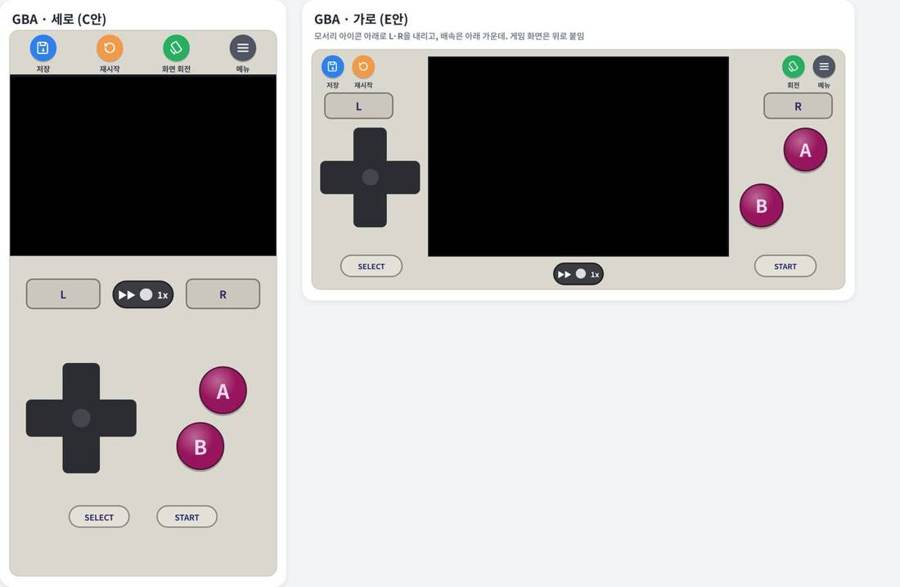
게임기별 터치 패드 예 (GBA). 세로는 화면 위·패드 아래, 가로는 화면 가운데·버튼 양옆. 상단에는 저장 · 재시작 · 화면 회전 · 메뉴.
닌텐도 3DS (0.0.167, 시험판)
libretro Citra 코어(2026년 9월 기준 소스, 앱 빌드 시 arm64로 컴파일)를 넣어 .3ds · .cci · .cxi 게임을 실행합니다. OpenGL ES 3로 그리며, 화면 틀은 닌텐도 DS와 같이 세로에서는 위 화면(400×240, 5:3)과 아래 화면(320×240, 4:3)을 위아래로, 가로에서는 위 화면을 크게 왼쪽에 아래 화면을 작게 오른쪽에 둡니다. 아래 화면은 손가락으로 터치합니다.
키 파일: 시판 카트리지 덤프는 암호화돼 있어 3DS 본체에서 추출한 aes_keys.txt를 목록 화면의 "3DS 키 파일" 타일로 등록해야 합니다. 복호화된(decrypted) 덤프는 키 없이 실행됩니다. ROM 검사가 NCSD/NCCH 헤더와 암호화 여부를 알려 줍니다.
조작: DS 패드에 서클 패드(왼쪽 스틱)가 더해지고, ABXY를 조금 안쪽으로 옮겼습니다. 감도는 설정 시트의 "스틱 감도"로, 게임패드 버튼 설정은 휴대용 기기 그림(GBA형)을 씁니다.
화질: 게임 중 메뉴의 "화질 (해상도)"에서 1배(기본) · 2배 · 3배를 게임별로 고릅니다. 바꾸면 장면을 저장하고 다시 켭니다.
세이브와 가상 SD는 앱 안 saves/citra/Citra/ 아래에 둡니다. 3D 입체는 끔, 시스템 언어는 한국어로 고정했습니다. 되감기는 3DS에서 지원하지 않습니다.
시험판 한계: 폰 성능에 따라 1배로도 느린 게임이 많습니다. Vulkan은 코어가 OpenGL로 고정돼 있어 쓰지 않습니다.
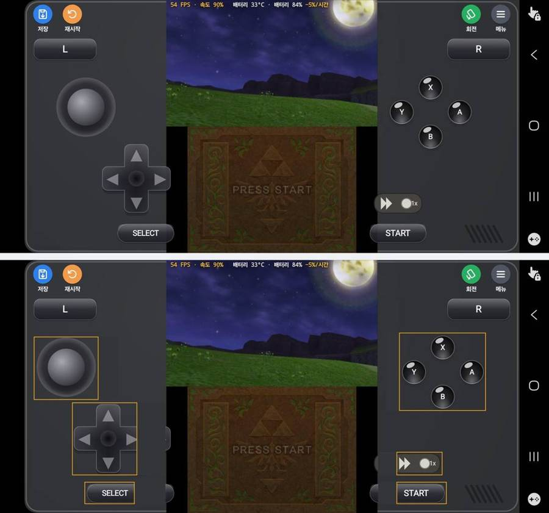
3DS 가로: 위가 0.0.172, 아래가 0.0.173(조작 묶음을 양옆으로). 두 화면은 DS처럼 가운데 위아래로, 왼쪽에 L · 서클 패드 · 방향키 · SELECT, 오른쪽에 R · ABXY · 배속 · START.
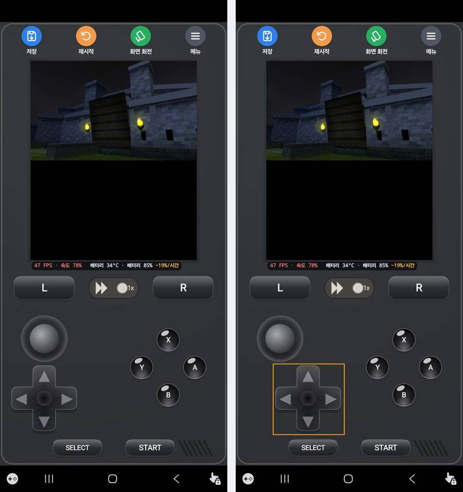
3DS 세로: 왼쪽이 0.0.171, 오른쪽이 0.0.172(방향키를 서클 패드 오른쪽 아래로).
3DS CIA 설치 · 업데이트 · DLC (0.0.168)
목록 화면의 "CIA 설치" 타일로 .cia 파일(게임 · 업데이트 · DLC)을 Citra의 가상 SD 카드에 설치합니다. 설치는 Citra 엔진에 넣은 작은 패치로 엔진 자체의 설치기를 불러 처리하므로, 암호화된 CIA는 키 파일(aes_keys.txt)이 있어야 풀립니다.
파일을 하나 또는 여러 개 고르면 앱이 각 파일의 제목 ID를 읽어 종류(게임 / 업데이트 / DLC)와 대상 게임을 보여 주고, 확인 뒤 파일마다 진행 막대를 띄우며 차례로 설치합니다. 하나가 실패해도 나머지는 계속합니다.
게임 CIA는 설치 후 가상 SD의 실행 파일(.app)로 가는 링크가 목록에 추가되고 "설치됨" 배지가 붙습니다. 카트리지 게임에는 설치된 "업데이트 vX" · "DLC" 배지가 붙고, 게임을 켜면 Citra가 같은 제목 ID의 업데이트·DLC를 자동으로 적용합니다.
게임을 길게 누른 메뉴의 "업데이트 · DLC 관리"에서 설치된 항목을 하나씩 지우거나 CIA를 더 넣을 수 있습니다. CIA로 설치한 게임은 "ROM 삭제"로 지우면 가상 SD의 타이틀도 함께 지워집니다.
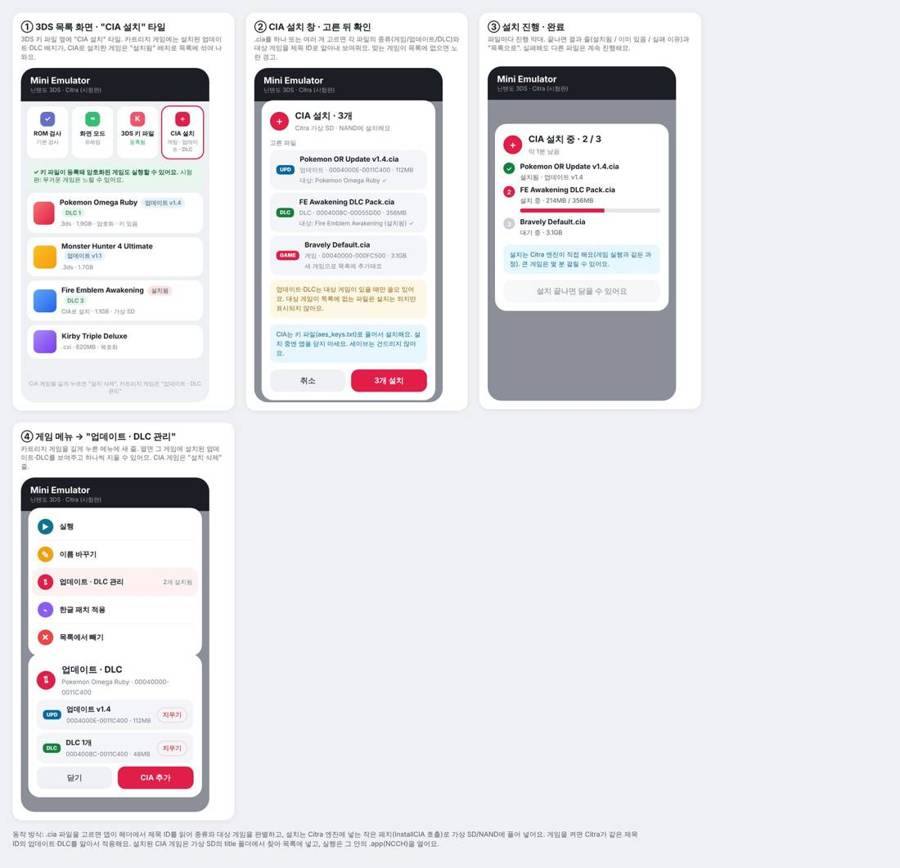
CIA 설치 흐름 시안: 목록 타일 → 확인 창 → 진행 → 게임별 업데이트·DLC 관리.
3DS 실기 확인 뒤 고친 것 (0.0.169 ~ 0.0.181)
0.0.169 세로에서 서클 패드가 위로 잘리고 L · R이 다른 버튼과 겹치던 문제: 3DS는 조작부 높이를 352dp로 더 확보. 가로에서 2:1 틀 안에 두 화면이 위아래로 작게 쌓이던 문제: Citra에 "위 크게 · 아래 작게" 배치를 넘김. L 버튼을 저장 · 재시작 버튼 아래로.
0.0.170 게임을 켤 때 이전 자동 저장을 이어 불러오다 죽던 문제. Citra는 상태를 복원할 때 시스템을 껐다 켜는데, 다시 켜진 시스템이 GL이 준비되기 전에 렌더러를 만들어 비어 있는 GL 함수를 불렀음. 첫 화면이 그려진 뒤에 이어 불러오도록 순서를 바꿈.
0.0.181CIA 설치가 실제로는 엉뚱한 폴더에 들어가던 근본 원인 수정. 앱이 Citra 설치기에 사용자 폴더 경로를 끝 슬래시 없이 넘겼는데 Citra는 하위 경로를 문자열로 이어붙이므로, 타이틀이 Citra/sdmc가 아니라 옆 폴더 Citrasdmc에 설치되었습니다. 그래서 "설치 완료"가 떠도 게임 목록 · 업데이트 · DLC에 전혀 반영되지 않았고(같은 게임을 .3ds로 한 번 켠 뒤라면 "content 폴더가 없어요"), 키 파일도 엉뚱한 곳에서 찾아 암호화 CIA는 "키 없음"으로 실패했습니다. 데스크톱 Citra에서 같은 CIA가 잘 되는 이유가 이것입니다. 이제 경로에 슬래시를 붙이고, 이전 버전이 Citrasdmc에 넣어 둔 타이틀은 "CIA 설치" 창이나 설치를 열 때 제자리로 옮겨 "설치된 게임을 목록에 다시 넣기"로 바로 쓸 수 있습니다. 함께, TMD 목록보다 내용이 적거나 잘린 CIA를 Citra가 성공으로 보고하던 동작도 고쳐 "CIA가 불완전해요"로 알립니다.
0.0.175 CIA의 제목 ID를 잘못 읽던 버그 수정(TMD 서명 종류 4바이트를 빼먹어 ID가 4바이트 밀려 "00000000-0004008C"처럼 보이고, 게임 CIA가 게임으로 인식되지 않아 목록에 안 들어갔음). 설치 자체는 Citra가 하므로 영향이 없었고 표시 · 대상 게임 찾기 · 목록 추가만 틀렸음. "CIA 설치" 창에 가상 SD의 모든 업데이트 · DLC를 ID와 대상 게임으로 보여 주어, 지역판이 다른 DLC를 바로 알 수 있게 함.
0.0.174 CIA 게임을 설치했는데 목록에 안 보이던 경우를 위해, 결과 줄에 못 넣은 이유(실행 파일 없음 · 링크 실패 · 게임 아님)를 적고 "CIA 설치" 창에 "설치된 게임을 목록에 다시 넣기" 버튼을 추가. 가상 SD에 있는 게임 중 목록에 없는 것을 다시 연결합니다.
0.0.173 가로 조작 묶음을 양옆으로 더 벌림(서클 패드 32dp · 방향키 46dp · SELECT 50dp 왼쪽, ABXY 20dp · 배속 · START 30dp 오른쪽, L · R은 그대로). 실기에서 화면 폭이 넓어 방향키 · SELECT가 화면 틀에 붙던 것을 고침.
0.0.172 가로 화면 배치를 DS와 똑같이(두 화면을 가운데 위아래로, 게임패드 모드에서는 나란히). 조작도 다시 배치: 왼쪽 L → 서클 패드 → 그 오른쪽 아래 방향키 → SELECT, 오른쪽 R → ABXY(서클 패드 높이, 안쪽으로) → 배속 → START. 세로에서는 방향키를 50dp 오른쪽으로.
0.0.171 게임을 닫고 바로 다시 켜면 죽던 문제. 이전 게임 프로세스가 상태 저장을 마치기 전에 새 게임이 같은 프로세스에 들어가 Citra가 두 번 초기화됨. 목록에서 게임을 켤 때도 이전 프로세스가 끝날 때까지 기다리게 함(모든 기종).
엔진 업데이트 (0.0.213)
PCSX ReARMed(PS1, 10/29판), FBNeo(10/29판), MAME 2003-Plus(10/30판)를 최신으로 바꾸고, 아케이드 ZIP을 알아보는 롬셋 목록도 새로 만들었습니다. FBNeo는 새 롬셋 71개, MAME 2003-Plus는 새 롬셋 673개가 늘었고, MAME 2003-Plus의 31개 롬셋은 이름이 바뀌거나 빠졌습니다(예: 47pie2, astorm2p, chplft). 다른 엔진은 이미 최신이거나 번역 파일만 바뀌어 그대로 둡니다.
게임큐브 · Wii (시험판 · 0.0.211)
0.0.101~0.0.104에 있다가 0.0.105에서 뺐던 모드를 다시 넣었습니다. 엔진은 Dolphin libretro 10/29판으로 바꿨습니다.
항목
내용
게임 파일
.rvz · .iso · .gcm · .gcz · .wbfs · .wia · .ciso (게임큐브 / Wii는 파일을 읽어 자동 구분). BIOS 필요 없음. 안드로이드 8 이상
게임큐브 조작
L · R · Z, 스틱, 큰 A 둘레 B · X · Y(B안), 방향키, C 스틱, START. 가로는 버튼을 화면 옆 칸 안으로 모음
Wii 조작 (게임별)
리모컨 + 눈차크(기본) / 리모컨 가로로 / 클래식 컨트롤러. 화면을 누른 곳이 리모컨 포인터, 흔들기 버튼, − HOME +
저장
이어하기 · 빠른 저장 · 세이브 슬롯 됨 (되감기는 없음)
게임기 탭 (0.0.212)
Wii 조작 방식(Wii 게임만), 해상도 1배(기본) · 2배 · 3배, 화면 비율(게임대로 · 4:3 · 16:9로 늘리기 · 와이드 16:9로 그리기), 속도 우선(CPU 80% · 가벼운 텍스처 검사 · 빠른 디스크 읽기). 모두 게임별 · 바꾸면 그 장면에서 이어짐
게임큐브 · Wii 시안. 해상도 · 화면 비율 · 속도 우선 줄은 0.0.212에서 들어갔습니다.
PS Vita (실험적 · 0.0.292)
엔진은 Vita3K의 libretro 이식판(GPL-2)입니다. 안드로이드용으로 직접 빌드했고(cores/build-vita3k.sh, 안드로이드 앱 전용 코드를 빼는 패치 포함), 그림은 Vulkan으로 그립니다. 실험 단계라 게임마다 잘 안 될 수 있습니다.
게임: .vpk (직접 가진 게임을 뽑은 파일). .zip으로 받은 게임은 확장자를 .vpk로 바꾸면 됩니다. 처음 켤 때 한 번 설치합니다(몇 분).
펌웨어 필수: 소니 PlayStation 공식 사이트의 PS Vita 시스템 소프트웨어 파일을 직접 받아 PS Vita 화면의 펌웨어 칸에 넣습니다 — 본체 PSP2UPDAT.PUP(필수), PREINST · FONT(권장, 기본 앱과 글꼴). 파일 이름이 같을 수 있어 칸마다 따로 고르고, .PUP가 아닌 파일은 받지 않습니다. 앱에는 들어 있지 않습니다. 없으면 게임을 켤 때 안내합니다.
조작: 방향키 · △○×□ · L/R · START · SELECT · 스틱 두 개 (PS2와 같은 배치). 앞면 터치 = 게임 화면을 누르기, 뒷면 터치 = L2를 누른 채 화면 누르기.
빠른 저장 · 이어하기 · 되감기 · 세이브 슬롯 없음: 엔진이 장면 저장을 지원하지 않습니다. 게임 안에서 저장하세요. 처음 켤 때 안내가 한 번 뜹니다.
성능 탭 · 해상도 배율: 1배(960×544, 추천) · 2배 · 3배, 게임마다. 바꾸면 다시 켜집니다(타이틀부터).
시안에서 바뀐 점: 렌더러는 Vulkan으로 고정(이식판의 OpenGL은 데스크톱 GL용), 뒷면 터치는 따로 버튼 대신 L2를 누른 채 터치(엔진 방식), .zip · 게임 폴더는 받지 않고 .vpk만.
PS Vita .pkg 가져오기 (0.0.296)
.pkg(소니의 암호화된 공식 설치 파일)도 게임으로 넣을 수 있습니다. 풀려면 그 게임의 라이선스가 필요합니다 — zRIF 문자열(KO5i…로 시작)을 붙여넣거나, 본인 PS Vita의 ux0:license/app/타이틀ID/ 에 있는 work.bin 파일을 고릅니다. 둘 중 하나면 됩니다.
라이선스는 게임 파일 옆에 이름.pkg.zrif / 이름.pkg.work.bin으로 저장되고, 엔진(Vita3K) 자체의 PKG 설치 기능이 그것으로 처음 실행 때 한 번 설치합니다(몇 분, 진행 막대 없음 — 화면이 멈춰 있어도 기다려 주세요). 설치가 끝나면 다음부터는 바로 켜집니다.
라이선스 없이 .pkg를 켜면 라이선스 창이 뜹니다. 게임을 길게 눌러 PKG 라이선스 넣기 / 바꾸기로 언제든 바꿀 수 있고, 목록에는 “PKG · 라이선스 ✓ / 설치됨 / 라이선스가 필요해요”가 표시됩니다. 게임을 지우면 라이선스 파일도 같이 지워집니다.
본인이 산 게임의 라이선스만 써 주세요. 남의 라이선스로 푸는 것은 불법 복제입니다.
시안에서 바뀐 점: 설치 진행 막대 대신 시작 안내(엔진이 진행 상황을 앱에 알려 주지 않음), 라이선스가 틀리면 엔진의 오류 메시지로 알려 줍니다.
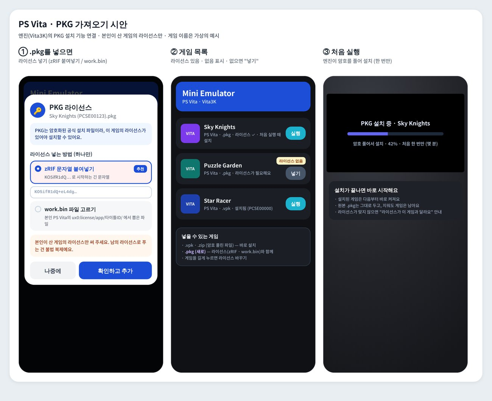
PS Vita .pkg 라이선스 시안 (이름은 가상의 예시).
PS Vita 한글패치 · 업데이트 · DLC PKG (0.0.297)
게임을 길게 누르면 세 가지가 있습니다.
한글패치 넣기: (0.0.349부터 rePatch · 덮어쓰기 · 코드 패치도 — 아래 참고) xdelta 패치 zip(예: data_rom.apk.xdelta 등과 checksums.txt)을 고르면, 설치된 게임 파일(ux0/app/타이틀ID/)에서 같은 이름의 파일을 찾고 패치에 적힌 원본 SHA-256과 맞는지 먼저 확인해 파일마다 “원본 맞음 / 이미 적용 / 건너뜀 / 없음”을 보여 줍니다. 적용은 파일 옆에 새 파일을 만들어 결과 해시까지 확인한 뒤 바꿔 넣으므로, 실패하면 원래 파일이 그대로 남습니다. 원본이 다른 파일만 건너뜁니다(예: PC Vita3K로 복호한 eboot.bin을 원본으로 하는 패치 — 실행 파일 속 문구만 일본어로 남음). 게임을 한 번 켜서 설치한 뒤에 넣을 수 있고, 가장 큰 파일만큼 공간이 잠깐 더 필요합니다. 목록에는 “한글패치 ✓”가 표시됩니다.
업데이트 · DLC PKG 넣기: 같은 타이틀 ID의 업데이트 · DLC .pkg를 넣어 두면, 다음에 게임을 켤 때 엔진(Vita3K)의 PKG 설치 기능이 라이선스로 풀어 설치합니다(업데이트는 게임 폴더에 합쳐짐 — Vita3K 방식). 업데이트는 게임의 라이선스(zRIF · work.bin)를 자동으로 같이 쓰고, DLC는 그 DLC의 라이선스를 넣습니다. 창에 본편 · 설치된 업데이트(버전) · DLC · 설치 대기 · 실패가 표시되고, 대기 중인 PKG를 눌러 라이선스를 바꾸거나 뺄 수 있습니다. 한글패치는 업데이트를 먼저 설치한 뒤에 넣으세요.
게임 다시 설치: 설치된 게임(과 업데이트 · 한글패치)을 지우고, 다음에 켤 때 원본 .vpk / .pkg에서 새로 설치합니다. 세이브와 DLC는 그대로입니다.
본인이 가진 게임과 그 게임의 패치 파일만 쓰세요. 패치 적용 결과(게임 파일)는 재배포하면 안 됩니다.
시안에서 바뀐 점: 업데이트 · DLC는 바로 설치하지 않고 다음 실행 때 설치(엔진이 게임을 켤 때만 동작), DLC는 게임과 다른 자기 라이선스를 씀.
PS Vita 고침 (0.0.300)
시스템 대화상자 자동 응답: 이 엔진(libretro 판)에는 게임이 띄우는 시스템 대화상자(트로피 준비 · 메시지 · 세이브 데이터 · 글자 입력)를 그리는 화면이 없어서, 게임이 대답을 기다리며 멈췄습니다(예: 드래곤볼 Z 배틀 오브 Z의 NOW LOADING). 이제 매 화면 엔진이 사람이 누를 법한 답을 대신 고릅니다: 트로피 준비는 바로 끝, 메시지는 첫 단추(OK · 예), 세이브 데이터는 예 · OK 또는 첫 칸, 글자 입력은 게임이 넣어 둔 그대로 확인. 단추 없는 대화상자(진행 막대 · 저장 중)는 게임이 스스로 닫습니다. 그래서 세이브 칸을 직접 고를 수 없고 늘 첫 칸을 씁니다.
엔진 폴더 맞춤: 엔진은 받은 시스템 폴더 안에 자기 이름(vita3k) 폴더를 하나 더 만들어 씁니다(files/system/vita3k/vita3k). 앱이 한 단계 위를 보고 있어서 PREINST · FONT 펌웨어가 설치되지 않았고, 한글패치 · 업데이트 대기 · PKG 설치 표시가 설치된 게임을 찾지 못했습니다. 이제 앱도 엔진 폴더를 쓰고, 전에 넣은 펌웨어 파일과 대기 중인 PKG는 처음 한 번 옮깁니다.
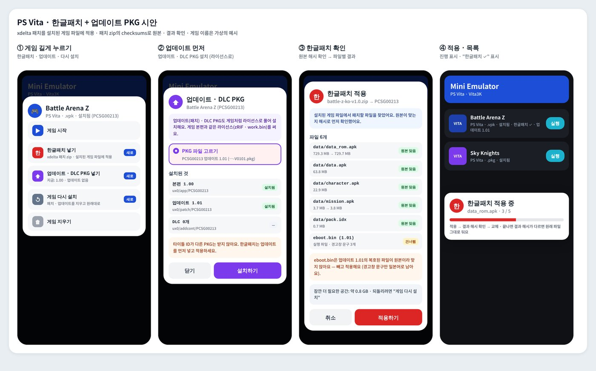
PS Vita 한글패치 · 업데이트 PKG 시안 (게임 이름은 가상의 예시).
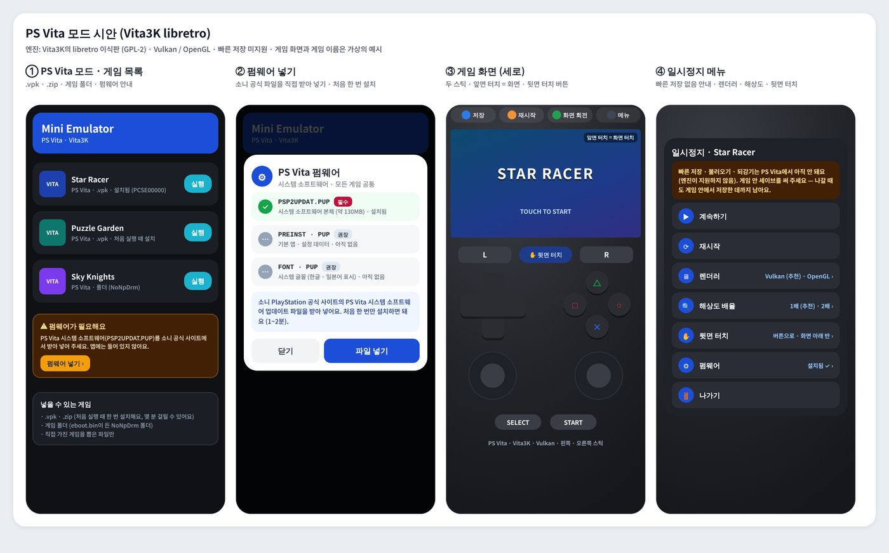
PS Vita 모드 시안 (게임 화면과 이름은 가상의 예시).
Wii U (실험적 · 0.0.210)
엔진은 Cemu(libretro 판, 안드로이드 arm64 빌드)입니다. 직접 덤프한 게임만 넣을 수 있고, 앱에는 키가 들어 있지 않습니다.
항목
내용
게임 파일
.wua (Cemu 묶음 · 업데이트 · DLC 포함 가능, 키 없이 실행) · .wud · .wux (디스크 이미지 · 키 필요)
키 파일
Wii U 화면의 "Wii U 키 파일" 칸에서 본인 기기에서 뽑은 keys.txt 등록 (디스크 옆 같은 이름의 .key도 인식)
세로 화면
위 TV · 아래 게임패드(터치) / TV만 / 게임패드만. 아래에 "화면 전환" 버튼
가로 화면
TV 크게 + 게임패드 작은 창(터치) / TV만 / 게임패드만. 작은 창은 버튼 배치 편집에서 위치 · 크기 변경
버튼
ZL · L · R · ZR, 왼쪽 · 오른쪽 스틱(L3 · R3), 방향키, A · B · X · Y, − · +. 엔진에 HOME 버튼이 없어 HOME은 빠짐
게임기 탭
게임패드 화면, 해상도(0.5배 · 0.75배 · 1배 기본 · 1.5배, 게임별 · 바꾸면 다시 켜짐)
없는 기능
이어하기 · 되감기 · 빠른 저장 · 세이브 슬롯 (Cemu가 상태 저장을 못 함 → 게임 안 저장만), 와이파이 멀티 (치트는 0.0.266부터 치트 팩으로), 폴더(풀어 둔 게임) 가져오기
권장
스냅드래곤 8 Elite급 이상. 첫 실행은 셰이더를 만드느라 끊길 수 있음. 전원 모드는 "성능"으로 시작
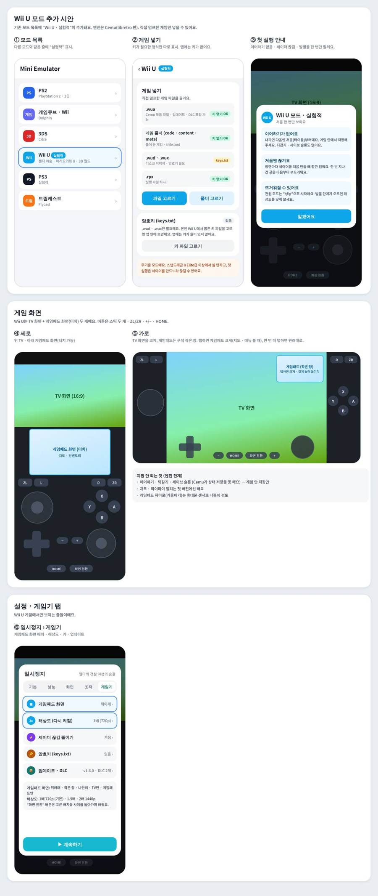
Wii U 모드 시안. 실제 버튼 배치는 시안과 조금 다르고(HOME 없음 · L3 · R3 추가), 게임 넣기는 파일만 지원합니다.
엔진 업데이트 (0.0.249)
GBA · GBC (mGBA): 처음 앱을 되살릴 때 원래 APK에서 꺼낸 엔진(2023~2024년쯤 빌드)을 그대로 쓰던 것을, 다른 엔진처럼 소스(libretro mGBA, 2026-09-16)에서 직접 빌드하도록 바꿨습니다. 세이브(.sav)는 그대로 이어지지만, 예전 엔진으로 만든 상태 저장(세이브 스테이트)은 안 열릴 수도 있습니다.
최신으로 올림: 닌텐도 64 Mupen64Plus-Next(10-22) · 메가드라이브 · 마스터시스템 Genesis Plus GX(10-30) · 패미컴 FCEUmm(11-02) · PC엔진 Beetle PCE Fast(10-30) · 아케이드 MAME 2003-Plus(11-03) · FBNeo(11-03).
PSP(PPSSPP v1.20.4) · 드림캐스트(Flycast v2.7) · PS2 Play!(0.77)는 정식판 최신을 유지합니다. 나머지 엔진은 원본 저장소의 최신과 같습니다(11-04 확인).
DOS 모드 (DOSBox Pure · 0.0.261)
고전 PC(MS-DOS) 게임 · 한글판 DOS 게임을 폰에서 합니다. 엔진은 libretro용 DOSBox Pure(1.0-preview7, GPL-2)입니다.
항목
내용
게임 넣기
게임 폴더를 zip으로 묶어 ROM 추가(.zip · .dosz). zip은 풀지 않고 그대로 C: 드라이브로 씁니다. 7z · rar(분할 포함)는 가져올 때 같은 이름의 zip으로 바꿔 넣습니다. 시디 게임은 .iso · .cue · .chd, 디스크 이미지는 .img · .ima · .vhd
처음 실행
zip 안의 실행 파일(.exe · .com · .bat) 목록에서 시작 파일을 한 번 고릅니다. 이름 · 크기로 추천하고, SETUP · INSTALL은 "설정 · 설치"로, HANGUL 같은 한글 출력기는 "함께 실행"으로 게임 전에 먼저 돌릴 수 있습니다. "DOS 화면으로"는 DOSBox Pure의 시작 메뉴(명령 줄 포함)로 들어갑니다. 게임 메뉴의 "실행 파일"에서 다시 고를 수 있습니다
긴 이름 · 한글 이름 (0.0.262)
DOSBox Pure가 긴 이름을 줄이는 규칙(앞 4자 + 뒤 4자, 대문자, DOS에 못 쓰는 글자는 '-', 같은 이름이 있으면 글자 하나씩 올림)을 앱이 zip 순서 그대로 똑같이 계산해서, Prince of Persia (1990) 같은 폴더도 PRIN990)로 바로 시작합니다. 한글 이름도 바이트 그대로 맞춥니다. 실행 파일 목록에 DOS 이름이 함께 보입니다
설정 파일 dosbox.conf (0.0.262)
eXoDOS식이나 직접 만든 dosbox.conf를 읽어 그 게임에 맞춘 값을 채웁니다. 넣는 법: ROM 추가 때 zip과 함께 고르기(같은 이름이거나 같이 고른 게임이 하나면 짝지음, 모든 파일 접근이 켜져 있으면 zip 옆의 같은 이름 · dosbox.conf도 찾음) 또는 게임 메뉴 → DOS 설정 → 설정 파일 넣기. 읽는 값: CPU 속도(cycles, 가장 가까운 값), 사운드 카드(sbtype · oplmode), 메모리(memsize), Gravis Ultrasound(gus), 실행 순서([autoexec]). 적용 전에 읽은 값과 실행 순서를 보여 줍니다. mount · imgmount 줄은 뺍니다(엔진이 zip을 C:로 이미 붙이고, 시디 이미지는 zip 안에 있으면 붙임). 긴 폴더 이름으로 가는 cd 줄은 DOS 이름으로 바꿉니다. DOS 설정에 "설정 파일에서 가져옴"이 표시되고, 시작에 "설정 파일의 실행 순서"가 생깁니다(실행 순서 보기 · 다른 conf 넣기 · 지우기). CPU · 사운드를 직접 바꾸면 그 값이 우선입니다. MIDI 설정(mididevice)은 0.0.263부터 적용합니다
세로 조작
게임 화면 아래 자주 쓰는 키 두 줄(기본 Esc · Enter · Space · Y · N · F1 · F2 · F3 · F10 · Tab) + "⌨ 전체 키보드" · "🖱 마우스 모드", 방향 패드(방향키, 8방향), 마우스 패드(밀기 = 커서, 톡 = 클릭, 두 손가락 톡 = 오른쪽 클릭, 길게 누른 뒤 밀기 = 끌기), 큰 버튼 Ctrl · Alt · Shift · Enter
가로 조작
화면 가운데, 왼쪽 방향 패드, 오른쪽 큰 버튼(2×2) + 작은 마우스 패드, 화면 아래 키 줄
전체 키보드
숫자 · 영문 · 기호 · 방향키 · F1~F12(전환). Shift · Ctrl · Alt는 톡 = 다음 키 하나에만, 길게 = 고정. "닫기"로 돌아감
마우스 모드
게임 화면 자체가 마우스 패드가 됩니다(밀기 · 톡 · 길게 끌기 · 두 손가락). 옆에 Esc · Enter · Space, 왼쪽 · 오른쪽 클릭, 휠 ↑↓ 버튼. DOS 설정의 마우스를 "누른 곳으로"로 바꾸면 누른 자리로 커서가 갑니다(그걸 지원하는 게임만)
DOS 설정 (게임별)
CPU 속도(자동 · 286 · 386 · 486 · 펜티엄 · 최대), 사운드(Sound Blaster 16 · AdLib · PC 스피커), 메모리(16 · 32 · 64MB), 처음 보이는 조작(방향키 + 버튼 · 마우스 패드 · 키보드만), 마우스 방식, 시작(고른 실행 파일 · 시작 메뉴), 키 줄 · 큰 버튼 고치기("Ctrl=공격"처럼 이름 붙이기). 다음 실행부터 적용
세이브
게임이 쓴 파일은 원본 zip을 건드리지 않고 그 게임의 세이브 파일(.sav)에 따로 쌓입니다. 그래서 세이브 내보내기 · 가져오기 · 삭제 · 클라우드 백업이 다른 게임기처럼 됩니다. 빠른 저장 · 이어하기도 엔진의 상태 저장으로 됩니다
한글패치 덮어쓰기 (0.0.291)
게임 파일을 한글판 파일로 바꿔 끼우는 방식의 패치(zip)를 넣습니다. 게임을 길게 눌러 "한글패치 덮어쓰기" → 패치 zip 고르기. 앱이 같은 이름의 파일로 게임 폴더를 찾아(패치가 폴더째 들어 있어도 됨) 바뀌는 파일 · 새 파일 · 그대로인 파일 수와 목록을 먼저 보여 주고, 원본은 그대로 둔 채 새 게임 "이름 (한글)"로 추가합니다. 패치에 RUN.BAT 같은 시작 파일이 있으면 그것으로 시작하게 고를 수 있고(기본 켬), DOS 설정(CPU · 사운드 · 키 등)은 원본 것을 이어받습니다. 패치 프로그램(.exe)을 실행해야 하는 방식이나 7z · rar 패치는 안 됩니다(zip으로 바꿔서). 예: 코브라 미션 + 한글패치 → 바뀌는 파일 12개 · 새 파일 2개(KOREAN.FNT · RUN.BAT) · 똑같은 파일 2개.
둠 소리 (0.0.290)
DOOM · DOOM II(파이널 둠 포함)는 사운드 카드 설정을 게임 폴더의 DEFAULT.CFG에서 읽는데, 이 파일은 SETUP.EXE로 만들어집니다. 게임 파일(EXE + WAD)만 있는 zip은 이 파일이 없어 소리 없이 시작했습니다. 이제 앱이 그 게임의 세이브에 DEFAULT.CFG를 넣어 줍니다: 효과음 Sound Blaster(220 · IRQ 7 · DMA 1), 음악은 MIDI가 켜져 있으면 General MIDI(330, 앱의 사운드폰트), 꺼져 있으면 Sound Blaster FM. 게임이 DEFAULT.CFG를 가지고 있거나 이미 카드가 설정돼 있으면 건드리지 않습니다. DOS 설정의 사운드가 Sound Blaster일 때만 넣습니다.
MIDI 음악 (0.0.263)
DOS 설정에 MIDI 칸(끔 · General MIDI(기본) · MT-32 · SC-55). General MIDI는 앱에 든 자유 사운드폰트 TimGM6mb(GPL-2, 약 6MB)로 바로 나오고, DOS 설정 → 🎵 MIDI 음원 관리에서 내 .sf2로 바꿀 수 있습니다. Roland MT-32(MT32_CONTROL.ROM + MT32_PCM.ROM, CM32L_ 이름도 됨) · SC-55(ROM1 · ROM2 · WAVEROM 등)는 저작권 때문에 앱에 없고, 본인 기기에서 뽑은 파일을 등록하면 쓸 수 있습니다. ROM이 없으면 General MIDI로 대신합니다. 게임 zip 안의 DOSBOX.SF2는 엔진이 알아서 씁니다. 게임의 SETUP에서 음악 장치를 General MIDI(또는 MT-32 · Roland)로 골라야 MIDI 소리가 납니다. conf의 mididevice · mpu401도 적용합니다
한글 표시 (0.0.263)
conf 안의 한글(UTF-8 · 옛 한글 CP949를 알아내서)과 실행 파일 목록의 DOS 이름을 제대로 읽히게 보여 줍니다. 엔진이 앞뒤 4바이트로 자른 한글 이름은 잘린 자리를 '·'로 보여 줍니다(예: "창세기전 한글판" → "창·판"). 시작 파일에는 원래 바이트 그대로 씁니다
게임패드 · 키보드
블루투스 게임패드는 DOSBox Pure의 자동 연결(알려진 게임은 게임에 맞게, 아니면 방향키 · 버튼)로 키에 이어집니다. 블루투스 · USB 키보드는 그대로 DOS 키보드가 됩니다
버튼 배치 편집 (0.0.267)
다른 게임기와 같은 편집기에서 DOS 버튼을 하나씩: 게임 화면 · 방향 패드 · 마우스 패드 · Ctrl · Alt · Shift · Enter(큰 버튼) · 마우스 모드 버튼, 키 줄은 줄 통째로. 편집 중 키 줄의 키를 길게 누르면 줄에서 꺼내 따로 놓을 수 있고(예: Esc를 오른쪽 위로), 꺼낸 키를 길게 누르면 줄로 돌아감. 꺼낸 키는 키 이름으로 기억해서 게임마다 키 줄이 달라도 그 키가 있으면 그 자리에. 세로 · 가로 따로 저장
버튼 꾸미기 (0.0.267)
테마(원색 · 화이트 · 블랙 · 윤곽선 · 네온 · 파스텔 · 내 색 · 버튼마다 색) · 모양 · 글자(숨김 · 작게) · 크기(방향 패드 / 큰 버튼 / 키 줄 묶음별)를 DOS 버튼에도 적용
3D 가속 (0.0.267, 실험적)
DOS 설정의 "3D 가속 (3dfx Voodoo)": 소프트웨어(기본) · 하드웨어(OpenGL ES, 폰 GPU) · 끔. 3dfx(Glide) 판이 있는 게임만 해당(게임 SETUP에서 3Dfx/Glide 선택). 하드웨어로 켜면 DOS 화면 전체가 GPU로 그려지고, GPU를 못 쓰면 엔진이 소프트웨어로 돌아감. 다음 실행부터
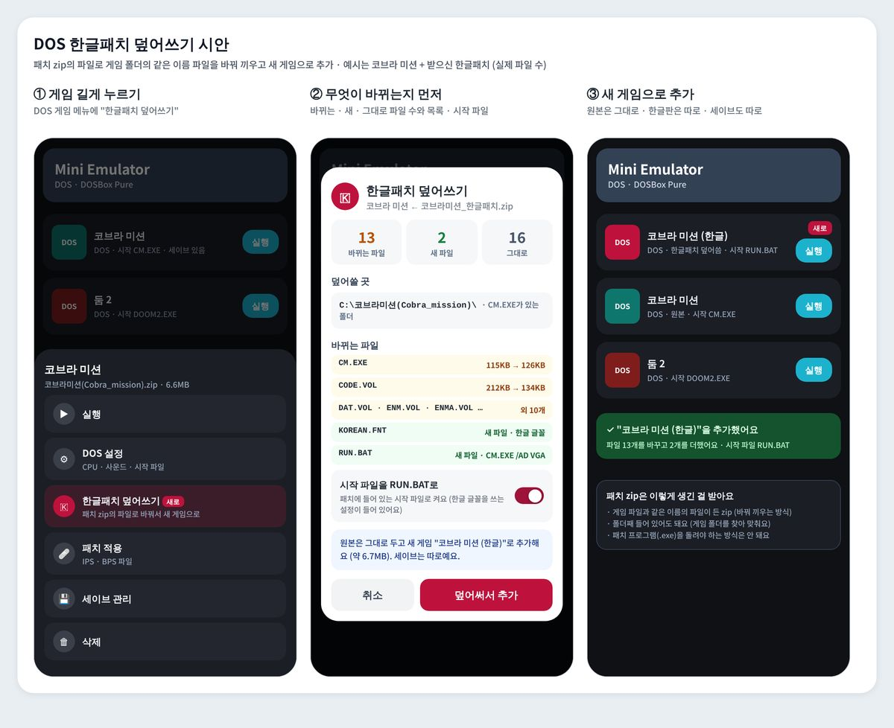
DOS 한글패치 덮어쓰기 시안.
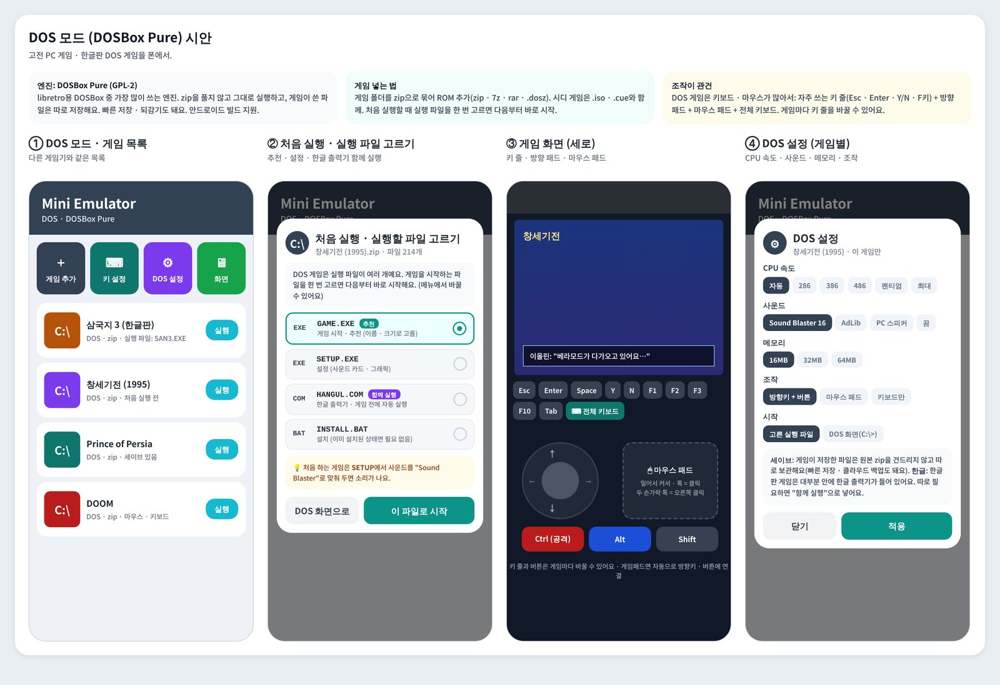
DOS 모드 시안: 게임 목록 · 처음 실행 때 실행 파일 고르기 · 세로 게임 화면 · DOS 설정. 실제 화면은 시안과 조금 다를 수 있습니다.
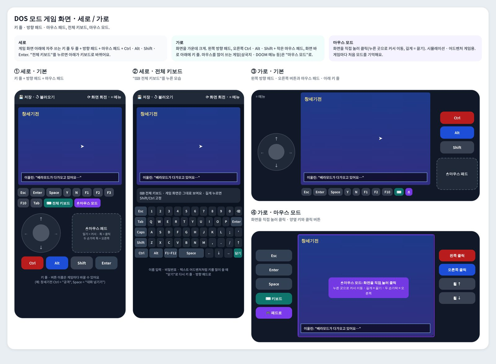
DOS 게임 화면 시안: 세로 기본 · 세로 전체 키보드 · 가로 기본 · 가로 마우스 모드.
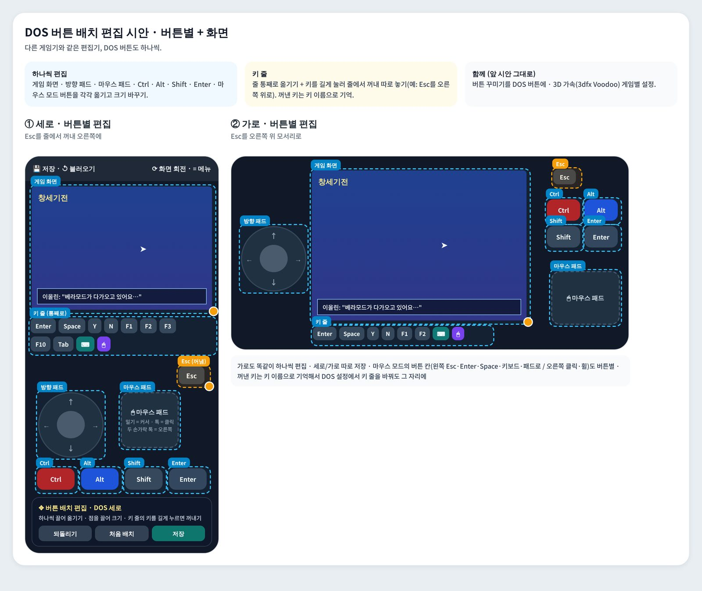
0.0.267 DOS 버튼 배치 편집 시안: 버튼별 · 게임 화면 · 키 꺼내기(Esc).
3. 게임 목록 (라이브러리)
ROM 가져오기: 파일 선택으로 앱 안에 복사. .zip, .cue+.bin, .chd 등 게임기별 형식 지원. 여러 개 한 번에 가능.
커버: 게임 이름으로 자동 검색, 길게 눌러 직접 사진 지정.
게임별 메뉴(길게 누르기): 실행 · 즐겨찾기 · 이름 변경 · 엔진 변경 · 세이브 내보내기/가져오기 · 세이브 삭제 · 한글 패치 적용 · ROM 삭제 · 여러 개 삭제.
여러 개 삭제 (0.0.234): 목록만 스크롤되고 취소 · 세이브 삭제 · ROM 삭제 버튼은 창 아래에 고정. 고른 개수와 용량, "선택한 것만 보기". 위쪽에 검색과 빠른 고르기(전체 선택 · 패치본만 · 세이브 버튼 · 선택 해제). 세이브 버튼은 누를 때마다 전체(회색 "세이브 ⇄") → 세이브 있음(파란색 💾) → 세이브 없음(주황색 ⊘)으로 바뀌고, 목록 아래에 지금 보는 조건이 같은 색으로 나옵니다. 지우기 전에 고른 게임 이름을 한 번 더 보여줍니다.
배지: 세이브 있음, [패치] 적용본, 즐겨찾기 표시.
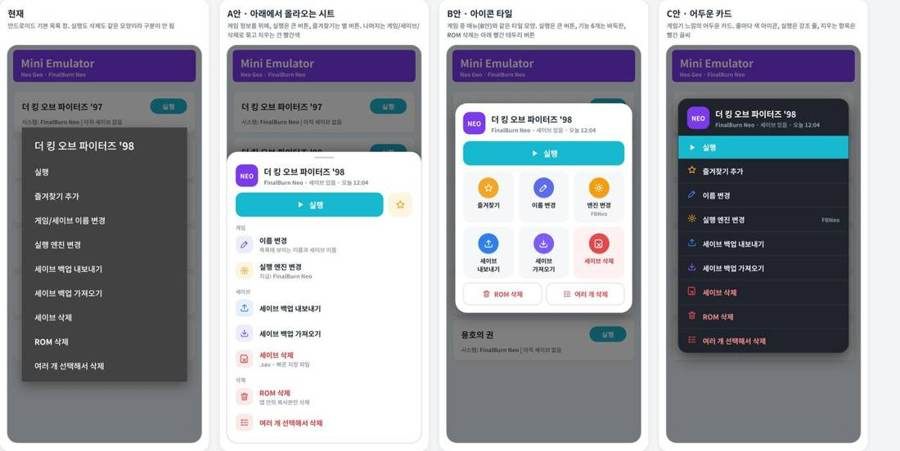
게임 길게 누르기 메뉴 시안. 안드로이드 기본 목록(맨 왼쪽)을 아이콘 타일(B안)로 바꿨습니다.
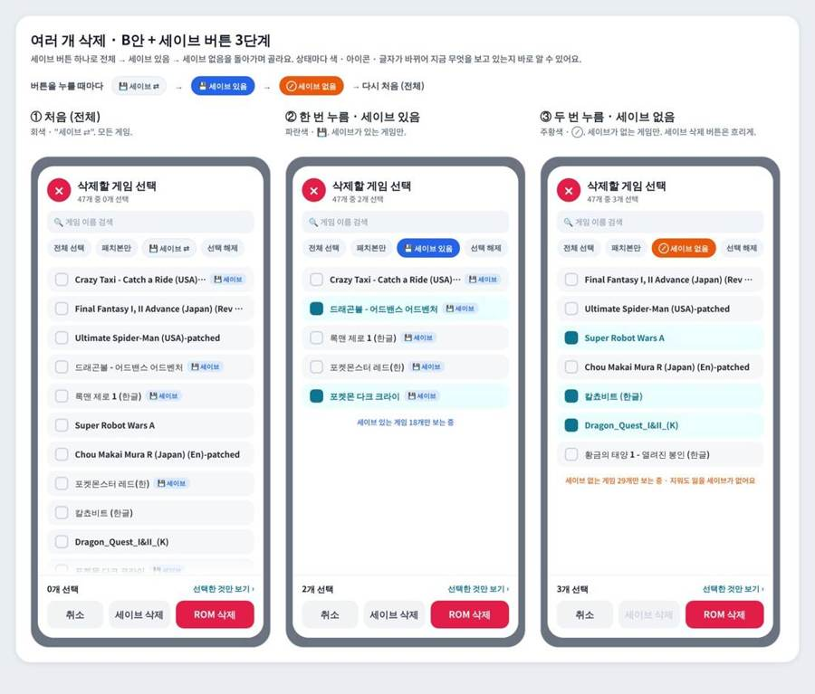
여러 개 삭제 · 버튼 고정과 세이브 버튼 3단계 시안 (0.0.234).
게임 표지 · 구글 이미지에서 고르기 (0.0.242)
목록에서 표지를 길게 누르면: 사진 고르기 · 인터넷에서 다시 찾기(libretro 표지 모음) · 구글 이미지에서 고르기 · 표지 지우기.
구글 이미지에서 고르기: 앱 안 브라우저에 구글 이미지 검색. 검색어는 "게임 이름 + 게임기 + cover"로 미리 채우고, cover · box art · 표지 · 한국판 버튼으로 바로 바꿀 수 있습니다. API 키나 로그인 없음.
사진을 길게 누르거나, 눌러서 크게 연 다음 "이 사진을 표지로"(화면에서 가장 큰 사진)를 누르면 받아서 자르기 창으로. 게임기 케이스 비율 · 정사각형 · 원본 그대로, 점선 칸을 끌어서 맞춥니다. 표지는 이 폰에만 저장.
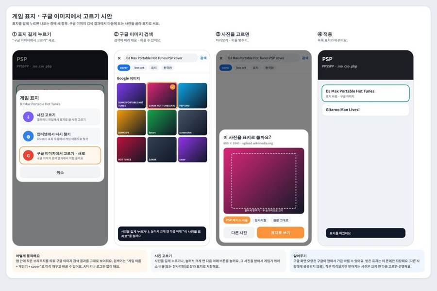
게임 표지 · 구글 이미지에서 고르기 시안 (0.0.242).
0.0.244부터 자르기 칸 크기도 바꿀 수 있습니다: 두 손가락 모으기 · 벌리기, 네 모서리 동그라미 끌기, 아래 "크기" 막대("맞춤"은 가장 크게). 케이스 비율 · 정사각형은 비율을 지키고, "자유롭게"는 가장자리 막대로 가로 · 세로를 따로 바꿉니다. 칸의 비율과 픽셀 크기를 보여 주고, 300픽셀보다 작으면 흐릴 수 있다고 알려 줍니다.
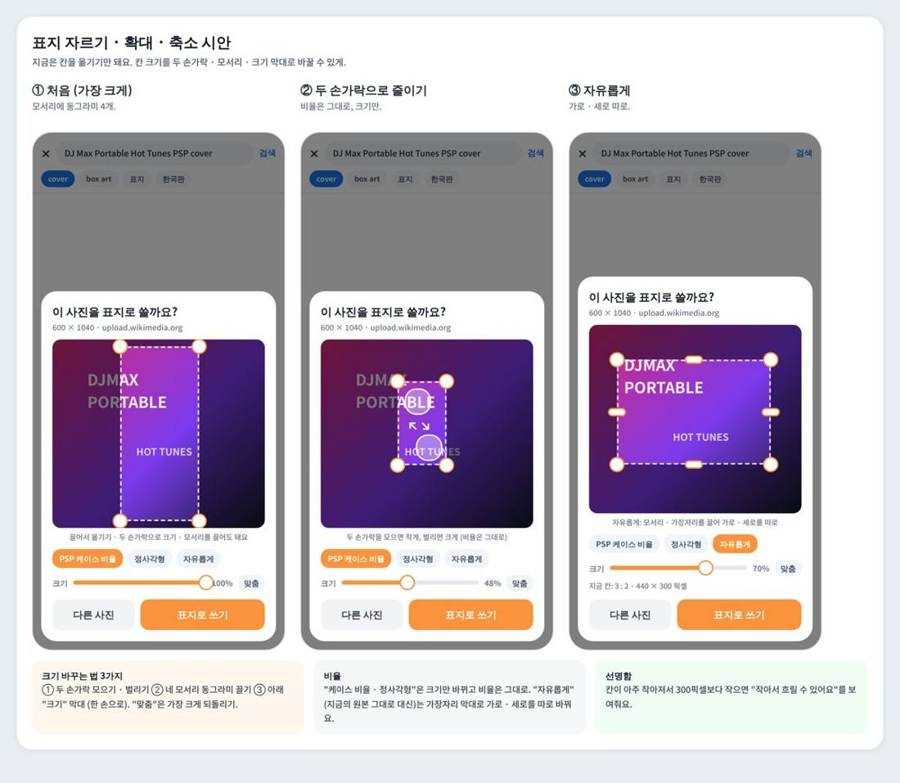
표지 자르기 · 확대 · 축소 시안 (0.0.244).
복사 없이 연결하기 (0.0.245)
지금까지는 롬을 가져오면 앱 안에 복사본을 만들어서, 원본을 지우지 않으면 같은 게임이 두 번 공간을 차지했습니다.
ROM 추가에 파일 골라 연결하기 · 폴더째로 연결하기: 앱 안 탐색기(내 폰 · Download · SD 카드 · 최근 연결)에서 그 게임기 파일만 보여 주고, 고른 게임을 원본 그대로 실행합니다. 앱 ROM 폴더에는 원본을 가리키는 링크만 생겨서 늘어나는 용량이 0입니다. .cue · .gdi는 트랙과 함께 연결.
처음 한 번 "모든 파일 접근"을 허락받습니다. 같은 이름 · 같은 크기의 앱 안 복사본이 있으면 연결로 바꾸고 그 복사본을 지워 공간을 비웁니다. 폴더를 "자동 연결"로 두면 그 폴더에 넣은 새 게임이 다음에 앱을 켤 때 들어옵니다.
목록에 🔗 연결과 원본 폴더 표시. ROM 삭제는 연결만 지우고 원본은 그대로. 원본을 옮기거나 지운 연결은 ROM 추가의 "원본을 찾을 수 없는 연결"에서 다시 찾거나(같은 이름이면 세이브가 이어짐) 뺍니다.
패치본 · CHD 푼 게임은 지금처럼 앱 안에만 만들고, 원본 폴더는 건드리지 않습니다.
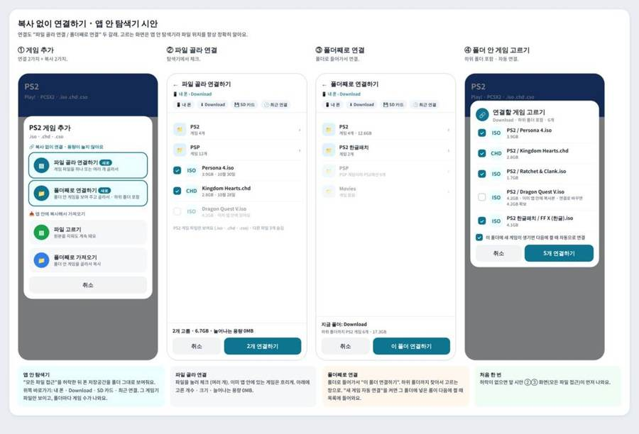
복사 없이 연결하기 · 앱 안 탐색기 시안 (0.0.245).
엔진 업데이트 (0.0.339)
DOSBox Pure (DOS): 1.0-preview8로.
FBNeo (아케이드): 11월 8일 판으로 — 새 드라이버 · 그래픽 · 소리 수정, 롬 세트 갱신.
MAME 2003-Plus (아케이드): 11월 7일 판으로 — Namco System 22 / Super System 22(타임 크라이시스 등, 광선총은 십자선으로), Sega System 32 배경 수정 등.
Dolphin (게임큐브 · Wii): 11월 4일 판으로 — Wii 메뉴에서 게임이 꺼지는 문제 수정, 게임 ID로 지역 무관 실행, 센서 · 옵션 정리. 앱의 Dolphin 수정 6개는 새 판에도 그대로 적용되는 것을 확인했습니다.
나머지 엔진은 원본과 같거나(18개), 바꾸지 않았습니다: PPSSPP(정식판 v1.20.4 그대로) · Vita3K(앱 수정과 부딪힐 위험) · Cemu(번역만 바뀜) · Flycast · Play!. 휴대폰에서는 아직 확인 전입니다.
PS Vita 글자 입력 (0.0.338)
이름 입력처럼 게임이 시스템 글자 입력 창(IME 대화상자 · 시스템 키보드)을 열면, 화면에 아무것도 안 나오고 멈춘 것처럼 보였습니다. 이 창은 데스크톱 Vita3K가 자기 화면 위에 그리는데, 앱이 쓰는 libretro판에는 그 화면이 없기 때문입니다. 지금까지는 엔진이 입력 창을 "처음 글자 그대로 확인"으로 바로 닫아서 빈 이름이 들어가거나 시스템 키보드를 쓰는 게임은 계속 기다렸습니다.
이제 게임이 글자를 요청하면 휴대폰의 글자 입력 창이 뜹니다 (게임이 정한 제목 · 처음 글자 · 최대 글자 수). 확인을 누르면 그 글자가 게임에 들어가고, 취소하면 게임에 취소로 알립니다 (취소할 수 없는 창이면 처음 글자로 확인). 한글 · 일본어 등 휴대폰 키보드로 칠 수 있는 글자는 다 됩니다 — 게임 글꼴에 없는 글자는 게임 안에서 안 보일 수 있습니다.
엔진(Vita3K)을 고쳐 다시 빌드했습니다. 휴대폰에서는 아직 확인 전입니다.
PS Vita 게임 폴더 · 연결 기능에서도 (0.0.337)
0.0.336의 "게임 폴더로 넣기"만 게임 폴더를 알아봤고, 복사 없이 연결(파일 골라 · 폴더째로 · 자동 연결 폴더)은 .vpk · .pkg 파일만 찾았습니다. 그래서 풀어 둔 app/게임ID 폴더를 연결해 둔 PS Vita 폴더에 옮겨도 목록에 들어오지 않았습니다.
이제 PS Vita의 연결 기능도 게임 폴더(eboot.bin + sce_sys/param.sfo)를 게임으로 봅니다: 폴더째로 연결하기 목록에 "VITA"로 나오고, 자동 연결 폴더에 넣은 게임 폴더는 다음에 앱을 켤 때 들어오며, 파일 골라 연결하기에서는 게임 폴더를 누르면 바로 넣기 창이 뜹니다. 이미 들어간 폴더는 다시 넣지 않습니다.
"게임 폴더로 넣기" 탐색기에서 게임 폴더 안으로 들어가 있으면 맨 위에 "이 폴더 넣기"가 나옵니다.
PS Vita 게임 폴더로 넣기 (0.0.336)
PS Vita 목록 › ROM 추가에 게임 폴더로 넣기가 생겼습니다. 본체에서 뽑은 설치 게임 폴더(app/게임ID/, 안에 eboot.bin과 sce_sys/param.sfo)를 앱 안 탐색기에서 고르면 PS Vita 목록에 들어갑니다. 탐색기는 게임 폴더를 알아봐서 아이콘 · 게임 이름 · 크기 · work.bin 유무를 보여 줍니다. 마지막에 연 폴더부터 시작합니다.
시안의 ".vpk로 묶기" 대신 복사 없이 연결로 바꿨습니다. Vita3K를 확인해 보니 .vpk로 묶으면 본체 덤프(work.bin이 든 암호화 폴더)의 암호를 풀지 않고 넘어가고, 폴더를 그대로 주면 work.bin으로 암호를 풀며 설치합니다. 그래서 목록에는 폴더를 가리키는 작은 .vitadir 파일만 만들고(늘어나는 용량 0, .vpk를 만드는 시간 · 공간도 없음), 처음 실행할 때 엔진이 그 폴더에서 설치합니다. 옆에 patch/게임ID 폴더(업데이트)가 있으면 함께 설치됩니다.
work.bin이 없으면 표시합니다. 복호된 덤프는 그대로 되고, 암호화된 덤프면 본인 PS Vita의 work.bin을 그 폴더의 sce_sys/package/ 안에 넣으면 됩니다.
설치가 끝나면 원래 폴더를 지워도 게임은 남지만, 목록 항목은 폴더를 가리키므로 실행하려면 폴더가 있어야 합니다(엔진이 실행 때 폴더를 확인). 폴더를 옮겼으면 다시 넣어 주세요.
압축 풀기 결과에 PS Vita 게임 폴더가 있으면 "PS Vita 목록에 넣기" 버튼이 나옵니다 (그 게임 하나만, 사용자가 누를 때만).
휴대폰에서는 아직 확인 전입니다.
압축 풀기 · 자동 연결 없앰 (0.0.335)
압축을 푼 뒤 게임기를 짐작해 목록에 자동으로 연결하던 기능을 없앴습니다. PS Vita 게임 폴더 덤프(app/게임ID/…) 안의 파일이 확장자만 보고 나오미 게임으로 잘못 들어가는 일이 있었습니다. 이제 압축 풀기는 파일을 푸는 것만 하고, 게임은 지금까지처럼 각 게임기의 ROM 추가(복사 · 연결)로 넣습니다.
잘못 들어간 항목은 그 게임기 목록에서 길게 눌러 지우면 됩니다 (연결만 지워지고 원본 파일은 그대로).
게임 파일을 압축된 채로 목록에 넣는 기능(압축 파일 안의 게임 · 0.0.259)과 "자동 연결" 폴더(0.0.245)는 별개 기능이라 그대로입니다.
압축 풀기 · 직접 고르기 (0.0.334)
폰 전체를 찾아 압축 파일을 모두 늘어놓던 방식(0.0.333)과 숫자 배지를 없앴습니다. 압축 풀기 칸을 누르면 바로 앱 안 탐색기가 열리고, 마지막에 연 폴더(처음엔 다운로드)부터 시작합니다.
탐색기에는 폴더와 압축 파일만 보입니다 (게임 · 사진 같은 다른 파일은 숨김). 위쪽 바로가기: 내 폰 · Download · SD 카드 · 최근 연결 폴더. 폴더 아래에는 그 안의 압축 파일 수가 나옵니다. 휴대폰의 뒤로 버튼은 상위 폴더로 갑니다.
압축 파일을 눌러 고르고, 다른 폴더로 가서 더 골라도 고른 것이 유지됩니다. 아래 줄에 고른 개수 · 풀면 필요한 공간이 쌓입니다. 분할 조각은 한 줄로, 조각 빠짐 · 암호 · 이미 풀림은 표시로 알려 줍니다. 길게 누르면 안에 든 파일 목록(크기 포함)을 미리 봅니다.
"다음"을 누르면 확인 창에서 풀 곳을 고릅니다: 압축 파일이 있던 폴더(그대로) 또는 압축 파일 이름으로 새 폴더를 만들어 그 안에. "다 풀면 압축 파일 지우기"와 함께 마지막 선택을 기억합니다. 진행률 · 결과는 0.0.333과 같습니다 (자동 연결은 0.0.335에서 없앰).
시험: PC에서 "새 폴더에 풀기"로 분할 7z와 7z가 각각 이름 폴더 안에 원본과 같게 풀리는 것을 확인했습니다.
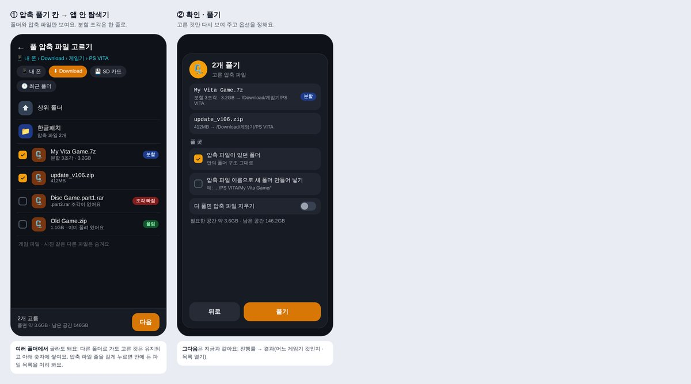
압축 풀기 · 직접 고르기 시안 (게임 이름은 가상의 예시).
압축 풀기 (0.0.333)
게임기 고르기 화면의 검색창 아래에 압축 풀기 칸이 생겼습니다. 오른쪽 숫자는 아직 풀지 않은 압축 파일 수입니다 ("모든 파일 접근" 허락이 있을 때 표시).
찾는 곳: 각 게임기에 연결한 폴더와 연결한 게임이 있는 폴더(그 아래 두 단계까지), 다운로드 폴더(세 단계까지), 그리고 창 안의 "＋ 폴더 더 고르기"로 넣은 폴더. 아케이드 · 네오지오 · DOS처럼 압축 파일 자체가 게임인 경우와, 이미 게임으로 연결된 압축 파일은 빼고 보여 줍니다.
.zip · .7z · .rar(RAR4 · RAR5)와 분할 압축(.7z.001 … · .zip.001 … · .part1.rar … · .rar + .r00 …)을 풉니다. 분할 조각은 한 줄로 묶어 보여 주고, 조각이 빠졌으면 빠진 조각 이름을 알려 줍니다. 암호 걸린 압축과 WinZip 분할(.z01)은 풀 수 없다고 표시합니다. zip 속 한글 · 일본어 파일 이름(Windows에서 만든 것)도 제대로 풉니다.
고른 압축 파일은 그 압축 파일이 있던 폴더에 풉니다 (안의 폴더 구조 그대로). 같은 이름 · 크기의 파일이 이미 있으면 "풀림"으로 표시하고 기본으로 고르지 않습니다. 필요한 공간과 남은 공간을 보여 주고, 모자라면 시작하지 않습니다. "다 풀면 압축 파일 지우기"는 기본으로 꺼져 있습니다.
푸는 동안 진행률 · 남은 시간을 보여 주고 화면이 꺼지지 않게 합니다. 취소하면 풀다 만 파일만 지우고, 그 전에 다 푼 파일과 압축 파일은 남깁니다.
결과 창은 풀린 파일 · 폴더와 어느 게임기 것인지 보여 줍니다. 게임 파일은 그 폴더에 연결된 게임기, 또는 그 확장자를 받는 게임기가 하나뿐일 때 그 게임기 목록에 연결(복사 없음)해서 바로 보이고, "목록 열기"로 갈 수 있습니다.
시험: PC에서 분할 7z(5조각) · 분할 zip(4조각) · 한 덩어리 7z · zip이 원본과 같게 풀리고, 조각 빠짐 · 암호 · "../" 경로(폴더 밖으로 나가는 이름) · 취소가 맞게 처리되는 것을 확인했습니다. RAR는 기존 해제기를 쓰고 취소만 새로 넣어 휴대폰에서는 아직 확인 전입니다.
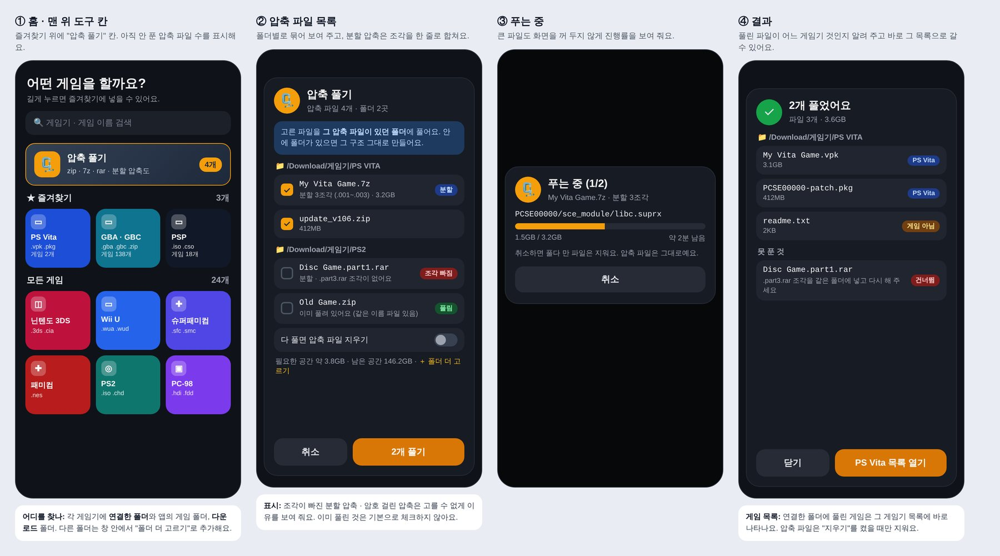
압축 풀기 시안 (게임 이름은 가상의 예시).
저장할 곳 · 게임 파일 내보내기 · 도움말 (0.0.246)
저장할 곳: 패치 적용(2단계) · CHD 풀기 창에서 고릅니다. 연결한 게임은 기본이 원본과 같은 폴더(그 폴더에 만들고 목록에는 🔗 연결 · 앱 용량이 늘지 않음), 앱 안 · 다른 폴더도 고를 수 있습니다. 앱 안 게임은 기본이 앱 안이고, "폰 폴더에도 저장"을 고르면 앱 안 + 고른 폴더 두 군데에 둡니다.
게임 파일 내보내기: 게임 메뉴에서 앱 안 게임을 폰 폴더로 복사해 둡니다(실수로 지워도 다시 가져올 수 있게). 끝나면 "연결로 바꾸기"를 고르면 앱 안 복사본을 지우고 내보낸 파일을 🔗 연결로 씁니다. 설정 → 모든 게임 파일 내보내기는 앱 안 게임 전부를 게임기별 폴더로 내보냅니다 (0.0.247에서 이름을 바꿨습니다).
도움말: 설정 → 도움말에서 이 문서를 앱 안에서 볼 수 있습니다. 앱을 업데이트하면 그 버전의 문서로 바뀝니다.
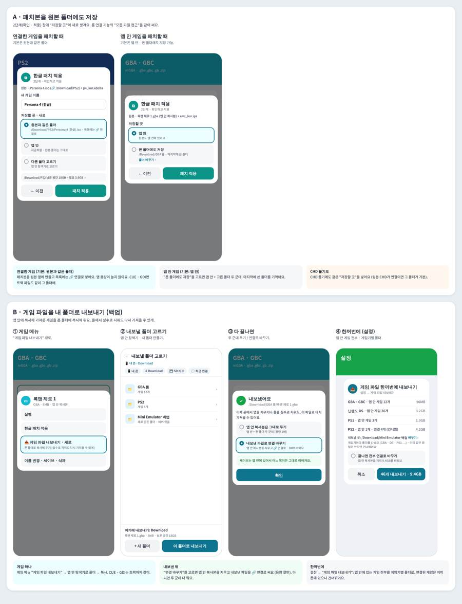
패치본을 원본 폴더에도 저장 · 게임 파일 내보내기 시안 (0.0.246).
4. 한글 패치 적용
한글화 패치 파일을 앱 안에서 원본 롬에 적용해 새 게임으로 목록에 추가합니다. 원본은 그대로 남고, 패치본의 세이브는 따로 저장됩니다.
지원 게임기: 카트리지 게임기 전부와 PS1 · PSP · PS2, 0.0.232부터 PC엔진 CD · 메가CD · 새턴 · 드림캐스트(GDI · CDI)까지. CD 게임은 트랙별로 패치하고 나머지 트랙은 함께 복사.
남은 저장 공간을 먼저 확인하고, 부족하면 안내합니다.
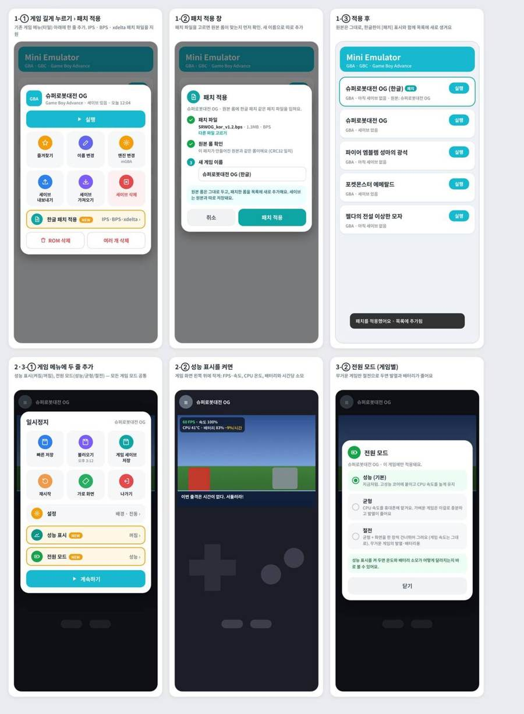
위 줄: 패치 적용 흐름(메뉴 → 패치 창 → 적용 후 목록). 아래 줄: 게임 중 메뉴의 성능 표시 · 전원 모드.
패치 적용 1단계 · 파일 고르기 (0.0.239)
"한글 패치 적용"을 누르면 먼저 1단계 창: 원본 파일(누른 게임, 🔒 고정 · 형식 · 크기 · 트랙 수)과 패치 파일 칸. 패치 칸을 누르면 그때 파일 고르기 화면이 열립니다.
고르면 바로 패치 파일인지 확인해 형식과 ✓를 표시하고, 패치가 아닌 파일(.txt · .zip 등)은 빨간 칸으로 알려 다시 고르게 합니다. CUE · GDI 게임은 여러 개를 고를 수 있고 "+ 패치 더 고르기", ✕로 빼기.
"다음 →"을 누르면 지금까지의 확인 창(2단계: 한 파일은 3단계 확인, CUE는 트랙 지정, .dcp는 전용 창)으로 넘어가고, 거기서 "← 이전"으로 같은 파일 그대로 1단계로 돌아갈 수 있습니다. 두 창 위에 "1 파일 고르기 → 2 확인 · 적용" 진행 막대.
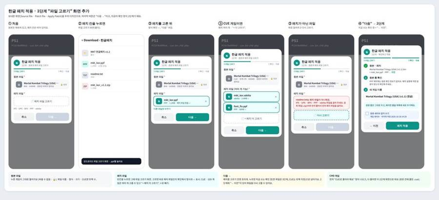
한글 패치 적용 · 1단계 파일 고르기 시안 (0.0.239).
트랙 지정 패치 · 드림캐스트 GDI (0.0.232)
CD 게임 한글패치 안내문에 "track5.bin에 적용"처럼 트랙이 적혀 있는 경우를 그대로 처리합니다.
대상: .cue 게임(PS1 · PC엔진 CD · 메가CD · 새턴)과 드림캐스트 .gdi 게임. 드림캐스트 모드가 이제 .gdi와 트랙 파일(.bin · .raw)을 가져오고, 목록에는 .gdi 하나만 보입니다. .cdi는 파일 하나라 일반 패치처럼 적용됩니다.
패치 여러 개: 패치 파일 고르는 화면에서 여러 개를 한 번에 고를 수 있습니다(예: track03용 하나, track05용 하나).
트랙 자동 찾기: ① BPS · UPS · PPF는 패치 안의 원본 검사값과 맞는 트랙, ② xdelta는 패치가 읽는 원본 크기에 맞는 트랙이 하나뿐일 때 그 트랙, ③ 파일 이름의 "track05" 같은 표시. 못 찾으면 노란 줄로 표시되고, 누르면 트랙 목록(데이터 · 음악, 추천 트랙 표시)에서 직접 고릅니다. 자동으로 정해진 줄도 눌러서 바꿀 수 있습니다.
적용: 같은 트랙에 패치가 둘이면 고른 순서대로 이어서 적용하고, 패치하지 않은 트랙은 복사한 뒤 .cue/.gdi를 새 트랙 이름으로 다시 씁니다. 목록에는 "원본: … · 패치한 트랙 3 · 5"로 보입니다.
0.0.233에서 .dcp 패치와 CHD → GDI 풀기가 추가됐습니다(아래). 아직 실제 기기에서 확인 전입니다.
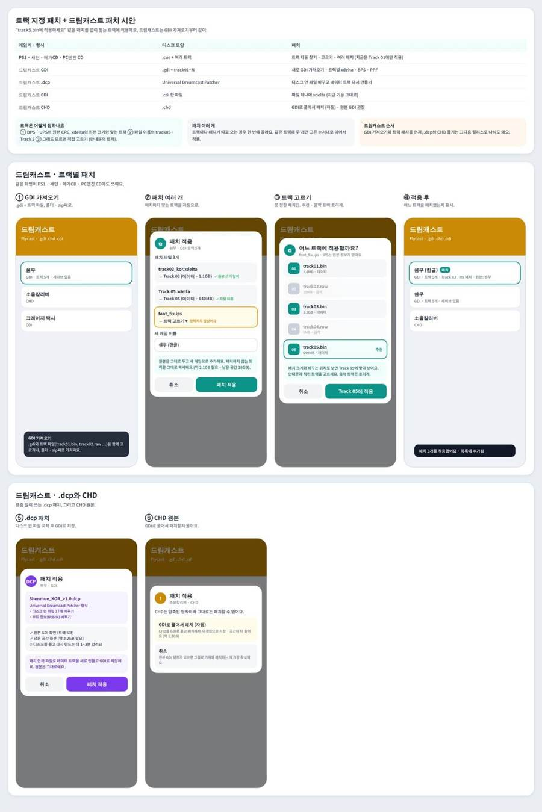
트랙 지정 패치 · 드림캐스트 시안 (0.0.232).
xdelta LZMA 패치 고침 (0.0.250)
xdelta3로 LZMA 압축(-S lzma)해 만든 큰 패치(예: 드림캐스트 키카이오 한글화 Track 3용 167MB)가 "Input is not in the XZ format" 오류로 멈추던 문제를 고쳤습니다. xdelta3는 데이터 · 명령 · 주소 구간마다 압축 스트림 하나를 패치 전체에 이어 쓰는데, 앱은 구간마다 새 스트림으로 읽고 있었습니다. 지금은 구간 종류마다 스트림 하나로 이어서 풉니다.
컴퓨터에서 확인한 것: xdelta3와 같은 방식(liblzma, 창마다 동기 플러시)으로 만든 여러 창짜리 패치를 이전 코드는 같은 오류로 실패, 새 코드는 기대한 결과와 바이트 단위로 같게 만듦. 원본이 1바이트라도 다르면 "원본이 이 패치와 맞지 않아요"로 멈춤. 큰 패치의 압축 사전(최대 64MB × 3)을 위해 앱이 쓸 수 있는 메모리를 늘렸습니다.
xdelta DJW 패치 지원 (0.0.253)
xdelta3의 DJW 압축(-S djw)으로 만든 패치(예: 새턴 신세기 에반게리온 한글화 EVA1_KR_R12)가 "지원하지 않는 압축(DJW)" 오류로 막히던 것을 풀었습니다. xdelta3의 DJW 압축 풀기 코드(Apache-2.0)를 앱으로 옮겼고, 오픈소스 라이선스에 xdelta3를 추가했습니다.
컴퓨터에서 확인한 것: 그 패치의 72개 창을 모두 풀었을 때 창마다 데이터 · 명령 · 주소가 남거나 모자람 없이 정확히 맞음(원본 디스크 없이 할 수 있는 검사). 이 패치가 읽는 원본은 603,652,560바이트(데이터 트랙)입니다. 실제 원본으로 끝까지 적용한 결과는 기기에서 확인 전입니다.
트랙을 이어 붙인 원본용 패치 (0.0.254)
트랙 하나가 아니라 여러 트랙을 하나로 이어 붙인 파일을 원본으로 만든 xdelta 패치(예: 새턴 신세기 에반게리온 한글화 — Track 01 + Track 02 = 603,652,560바이트)를 알아봅니다. 패치가 읽는 원본 크기와 만드는 결과 크기가 같고, 그 크기가 연속한 트랙들의 크기 합과 정확히 맞으면 그 트랙들을 이어 붙여 패치한 뒤 원래 트랙 경계대로 다시 나눠 저장합니다. CUE · 나머지 트랙은 그대로입니다.
2단계 화면에 "→ Track 01 + 02 (이어서)"로 보입니다. 원본이 다르면 적용 중 검사값에서 멈추고 파일을 만들지 않습니다. 적용하는 동안 이어 붙인 크기의 두 배쯤 저장 공간을 잠시 더 씁니다.
패치 형식 추가 · N64 바이트 순서 · SNES 헤더 (0.0.255)
새 형식: APS(GBA용 · N64용), RUP(NINJA 2.0), BDF(bsdiff). APS(GBA)와 RUP는 패치 안의 검사값(CRC16 · MD5)으로 원본과 결과를 확인하고, BDF의 bzip2 압축은 앱에 넣은 압축 풀기로 풉니다. xdelta의 FGK 압축은 xdelta3 기본 빌드에서 꺼져 있어 실제 패치가 거의 없어 넣지 않았습니다.
N64 바이트 순서: 롬이 .v64 · .n64인데 패치가 .z64용이면(또는 그 반대) 앱이 바꾼 복사본에 적용합니다. BPS · UPS · RUP · APS는 검사값으로 맞는 순서를 찾고, 검사값이 없는 형식은 .z64로 맞춥니다. 결과는 그 순서의 확장자로 저장됩니다.
SNES 롬 헤더(512바이트): xdelta는 패치가 읽는 크기가 헤더를 뺀 크기와 같으면 헤더를 빼고 적용합니다. RUP는 헤더 없이 MD5가 맞는지도 봅니다(NES 16바이트 헤더도). IPS는 검사값이 없어서, 헤더를 뺀 쪽에서만 SNES 내부 검사값이 맞을 때 그쪽으로 적용하고, 판단이 안 되면 예전처럼 그대로 적용합니다.
컴퓨터에서 확인한 것: 형식마다 만든 시험 패치(APS GBA · APS N64 · RUP(헤더 있음 · 없음) · BDF · 헤더 있는 SNES용 IPS · xdelta)의 결과가 기대한 파일과 바이트 단위로 같음. 다른 원본은 "맞지 않아요"로 멈춤. bzip2 풀기는 파이썬 bz2로 만든 13가지 경우와 같음. N64 세 가지 순서 사이의 변환 9가지가 모두 맞음. 실제 배포 패치로는 기기에서 확인 전입니다.
분할 RAR 풀기 (0.0.260)
여러 조각으로 나뉜 RAR(새 방식 .part1.rar · .part2.rar …, 옛 방식 .rar · .r00 · .r01 …, RAR4 · RAR5)를 ROM 추가와 한글 패치 적용 모두에서 풉니다. 조각들은 한 압축처럼 이어서 읽고, 순서는 이름으로 앱이 맞춥니다(어느 조각을 골라도 됨).
"모든 파일 접근"이 켜져 있으면 조각 하나만 골라도 같은 폴더에서 나머지 조각을 찾고, 캐시에 복사하지 않고 원래 자리에서 바로 읽습니다(한 덩어리 RAR · 7z · zip도 마찬가지로 복사 없이). 꺼져 있으면 조각을 모두 함께 골라야 하고, 고른 조각은 캐시에 잠깐 복사해 읽습니다.
"분할 압축 찾기" 화면에 조각마다 ✓ / 없음을 보여 주고, 빠진 조각은 이름으로 알려 줍니다. "빠진 조각 고르기"로 더 고르거나 "모든 파일 접근 켜고 자동으로 찾기"를 누를 수 있습니다. 조각이 빠져 파일이 덜 풀리면(오류 없이 짧게 끝나는 경우 포함) 크기를 확인해 멈추고, 덜 풀린 게임은 지웁니다. 암호 걸린 분할 압축은 풀 수 없습니다.
컴퓨터에서 확인한 것: libarchive의 분할 시험 파일(RAR4 6 · 3 · 10조각, RAR5 8조각 · 솔리드 4조각)이 모두 풀림. 어느 조각에서 시작해도 같은 폴더의 조각을 순서대로 찾음. 2번 조각이 빠지면 오류, 1번 조각만 있으면 크기 확인에서 "조각이 손상됐거나 빠졌어요"로 멈춤. 빠진 조각 이름(새 방식 · 옛 방식) 계산. 기기에서는 확인 전입니다.
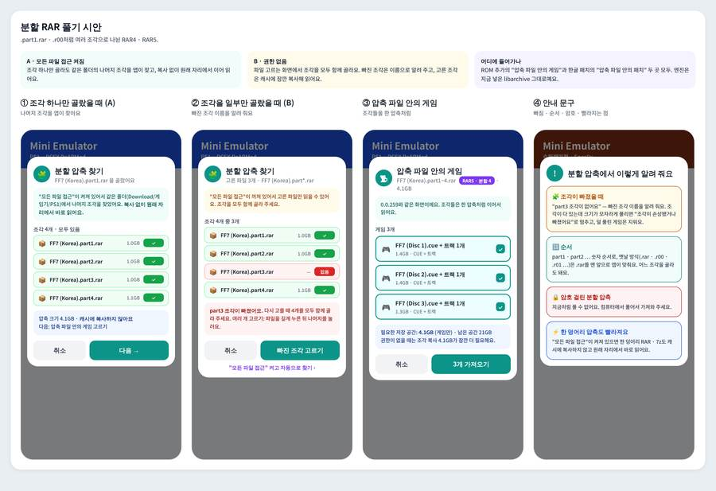
분할 RAR 풀기 시안 (0.0.260).
RAR 지원 · 압축 파일 안의 게임 (0.0.259)
RAR(RAR4 · RAR5)를 앱이 직접 풉니다. libarchive(BSD 라이선스)의 RAR 읽기 부분만 넣었고, RAR를 만드는 코드는 없습니다. 7z는 지금처럼 Apache Commons Compress로 풉니다(안드로이드에 libarchive가 7z에 쓰는 LZMA 라이브러리가 없어서).
한글 패치 적용: 1단계에서 RAR를 고르면 zip · 7z와 같은 "압축 파일 안의 패치" 화면이 나옵니다.
ROM 추가: 파일 골라 가져오기에서 RAR · 7z를 고르면 새 "압축 파일 안의 게임" 화면이 나옵니다. 이 게임기의 게임만 골라 담고(이미 목록에 있는 게임은 처음에 체크 안 됨), .cue · .gdi는 안에 적힌 트랙과 함께 한 게임으로 묶습니다. 다른 게임기 게임 · 설명서 · 그림은 따로 모아 흐리게 보여 줍니다. 필요한 공간과 남은 공간을 보여 주고, 고른 게임만 풀어서 앱 안에 넣습니다(압축 파일은 그대로). zip은 예전처럼 안의 게임을 모두 가져옵니다.
암호 걸린 압축과 여러 파일로 나뉜 RAR(.part1.rar · .r00)는 풀 수 없다고 알려 줍니다. 압축 파일 안의 게임은 복사 없이 연결할 수 없어 앱 안에 풀어 넣습니다.
컴퓨터에서 확인한 것: 앱과 같은 설정으로 빌드한 libarchive로 libarchive의 RAR 시험 파일(RAR4 · RAR5 · 솔리드 · PPMd · 필터 · ARM · 저장만 · 유니코드 이름)이 모두 풀리고 크기가 맞음(libarchive가 CRC도 확인), 암호 걸린 파일은 안내 문구, 일부러 망가뜨린 시험 파일은 오류. 한국어 · 일본어 파일 이름은 UTF-8 로케일로 맞게 나옴. zip · 7z · RAR 공통 목록 · 꺼내기, .cue · .gdi 트랙 이름 읽기. 실제 기기에서는 확인 전입니다.
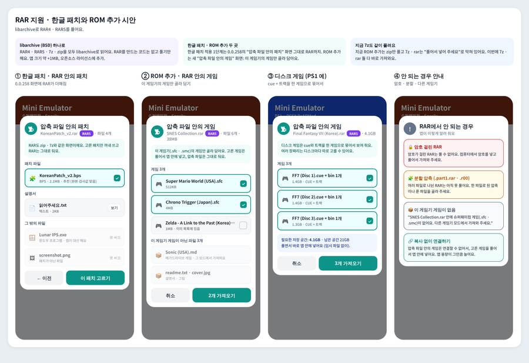
RAR 지원 · 한글 패치와 ROM 추가 시안 (0.0.259).
압축 파일 안의 패치 · SNES 헤더 고르기 (0.0.258)
압축 파일 안의 패치: 한글 패치 적용 1단계에서 zip · 7z를 고르면 안의 파일을 패치 파일 · 설명서 · 그 밖의 파일(윈도우 프로그램 등)로 나눠 보여 줍니다. 패치는 파일 앞부분으로 형식을 알아보고, 이 롬(트랙)의 검사값이나 크기와 맞는 것에 "추천"을 붙입니다. 고른 패치만 꺼내 쓰고, 1단계 카드에 "🗜 어느 압축 파일 안"인지 표시합니다. 디스크 게임은 여러 개를 함께 고를 수 있습니다.
설명서(readme)는 앱 안에서 바로 봅니다(UTF-8 · 한국어 EUC-KR/CP949). CRC · 헤더 · 원본 같은 원본 정보 줄을 노란색으로 표시하고, 이 롬의 CRC32가 적혀 있으면 "✓ 이 롬과 같음"을 붙입니다.
RAR는 앱에서 풀 수 없어 "먼저 풀어서 골라 주세요"로 안내합니다. 3DS · PS2 · Wii U · Wii 게임에서 패치가 없는 zip을 고르면 덧씌우는 한글 패치로 넘어갑니다. 7z는 Apache Commons Compress(Apache-2.0)로 풉니다.
SNES 헤더 고르기: 헤더(512바이트)가 있는 SNES 롬에 IPS를 적용할 때 앱이 판단하지 못하면 2단계에 "헤더 없는 롬 기준(추천) / 헤더 있는 롬 기준"을 고르는 칸이 나옵니다. 판단 기준: 패치가 롬 크기를 벗어나는지, 헤더 영역(앞 512바이트)에 쓰는지(헤더 있는 패치는 쓰지 않음), 결과의 SNES 내부 검사값이 맞는 쪽.
컴퓨터에서 확인한 것: zip · 7z(LZMA2) 안의 IPS · BDF · RUP 분류, .exe · .bat · 그 밖의 파일 구분, CP949 설명서 읽기, 헤더 판단 세 경우(헤더 영역 쓰기 → 헤더 없음 · 검사값 맞춘 패치 → 자동 · 판단 불가 → 고르는 칸). 기기에서는 확인 전입니다.
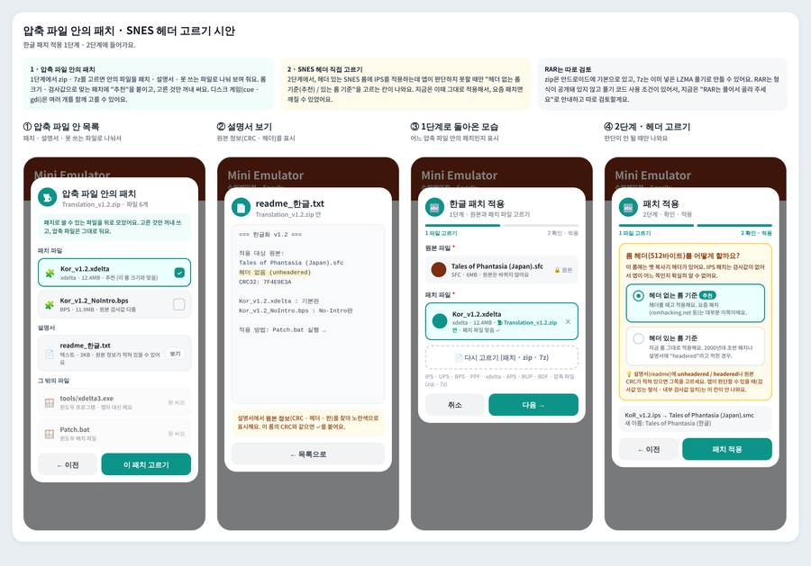
압축 파일 안의 패치 · SNES 헤더 고르기 시안 (0.0.258).
네오지오 · 아케이드 한글패치 · FBNeo IPS 묶음 (0.0.293)
칩마다 .ips 패치와, 어느 칩에 어느 패치를 붙일지 · 원본 CRC · 설명을 적은 .dat가 든 FBNeo용 패치 묶음(zip)을 넣습니다. 네오지오 · 아케이드 게임(FBNeo 엔진)을 길게 눌러 한글패치 넣기 → 패치 zip. 앱이 .dat를 읽어 패치 설명(한국어 [ko_KR], 없으면 영어)과 칩마다 원본 CRC가 맞는지(✓ / ✗)를 먼저 보여 주고, 패치 파일만 <system>/fbneo/ips/<롬 이름>/에 넣습니다. 원본 롬은 그대로이고, 게임을 켤 때마다 엔진(FBNeo의 IPS 기능)이 덧입힙니다. 게임 중 메뉴(기본)의 한글패치에서 켜기 · 끄기, 목록에는 "한글패치 켜짐"이 붙고, 길게 눌러 다른 패치로 바꾸거나 지웁니다. 켜거나 끄면 이어하기 대신 처음부터 다시 켜집니다(롬 내용이 달라서; 빠른 저장은 남음). 묶음 안의 레트로아치 오버레이 · 영상 · 박스 그림은 쓰지 않습니다. 예: 마작광열전(mahretsu) + TEAM MUPUNG 한글패치 V1.0 → 칩 6개 모두 원본 CRC 일치.
시안과 바뀐 점: 한 게임에 패치 묶음은 하나씩입니다(새로 넣으면 바뀜). 여러 묶음을 따로 켜고 끄는 건 넣지 않았습니다.
0.0.294: 패치 zip 안에 zip이 또 들어 있어도 찾아 들어가고, .dat 없이 .ips만 든 패치는 같은 이름의 칩(004-c1.ips → 004-c1.c1)에 붙입니다(원본 CRC 확인은 못 함). 롬 zip을 잘못 고르면 "패치가 아니라 롬 같아요"라고 알려 줍니다.
0.0.295: 한글패치를 넣어도 게임에 적용되지 않던 문제를 고쳤습니다. FBNeo는 게임을 처음 켤 때 IPS 패치를 끈 채로 시작하고 리셋할 때 덧입혀 다시 불러오는데, 앱이 그 리셋을 하지 않았고 엔진이 패치 설정을 끄려는 요청도 받아 주지 않았습니다. 이제 한글패치가 켜진 게임은 불러온 직후 한 번 리셋해 패치를 덧입힙니다(시작이 잠깐 더 걸립니다).
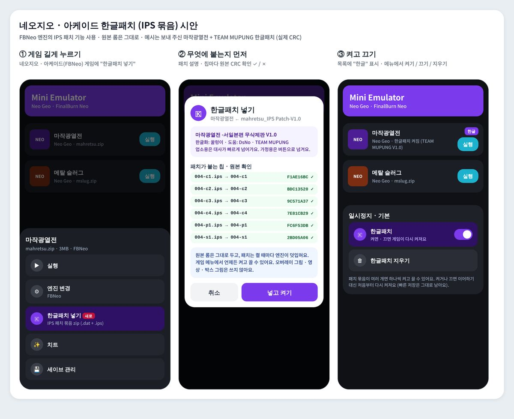
네오지오 · 아케이드 한글패치 시안.
덧씌우는 한글 패치 · Wii U 그래픽 팩 · Wii Riivolution (0.0.257)
같은 "🧩 덧씌우는 한글 패치" 화면이 Wii U 게임과 Wii 게임(GameCube 게임은 제외)에도 생겼습니다.
Wii U 그래픽 팩: zip · 폴더에서 rules.txt를 찾아 팩 이름 · 게임 ID · 프리셋을 확인합니다. .wua는 파일 안의 타이틀 폴더 이름에서 게임 ID를 읽어 맞는지 봅니다(.wud · .wux는 확인 없이). content 폴더만 있는 패치(loadiine 방식)는 그 게임용 rules.txt를 만들어 감쌉니다(.wua에서만). 켠 팩은 실행할 때 Cemu의 customGraphicPacks/MiniEmulator/에 놓이고, 앱이 그 팩을 켜는 엔진 설정과 고른 프리셋(글꼴 · 음성 등)을 넘깁니다. 엔진은 고치지 않았습니다.
Wii Riivolution: zip · 폴더에서 riivolution/*.xml을 찾아 게임 · 지역과 고르는 항목을 읽습니다. 디스크 ID는 .iso · .wbfs · .rvz · .wia · .ciso에서 읽습니다(.gcz는 못 읽음). 카드 안에서 항목마다 "끄기 / 선택지"를 고르고, 실행할 때 Dolphin의 Load/Riivolution에 패치 파일과 riivolution/config/<게임>.xml(고른 항목)을 둡니다. Dolphin 엔진에 게임을 켤 때 이 폴더의 Riivolution 패치를 적용하는 부분을 더했습니다(PC판 Dolphin의 "Riivolution 패치로 시작"과 같은 기능).
컴퓨터에서 확인한 것: ISO · WBFS · RVZ 디스크 ID와 Wii/GameCube 구분, .wua 게임 ID, Cemu가 쓰는 팩 설정 이름(FNV 해시)이 같은 방식의 계산과 일치, 팩 프리셋 · loadiine 감싸기, Riivolution 항목 · 지역 판정과 설정 파일 내용, Dolphin 엔진 패치가 다른 패치들과 함께 원본 소스에 적용됨. 실제 게임 · 기기에서는 확인 전입니다.
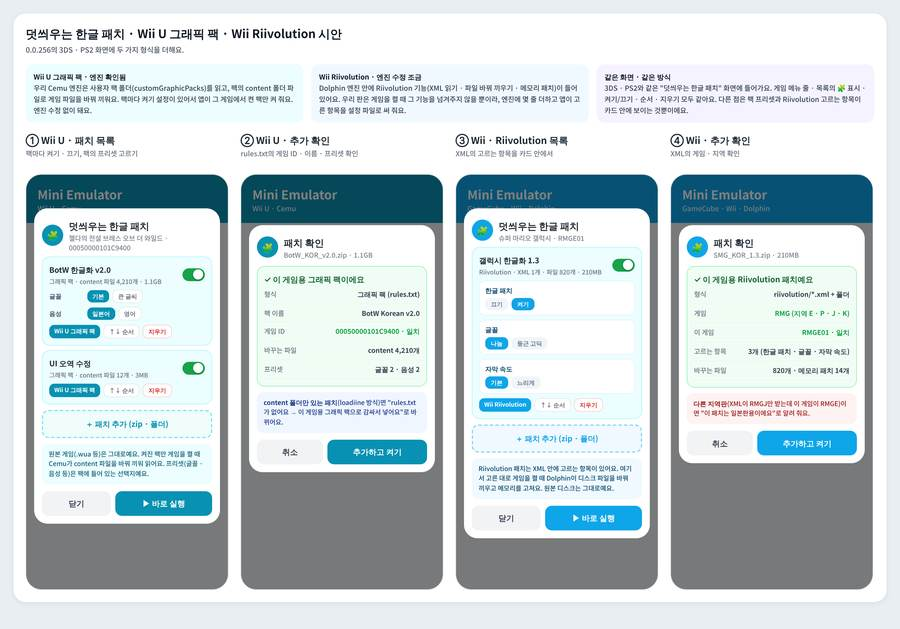
Wii U 그래픽 팩 · Wii Riivolution 시안 (0.0.257).
3DS xdelta 패치 (0.0.312)
3DS 게임도 길게 눌러 한글 패치 적용으로 IPS · BPS · xdelta 같은 파일 패치를 쓸 수 있습니다(다른 게임기와 같은 패치 창, 원본은 그대로 두고 패치한 게임을 새로 추가). 큰 게임(4GB)도 됩니다.
대상은 암호가 풀린 .3ds · .cci · .cxi입니다. CIA로 설치한 게임은 파일이 없어 해당하지 않고, romfs 폴더 · code.ips로 된 패치는 지금처럼 "덧씌우는 한글 패치"(LayeredFS)로 넣습니다.
패치가 만들어진 덤프(트림 여부 등)와 다르면 "원본이 맞지 않아요"가 뜹니다.
게임큐브 · Wii · MSX 파일 패치 (0.0.313)
게임큐브 · Wii: 압축 안 된 .iso · .gcm에 IPS · BPS · xdelta 패치를 씁니다. RVZ · WIA · GCZ · CISO · WBFS는 압축 형식이라 ISO로 풀어 넣어야 합니다(안내가 뜸). Riivolution 덧씌우기는 그대로입니다.
MSX: 롬팩(.rom · .mx1 · .mx2 · .ri) · 디스크(.dsk) · 테이프(.cas)에 패치를 씁니다. 분할 디스크 묶음(.m3u)은 디스크를 각각 패치하세요.
이로써 xdelta를 쓸 수 없는 모드는 Wii U(묶인 형식) · DOS(덮어쓰기 방식) · 아케이드(롬셋 · IPS) 정도이고, PS Vita는 설치된 게임 파일에 바로 적용하는 전용 방식이 있습니다.
덧씌우는 한글 패치 · 3DS LayeredFS · PS2 .pnach (0.0.256)
게임 메뉴(3DS · PS2)에 🧩 덧씌우는 한글 패치 줄이 생겼습니다. 원본 롬은 그대로 두고, 켜 둔 패치만 게임을 켤 때 엔진이 덧씌워 읽습니다. 게임마다 패치를 여러 개 넣고 켜기 · 끄기 · 순서(아래쪽이 우선) · 지우기를 할 수 있고, 목록에 "🧩 한글 패치"로 표시됩니다.
3DS: zip이나 폴더를 고르면 안에서 luma/titles/<게임 ID>/ 같은 구조의 romfs · romfs_ext · exefs · code.ips/.bps/.bin · exheader.bin을 찾아 게임 ID가 맞는지 확인합니다. 다른 게임용이면 그 게임 이름을 알려 주고 그 게임에 넣을 수 있습니다. 실행할 때 Citra의 load/mods/<게임 ID>를 켠 패치들로 다시 만듭니다(파일은 하드 링크라 공간을 거의 더 쓰지 않음). 직접 넣어 둔 모드 폴더가 있으면 건드리지 않습니다.
PS2: .pnach나 그것이 든 zip을 고릅니다. 파일 이름의 CRC와, ISO에서 직접 계산한 게임 CRC(PCSX2와 같은 방식)를 비교합니다. CHD · CSO는 CRC를 읽을 수 없어 이름에 CRC가 있는 .pnach가 필요합니다. 그룹 이름표는 빼서 모든 줄이 켜지게 하고, 실행할 때 pcsx2/patches/<CRC>_mini_….pnach로 둡니다. PCSX2(PS2 BIOS 등록 시)에서만 적용되고, Play!로 실행 중이면 안내합니다.
"한글 패치 적용"에서 3DS · PS2 게임에 zip · .pnach를 고르면 이 화면으로 넘어옵니다.
컴퓨터에서 확인한 것: 두 게임용이 섞인 zip에서 맞는 게임 부분만 골라 풀고, 두 패치를 켰을 때 모드 폴더가 기대대로 만들어짐. 시험 ISO에서 계산한 CRC가 PCSX2 방식으로 계산한 값과 같음. .pnach 이름의 CRC 읽기 · 이름표 빼기. 실제 게임 · 기기에서는 확인 전입니다.
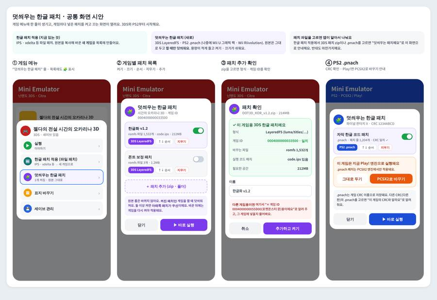
덧씌우는 한글 패치 시안 (0.0.256).
드림캐스트 .dcp 패치 · CHD 풀기 (0.0.233)
.dcp 패치(Universal Dreamcast Patcher 형식): 패치 파일 고르는 화면에서 .dcp를 고르면 전용 창이 열립니다. 패치 안의 파일(통째로 바꾸는 파일, 파일별 xdelta, 부트 정보 IP.BIN)을 디스크의 파일 목록에 끼워 넣고 데이터 트랙을 새로 만들어 GDI로 저장합니다.
디스크 배치는 GD-ROM 빌더 방식 그대로: LBA 45000에 부트 정보 · 파일 목록, 파일은 디스크 끝쪽에 모으고 부트 프로그램을 맨 끝에, 음악 트랙이 있으면 그 사이에 150섹터 간격으로. IP.BIN의 트랙 표도 새 위치로 고칩니다. 앞쪽 트랙(1 · 2)과 음악 트랙은 그대로 복사.
.dcp는 GDI 원본에만 됩니다. CDI는 xdelta만, CHD는 먼저 GDI로 풉니다.
CHD 풀기: 드림캐스트 CHD 게임 메뉴에 "GDI로 풀기"가 생겼고, CHD에 패치를 고르면 먼저 풀지 물어봅니다(풀린 크기 · 남은 공간 표시, 원본 CHD 지우기는 기본 꺼짐). 다 풀리면 바로 패치 창으로 넘어갑니다. Flycast와 같은 CHD 해제기(libchdr)를 쓰고, 트랙 위치도 Flycast가 CHD를 읽는 방식과 같게 놓습니다.
둘 다 단계별 진행 창과 취소가 있고, 취소하면 만들던 파일은 지웁니다.
컴퓨터에서 확인한 것: 만든 GDI를 chdman으로 CHD로 묶었다가 다시 풀면 모든 트랙이 원본과 바이트 단위로 같음. 가짜 GD-ROM에 .dcp(파일 교체 · 추가 · xdelta)를 적용하고 다른 도구로 다시 읽으면 파일이 전부 기대한 내용과 같고, 트랙 표와 섹터 오류정정 값도 맞음. 실제 게임 · 실제 기기에서는 아직 확인 전입니다.
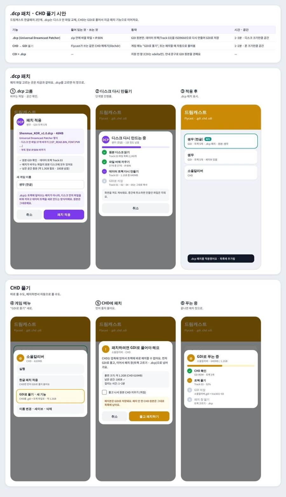
.dcp 패치 · CHD 풀기 시안 (0.0.233).
드림캐스트 여러 장 디스크 (0.0.303)
한 줄로 묶기: 이름에 (Disc 1)(Disc 2)…가 붙은 드림캐스트 디스크(.gdi · .chd · .cdi)를 목록에서 한 줄로 묶습니다. MSX 분할 디스크와 같은 방식으로, 앱이 만든 목록 파일(.m3u) 하나로 실행하고 원래 디스크 파일은 그대로 둡니다. 목록에는 "디스크 N장 묶음 · 지금 Disc k"가 표시되고, 묶음을 지우면 디스크와 트랙 파일도 같이 지웁니다(🔗 연결이면 연결만).
디스크 바꾸기: 게임 메뉴 기본 탭에 "디스크 바꾸기"가 생깁니다. 게임이 다음 디스크를 넣으라고 할 때 고르면 엔진(Flycast)이 뚜껑을 열고 디스크를 바꿔 끼워, 게임을 껐다 켜지 않고 이어집니다.
마지막 디스크로 이어서: 나갈 때 넣어 둔 디스크를 기억해 다음에 그 디스크로 켜고, 이어하기 장면도 그 디스크와 함께 돌아옵니다.
디스크별 패치: 묶음을 길게 눌러 한글 패치 적용 → 디스크를 고르면 그 디스크의 트랙별 패치 창이 열립니다(패치마다 트랙 자동 · 직접 고르기 — 0.0.232부터 있던 기능). 패치한 디스크는 새 파일로 만들어 묶음에서 그 디스크 자리를 대신합니다(원본은 그대로).
빠른 저장 · 불러오기는 지금 넣은 디스크로 합니다. 다른 디스크에서 저장한 칸을 불러오려면 디스크를 먼저 바꿔 주세요.
시안에서 바뀐 점: 디스크 고르기가 버튼 대신 목록(디스크마다 파일 이름 표시). 기기에서 디스크 교체를 아직 확인하지 못했습니다.
Redump 트랙용 패치 (0.0.304): 드림캐스트 패치 중에는 Redump 덤프(.cue + .bin)의 트랙을 원본으로 만든 것이 많습니다. Redump의 3번 · 6번 같은 데이터 트랙은 트랙 앞 공백(프리갭, 보통 150섹터)을 파일 안에 담고 있어, 그 공백이 빠진 GDI 트랙과는 내용이 달라 "원본이 이 패치와 맞지 않아요"가 떴습니다. 이제 CHD를 GDI로 풀 때 CHD에 저장된 프리갭을 트랙 옆에 트랙파일.pregap으로 함께 보관하고, 패치가 그 모양의 트랙을 원본으로 하면(크기로 판단, 아니면 한 번 실패한 뒤 자동으로 다시 시도) 프리갭 + 트랙을 이어 패치한 뒤 프리갭을 다시 떼어 GDI 트랙으로 저장합니다. 패치 파일 이름의 트랙 번호(…Track3.xdelta)를 크기 추측보다 먼저 씁니다. 0.0.303 이전에 푼 GDI에는 프리갭이 없으니 원본 CHD로 다시 패치하세요.
0.0.310: 트랙 3을 패치한 디스크에 트랙 6을 또 패치하면(패치한 것에 다시 패치) 그 디스크가 원래 묶음이 아닌 따로 된 게임으로 묶여, 묶음은 트랙 3만 패치된 디스크로 실행되던 문제를 고쳤습니다. 이제 패치를 몇 번 거쳤든 처음 디스크까지 따라가 같은 자리에 넣고, 가장 나중에 패치한 디스크를 씁니다. 묶음의 디스크가 바뀌면 다음 실행은 이어하기 장면 없이 처음부터 시작합니다(예전 디스크로 저장한 장면은 예전 내용이라서 — 게임 안 세이브는 그대로). 잘못 만들어졌던 별도 묶음 목록은 지웁니다(디스크 파일은 그대로).
0.0.309: 패치가 읽는 크기는 원본의 끝까지가 아닐 수 있어(셴무 Disc 2 트랙 6: 약 201섹터), 공백 길이를 그 크기 이상인 흔한 길이로 시도합니다 — 225섹터(3초)부터, 그다음 올림한 섹터 수 · 150 · 75 · 300.
0.0.308: CHD에 프리갭이 아예 저장되지 않은 트랙(셴무 Disc 1 트랙 6: 225섹터 = 3초 부족)은, 패치가 읽는 크기만큼 트랙 앞 공백을 다시 만들어 붙여 봅니다 — 빈 데이터 섹터(동기 · 주소 · EDC · ECC까지 CD 규격대로), 무음 75 · 150섹터 + 빈 데이터 섹터, 분(99분 넘는 주소) 표기 두 가지, 무음만. 패치가 구간마다 검사값을 확인하므로 실제와 같은 공백만 통과하고, 통과하면 공백을 떼어 GDI 트랙으로 저장합니다. 섹터 만드는 코드는 EDC 검사값과 P · Q 오류정정 부호의 신드롬이 모두 0인지 컴퓨터에서 확인했습니다.
0.0.307: 프리갭을 붙여 패치할 때 통째로 붙여서 안 맞으면, 패치가 읽는 크기에 맞춰 프리갭의 끝부분만 붙여 한 번 더 시도합니다(Redump 트랙이 CHD에 저장된 것보다 짧은 프리갭을 담는 경우). 길게 설명하는 오류(패치 확인값 등)는 두 줄에서 잘리던 알림 대신 창으로 보여 주고 "복사"할 수 있습니다.
푼 디스크 먼저 (0.0.306): 묶음 안에서 같은 디스크가 CHD와 GDI(앱에서 푼 것)로 둘 다 있으면 GDI를 씁니다. 그래서 묶음에서 패치할 때 이미 푼 디스크를 다시 풀지 않습니다(패치한 디스크가 가장 먼저).
맞지 않을 때 확인값 (0.0.305): 디스크 트랙 패치가 거부되면 어느 패치 · 어느 트랙인지와 함께, 지금 트랙의 크기 · MD5, 프리갭을 붙인 트랙의 크기 · MD5, 패치가 읽는 원본 크기를 보여 줍니다. 패치 안내문의 "원본 md5"와 비교하면 덤프가 다른지 바로 알 수 있습니다.
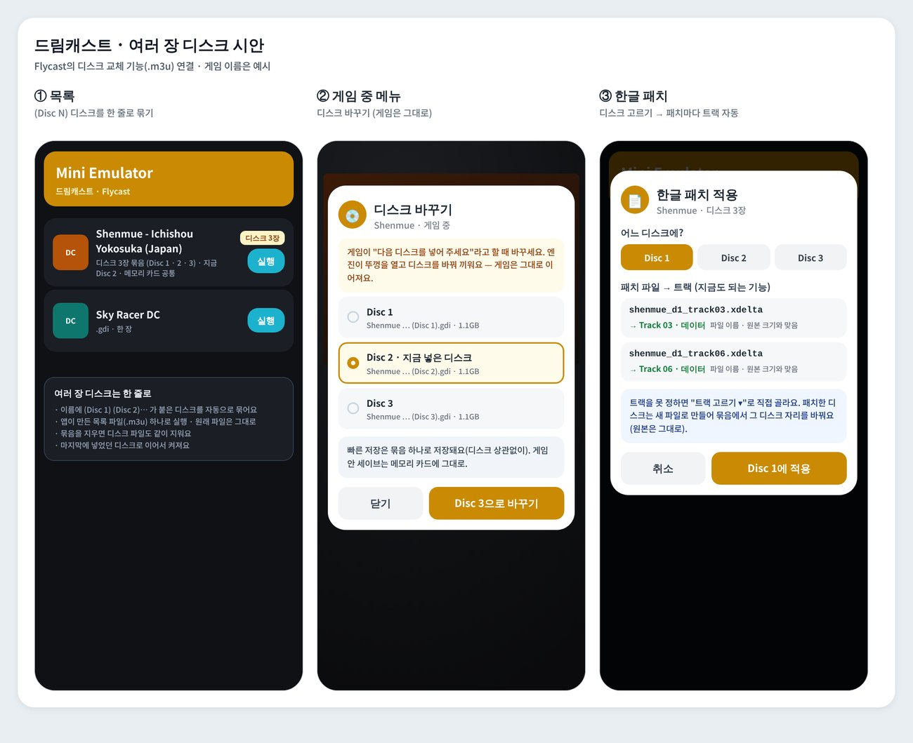
드림캐스트 여러 장 디스크 시안 (게임 이름은 예시).
여러 장 디스크 · PS1 · 새턴 · 메가CD · PC엔진 CD (0.0.314)
드림캐스트처럼 이름에 (Disc 1)(Disc 2)…가 붙은 디스크(.cue · .chd · .iso · .ccd · .mds)를 목록에서 한 줄로 묶습니다. 게임 메뉴 기본 탭의 디스크 바꾸기, 마지막 디스크로 이어서 켜기, 디스크별 한글 패치(패치한 디스크가 그 자리를 대신함), CHD를 CUE로 푼 디스크 먼저 쓰기도 같습니다.
이어하기 장면은 그 장면을 저장할 때 넣어 둔 디스크를 먼저 넣은 뒤에 불러옵니다(모든 묶음 공통).
PS1의 .pbp(여러 장이 한 파일)는 엔진이 알아서 다루므로 묶지 않습니다.
게임큐브 (0.0.315): 엔진(Dolphin libretro 판)이 목록 파일(.m3u, # 줄은 설명으로 건너뜀)과 디스크 바꾸기(꺼내기 → 고르기 → 넣기)를 지원하는 것을 앱이 쓰는 버전의 소스에서 확인하고 넣었습니다(.iso · .gcm · .rvz · .wia · .gcz · .ciso · .wbfs). Dolphin은 디스크를 자기 CPU 스레드에서 바꾸므로, 마지막에 넣어 둔 디스크는 첫 화면에서 넣습니다(이어하기 장면은 그 뒤에 불러옴). 게임 정보(게임 ID 등)는 묶음의 첫 디스크에서 읽습니다.
기기에서 아직 확인하지 못했습니다. 특히 새턴 엔진이 목록 파일(.m3u)을 읽는지는 해 봐야 압니다 — 켜지지 않으면 오류 보고를 보내 주세요.
드림캐스트 그래픽 (0.0.311)
게임 메뉴 → 성능 탭에 드림캐스트 게임만 그래픽 (이 게임) 줄이 생깁니다. 게임마다 따로 정합니다.
반투명 처리: 빠르게(삼각형 단위, 기본) / 정확하게(픽셀 단위, 엔진 Flycast의 per-pixel 정렬). 겹쳐 그리는 반투명 조각(얼굴의 눈 · 입, 연기, 유리)의 앞뒤를 픽셀마다 정해, 조각 사이로 검은 틈이나 엉뚱한 색이 보이는 경우에 씁니다(예: 셴무 주인공 얼굴). 조금 무거워집니다.
그리기 방식: Vulkan(기본) / OpenGL — 엔진마다 그려지는 결과가 조금 달라 비교용으로 둡니다.
적용하면 지금 장면을 저장하고 게임을 다시 켜 그 장면에서 이어집니다. 원인이 반투명 순서가 아니면 효과가 없을 수 있습니다.
확인된 예: 셴무 주인공 얼굴(눈가 · 입가의 검은 틈, 볼의 얼룩)은 반투명 처리 "정확하게"만 켜서 나아졌습니다(Vulkan 그대로). 비슷하게 깨지는 게임은 이것부터 켜 보세요.
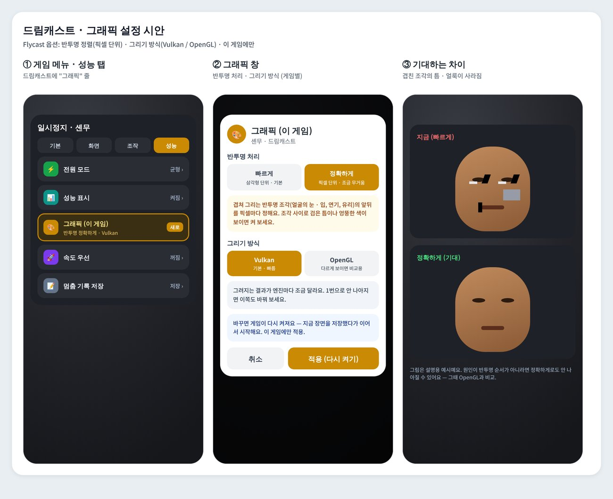
드림캐스트 그래픽 설정 시안 (얼굴 그림은 설명용 예시).
CHD 풀기 · 다른 게임기 (0.0.236)
PS1 · 세가 새턴 · 메가CD · PC엔진 CD의 CHD는 CUE로 풀기(.cue + 트랙마다 .bin), PS2 DVD CHD는 ISO로 풀기(.iso 한 파일). 드림캐스트는 그대로 GDI로 풀기.
게임 메뉴에 풀기가 생기고, CHD에 패치를 고르면 먼저 풀지 물어본 뒤 바로 패치 창으로 넘어갑니다. 목록에는 "CHD에서 풂"으로 표시. CD로 된 PS2 CHD는 아직 풀지 않습니다.
컴퓨터에서 확인한 것: 음악 트랙과 트랙 앞 공백(INDEX 00 · PREGAP)이 있는 CD를 chdman으로 CHD로 묶었다가 풀면 트랙 파일이 원본과 바이트 단위로 같고, 공백 위치도 chdman이 푸는 것과 같음. DVD도 원본과 같음. 실제 기기에서는 확인 전입니다.
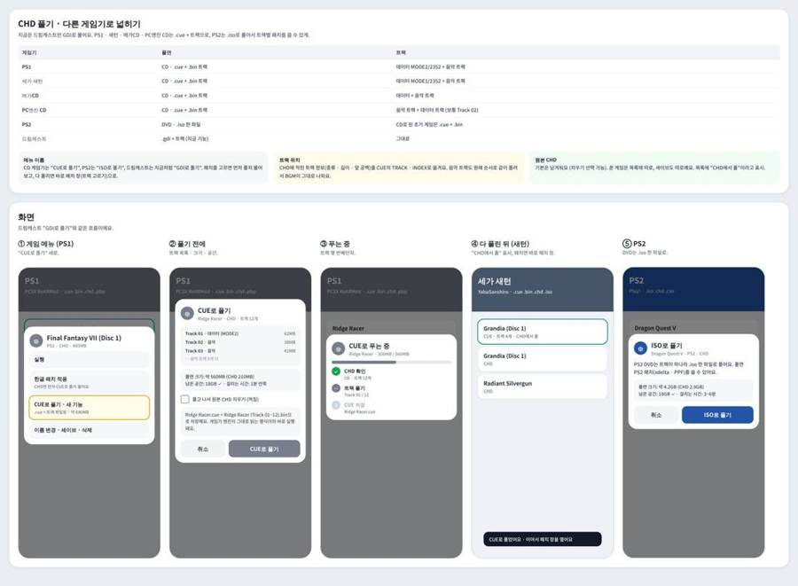
CHD 풀기 · 다른 게임기로 넓히기 시안 (0.0.236).
PSP DLC 가져오기 (0.0.164 ~ 0.0.166)
PSP 게임을 길게 누른 메뉴의 "DLC 가져오기"로 다운로드 콘텐츠를 넣습니다. PPSSPP는 메모리스틱의 PSP/GAME/<ID>/ 패키지(EDAT · PBP)와 PSP/SAVEDATA/<ID>/ 추가 데이터를 DLC로 읽습니다.
zip 파일이나 폴더를 고르면 안을 살펴서 PSP/GAME · PSP/SAVEDATA 경로, 또는 PARAM.SFO · EDAT가 든 ID 이름 폴더를 찾아 보여 주고, 게임의 디스크 ID(ISO의 UMD_DATA.BIN, PBP의 PARAM.SFO)와 맞는지 확인합니다. 다르면 경고합니다.
"가져오기"를 누르면 앱 안 메모리스틱에 복사합니다. 게임 세이브는 건드리지 않고, 암호화된 EDAT는 PPSSPP가 알아서 엽니다.
목록의 게임 이름 옆에 DLC 표시가 붙고, 메뉴에서 가져온 DLC를 지울 수 있습니다. 세이브 백업에는 DLC가 포함되지 않습니다.
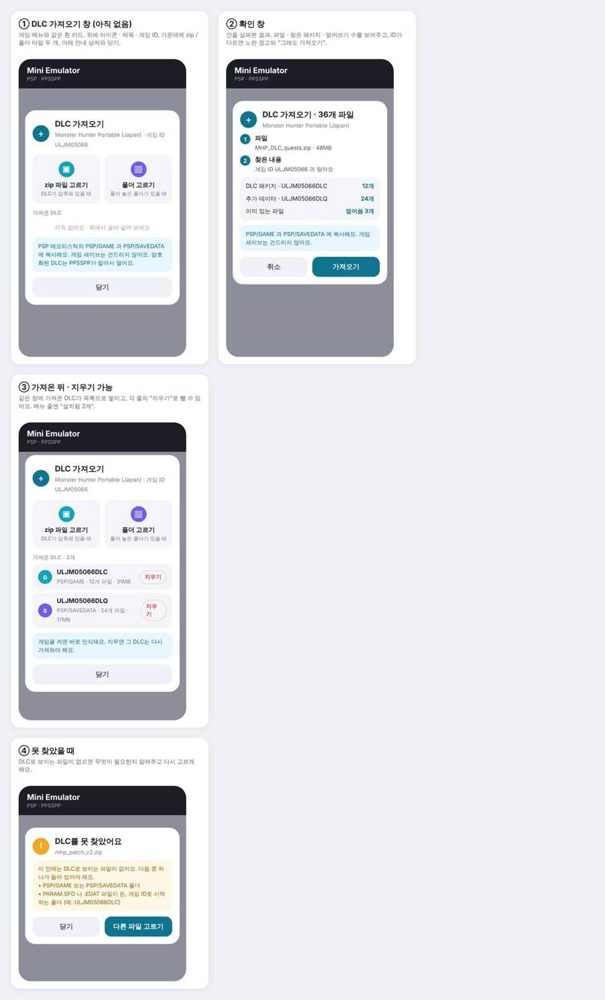
DLC 가져오기 창 (앱 카드 스타일): 고르기 → 확인 → 가져온 뒤 · 못 찾았을 때.
5. 게임 중 메뉴
게임 화면 상단의 메뉴 버튼(또는 가로 모드의 ≡)을 누르면 일시정지 메뉴가 뜹니다.
탭 구성 (0.0.203): 일시정지 메뉴와 따로 있던 "게임 설정" 창을 한 카드의 탭으로 합쳤습니다. 탭마다 높이가 같아 카드가 들썩이지 않고, "계속하기"는 항상 맨 아래에 있습니다. 가로 화면에서는 탭이 왼쪽 세로 줄로 바뀝니다.
탭
내용
기본
빠른 저장 · 불러오기 · 세이브 저장 · 재시작 · 화면 회전 · 스크린샷 · 전체 캡처 · 나가기 (4칸 두 줄), 치트 코드, 지금 상태 한 줄(전원 모드 · 발열 단계 · 화질 · 속도 우선 → 누르면 성능 탭)
성능
전원 모드, 성능 표시, 화질(PSP · 3DS · N64), 속도 우선(PSP · PS2 · N64 · 드림캐스트), 발열 줄이는 법(무거운 기종), 뜨거워지면
화면
화면 필터, 화면 모양, 배경, 버튼 · 화면 배치 편집, 버튼 꾸미기, 꾸미기 프리셋
조작
버튼 진동, 동시 누르기, 스틱 감도, 되감기, 게임패드 버튼 설정, 게임패드 자동 전환
게임기
PSP 언어 · 와이파이 멀티, DS 통신, 원더스완 세로 화면 (해당 기종에서만 보임)
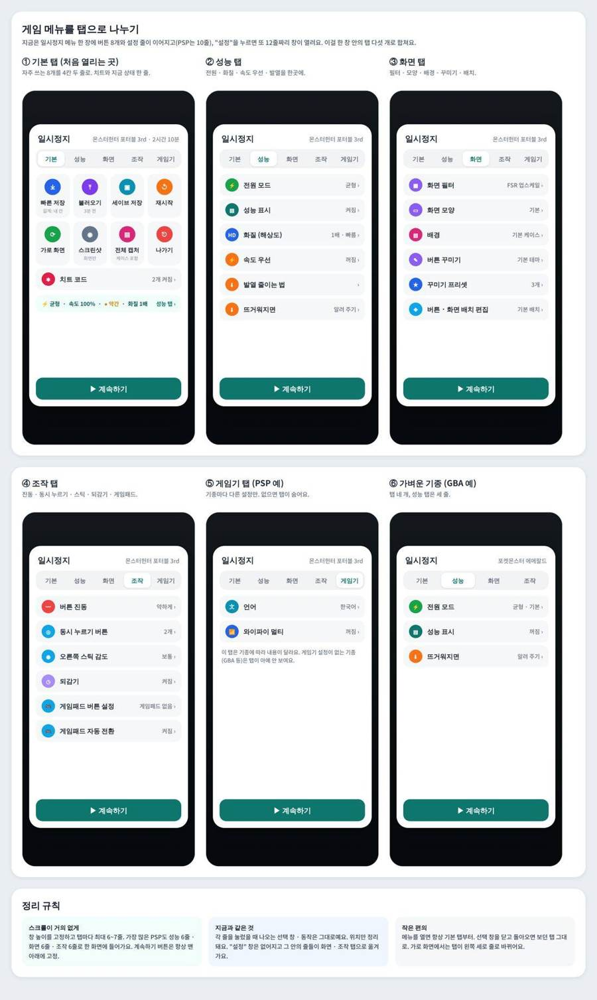
게임 메뉴 탭 정리 시안.
빠른 저장불러오기게임 세이브 저장재시작가로/세로 화면나가기설정성능 표시전원 모드속도 우선 (PSP · PS2)치트
빠른 저장 슬롯
슬롯 여러 개에 시각과 함께 저장되고, 목록에서 골라 불러오거나 지울 수 있습니다. 상단 바의 저장 버튼은 한 번에 빠른 저장.
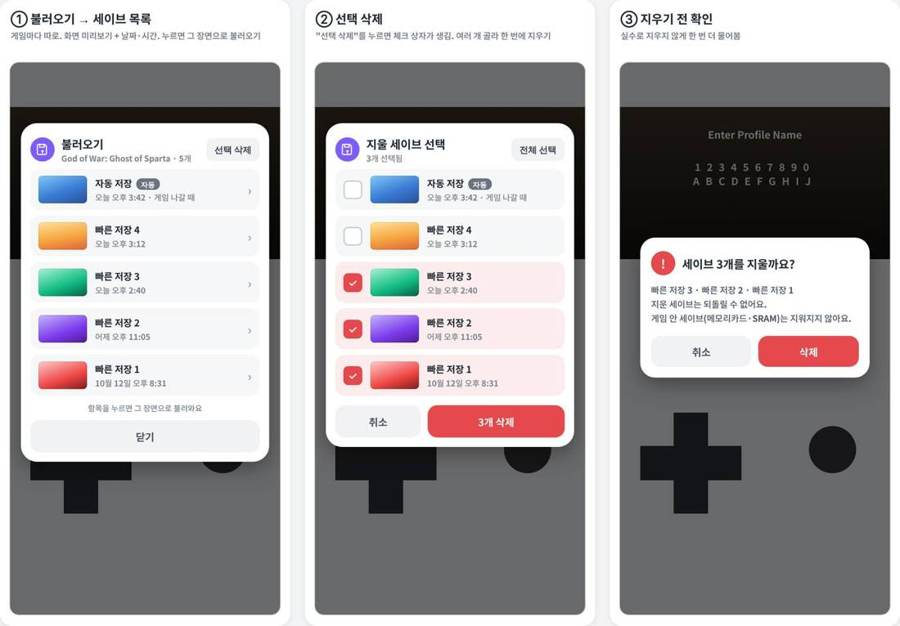
빠른 저장 목록 시안: 슬롯 선택과 삭제.
되감기 · 배속
되감기를 켜면 패드에 되감기 버튼이 생겨 누르는 동안 몇 초 전으로 돌아갑니다. 배속 버튼은 1x에서 빠르게로 토글하며, PSP · PS1 · PS2는 세로 모드에서 L · R 사이, 가로 모드에서 아래 가운데에 놓입니다.
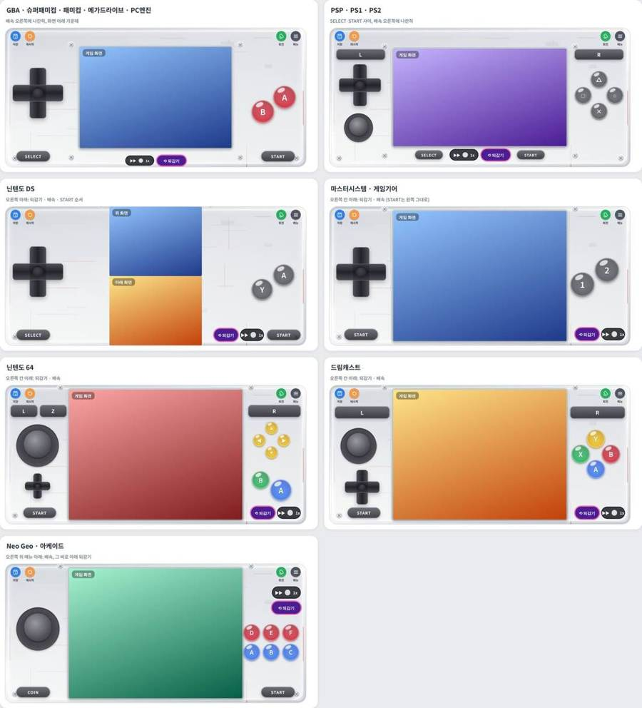
게임기별 가로 모드 되감기 · 배속 버튼 위치 시안.
FBNeo 치트 파일 .ini (0.0.316)
아케이드(FBNeo) 게임 메뉴 기본 탭에 FBNeo 치트 (.ini) 줄이 생깁니다. FBNeo 형식 치트 파일(cheat "이름" · 0 "끄기" · 1 "켜기", 0, 주소, 값)을 넣으면 system/fbneo/cheats/<롬 이름>.ini로 저장하고 게임을 다시 켜서 읽습니다. 롬 이름이 다르면 부모 롬 이름의 .ini도 엔진이 찾습니다.
엔진(FBNeo)이 파일 안의 치트를 하나씩 옵션으로 만들고, 앱이 그 목록을 보여 줍니다. 선택지가 여럿인 치트(캐릭터 · 스테이지 고르기 등)도 그대로 고를 수 있고, 고르면 바로 적용되며 게임마다 기억합니다(다음에 켤 때도 그대로).
기존 치트(RetroArch .cht 형식 · 치트 모음)는 그대로 따로 씁니다.
UTF-8이 아닌 옛 일본어 .ini는 글자가 ?로 보일 수 있습니다(치트 동작은 같음).
치트
치트 코드를 이름과 함께 등록하고 켜고 끌 수 있습니다. 게임마다 따로 저장됩니다. 드림캐스트 · Naomi · 네오지오 포켓처럼 엔진에 치트 기능이 없는 기종은 앱이 게임 메모리에 직접 값을 써서 적용하는 주소 치트를 씁니다(드림캐스트 · 네오지오 포켓 컬러는 공개 치트 모음에서 자동으로 채움). 원더스완은 RAM 코드 직접 입력만 됩니다.
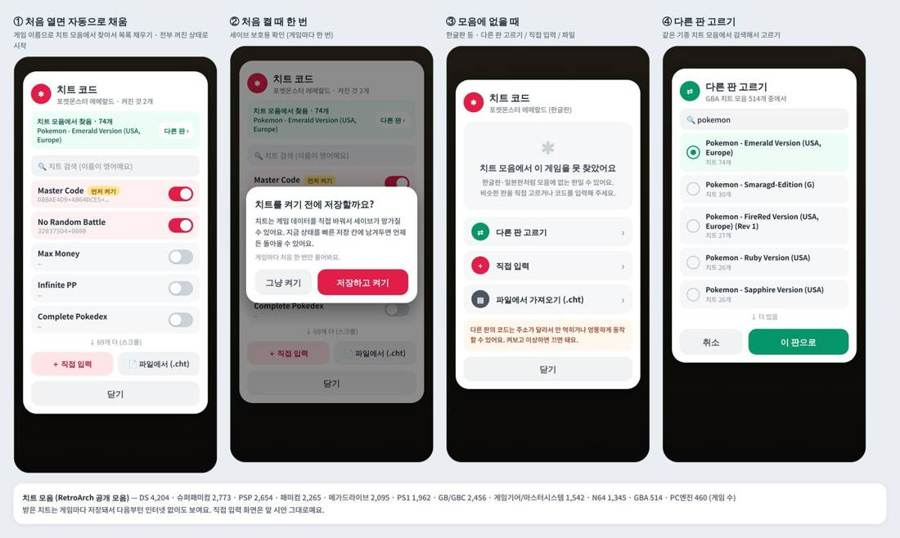
치트 추가 · 목록 시안.
0.0.196에서 늘어난 기종
기종
방식
자동 채움
직접 입력
드림캐스트
주소 치트
287게임
주소 · 값 · 크기
Naomi · Atomiswave
주소 치트
없음 (공개 모음에 없음)
주소 · 값 · 크기
네오지오 포켓
주소 치트로 변환
컬러 24게임
주소:값 (예: 09F8:04)
원더스완
엔진 치트
없음 (모음이 전부 ROM 패치 형식)
RAM 주소:값 (예: 1E24:09)
DOS (0.0.264)
주소 치트 (엔진이 알려 주는 메모리 구역을 이어 붙인 주소, RetroArch와 같은 규칙)
19게임 (DOOM · 페르시아의 왕자 · 알라딘 · 라이온 킹 · 퀘이크 · 레이맨 등)
주소 · 값 · 크기
아케이드 · Neo Geo (0.0.264, FBNeo 엔진만)
주소 치트 (FBNeo 메모리 구역 기준)
72세트 (세트 이름이 정확히 같을 때만: sf2ce · kof95 · mslug · 1941 · outrun 등)
주소 · 값 · 크기. MAME 엔진 게임은 "엔진 변경 → FBNeo"로 바꾸라고 안내
PS2 (0.0.264, PCSX2 엔진만)
값 쓰기 코드는 앱이 EE 메모리(32MB)에 매 프레임 씀 → 바로 켜고 끄기. 조건 · 포인터 등이 섞인 치트는 PCSX2 patches 폴더의 <CRC>_mini-cheats.pnach로 → 다시 시작하면 적용 (.iso만, CHD · CSO는 CRC를 못 읽어 값 쓰기만)
없음
pnach 줄 (patch=1,EE,2031D8E4,extended,000F423F) 또는 풀린 RAW 코드 (2031D8E4 000F423F). 입력하면서 형식을 알아봐 줌. 암호화된 코드는 안 됨. 0.0.265: PCSX2 .pnach 파일 가져오기 — 파일 안의 [이름] 묶음마다 따로 켜고 끄는 치트로 나눠 넣음(묶음이 없는 옛 파일은 파일 이름으로 하나). 시작 때 한 번(patch=0) · IOP 줄도 PCSX2 쪽 파일로 적용. 와이드스크린 · 화면 비율 묶음은 패치 칸에 넣는 게 더 맞다고 안내
게임큐브 · Wii (0.0.264)
Dolphin 게임 설정 파일(GameSettings/<ID>.ini)의 [Gecko] · [ActionReplay]에 써서 켬 → 다시 시작하면 적용. 인터넷 서버(Wiimmfi · WiiLink · 친구끼리)를 켠 동안은 쓰지 않음
없음
Gecko · 액션리플레이 (자동 판별 · 직접 고르기, 암호화된 AR 코드도 됨)
Wii U (0.0.266, .wua만)
Cemu 공식 그래픽 팩 저장소(CC0)의 치트 팩. 켜면 팩 파일(몇 KB)을 받아 Cemu 그래픽 팩 폴더(MiniCheats)에 넣고 켬 → 게임을 나갔다가 다시 켜면 적용. 게임 ID로 찾아서 .wua만 됨
37개 팩 · 11게임 (젤다 BotW 15 · 마리오카트 8 6 · 소닉 붐 5 · 동키콩 트로피컬 프리즈 3 · 3D 월드 2 · 황혼의 공주 HD · 바람의 지휘봉 HD · 몬헌 3G · 스카이랜더스 3종)
직접 넣기 없음 (팩만)
3DS (0.0.266)
엔진(Citra)에 원래 있는 Gateway 치트 기능. 앱이 Citra의 cheats/<게임 ID>.txt를 써 줌 → 게임을 나갔다가 다시 켜면 적용. 일부 코드는 Citra가 모르는 형식이라 안 될 수 있음
약 630게임 (커뮤니티 모음 CTRPF-AR-CHEAT-CODES, 게임 ID로 찾아 그 게임 파일만 받음)
Gateway · 액션리플레이 "XXXXXXXX YYYYYYYY" (입력하면서 형식 확인)
아케이드 · MAME 2003-Plus (0.0.266)
MAME 자체 치트 메뉴. 치트 코드 줄을 누르면 안내 → 처음엔 치트 모음(cheat.dat, 약 7.8MB)을 받고 게임을 다시 켬 → "MAME 치트 메뉴 열기"로 메뉴(Tab)가 열리고 화면 아래에 메뉴용 버튼(▲▼◀▶ · 확인 · 메뉴 닫기). 메뉴 → Cheat → Enable/Disable a Cheat → ◀ ▶. 메뉴는 영어. (실수로 게임이 꺼질 수 있어 Esc는 넣지 않음)
약 2만 8천 항목 (MAME 2003-Plus 저장소의 cheat.dat)
MAME 메뉴에서 켜고 끄기. MAME 2010 · 2015는 아직 없음
주소 치트는 켜 두면 앱이 매 프레임 게임 메모리에 값을 다시 써서 고정하는 방식입니다(RetroArch와 같은 규칙). 목록에는 "주소 1EC4B4 · 값 2432"처럼 보이고, "먼저 켜기" 표시가 붙은 치트는 다른 치트보다 먼저 켜야 합니다. 값 자리가 "??"로 비어 있는 모음의 치트는 동작하지 않아 목록에서 뺐습니다.
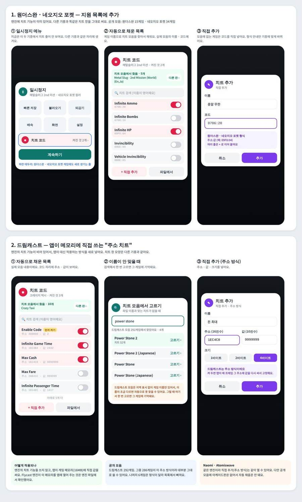
치트 범위 확대 시안 (원더스완은 시안과 달리 자동 채움 없음).
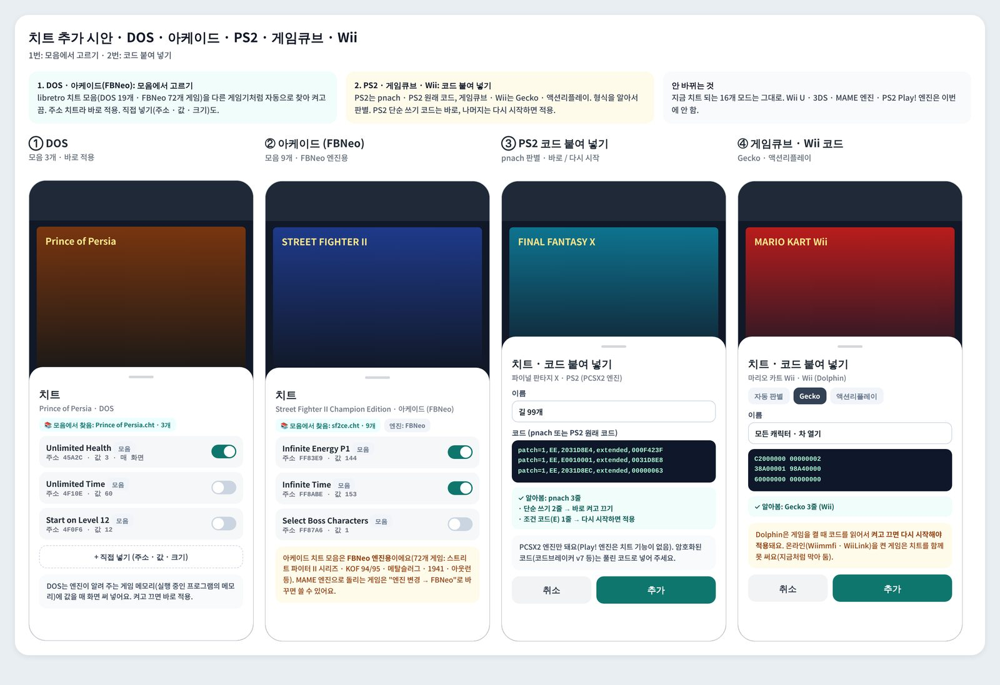
0.0.264 치트 추가 시안: DOS · 아케이드(FBNeo) 모음, PS2 · 게임큐브 · Wii 코드 붙여 넣기. 실제 창은 다른 기종과 같은 치트 창을 씁니다.
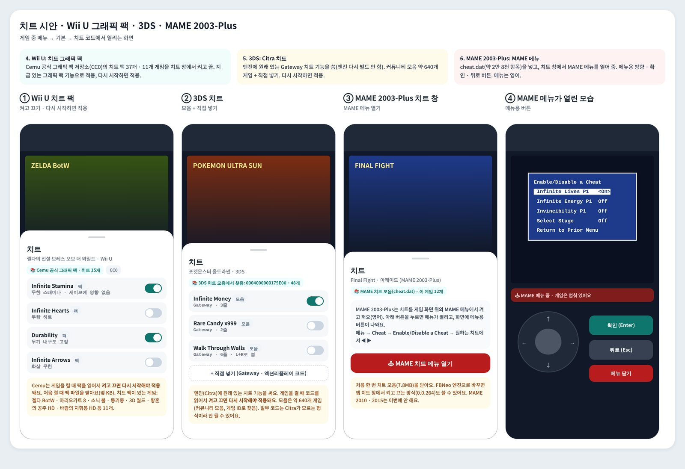
0.0.266 치트 시안: Wii U 치트 팩 · 3DS · MAME 2003-Plus 메뉴. MAME 메뉴 버튼은 시안과 달리 "뒤로(Esc)"가 없습니다.
나가기
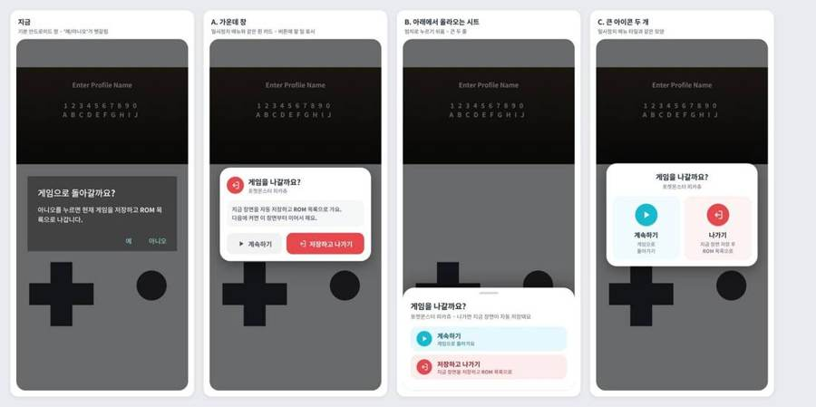
뒤로 가기 확인창 시안. 저장하지 않은 진행이 있으면 "저장하고 나가기"를 권합니다 (C안 채택).
6. 화면 · 화질 (FSR)
화면 필터
기본 · 선명하게 · 스캔라인 · LCD 격자. 3D 게임기에는 FSR 업스케일이 하나 더 있습니다.
FSR 업스케일은 AMD FidelityFX Super Resolution 1.0의 두 단계(EASU 확대 + RCAS 다듬기, 약하게 0.5)를 셰이더로 넣은 것입니다. 게임을 그리는 해상도는 그대로라 속도가 떨어지지 않고, 확대할 때만 1~2ms가 더 듭니다. Vulkan(PSP · PS2 · 드림캐스트)과 OpenGL ES(N64 · 새턴) 양쪽 모두 지원하고, 5개 게임기에서 모두 확인되었습니다.
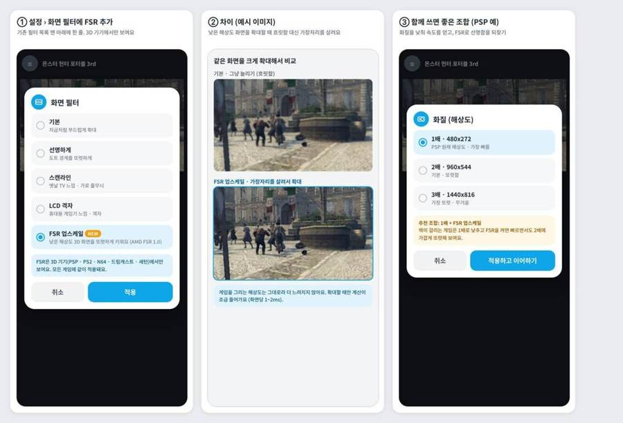
FSR 설정 줄, 기본 확대와의 차이, 추천 조합(1배 해상도 + FSR).
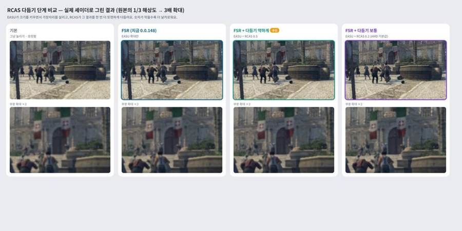
RCAS 다듬기 단계 비교. 약하게(0.5)를 기본으로 적용했습니다.
화질 (해상도)
PSP · PS2 등은 내부 해상도를 1배 · 2배 · 3배로 고릅니다. N64는 1배(320×240) · 2배(640×480, 기본)를 고를 수 있습니다(0.0.201). 렉이 있는 게임은 1배 + FSR이 가장 쾌적합니다 (몬스터 헌터 포터블 3rd가 60FPS · 100%로 확인됨).
폴드 접기 · 펼치기 (0.0.197)
폴드를 접거나 펼치면 회전할 때처럼 엔진은 계속 돌고, 화면과 버튼 배치만 새 화면 크기에 맞춰 다시 그립니다. 예전에는 게임 화면이 통째로 새로 만들어지면서 엔진이 한 프로세스에서 두 번 뜨려다 검은 화면이 됐습니다. 일시정지 메뉴를 연 채로 접거나 펼치면 창 크기가 이전 화면 기준으로 남을 수 있고, 닫았다 다시 열면 맞춰집니다.
게임기 고르기 · 큐브 + 즐겨찾기 + 검색 (0.0.227)
처음 화면과 게임 목록의 "모드 변경" 창이 한 줄에 3개씩 놓인 큐브(정사각형 타일)로 바뀌었습니다. 큐브마다 아이콘 · 게임기 이름 · 파일 종류(확장자만) · 게임 수가 들어갑니다. 글자가 넘치는 휴대폰에서는 그 줄만 조금 길어집니다.
큐브를 길게 누르면 즐겨찾기에 넣기 · 빼기, 즐겨찾기 안에서 앞으로 · 뒤로, 엔진 정보(엔진 이름 · 전체 파일 형식 · 상태)가 나옵니다. 즐겨찾기는 맨 위에 ★와 함께 모입니다.
맨 위 검색창은 게임기 이름 · 엔진 · 파일 형식과 모든 게임기의 게임 이름을 같이 찾습니다. 게임을 누르면 그 게임기로 들어가서 바로 실행합니다. 결과는 60개까지 보여 줍니다.
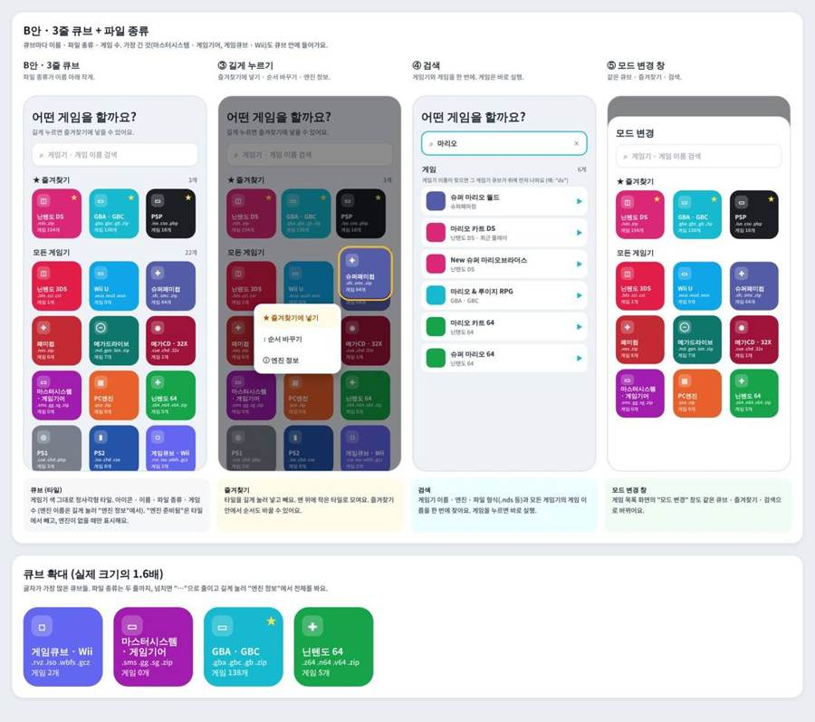
게임기 고르기 B안(3줄 큐브 + 파일 종류) 시안.
전체 · 즐겨찾기 탭과 정렬 (0.0.235)
검색창 아래 [전체 | ★ 즐겨찾기] 탭. 전체는 모든 게임기를 한 목록에(즐겨찾기한 게임기는 ★ 표시), 즐겨찾기는 즐겨찾기한 게임기만. 비어 있으면 길게 눌러 넣는 법을 알려줍니다.
오른쪽 정렬 버튼: 최근 플레이(마지막으로 게임한 게임기부터, 큐브에 "방금 · 어제 · 3일 전"), 이름순(가나다 다음 ABC), 기본 순서. 탭과 정렬은 다음에 켤 때도 그대로입니다.
고친 점: 마지막 줄에 큐브가 1~2개뿐이면 높이가 0으로 눌려 안 보이던 문제(즐겨찾기 8개일 때 등). 빈자리를 안 보이는 큐브로 채워 끝 줄도 정상 크기로 보입니다.
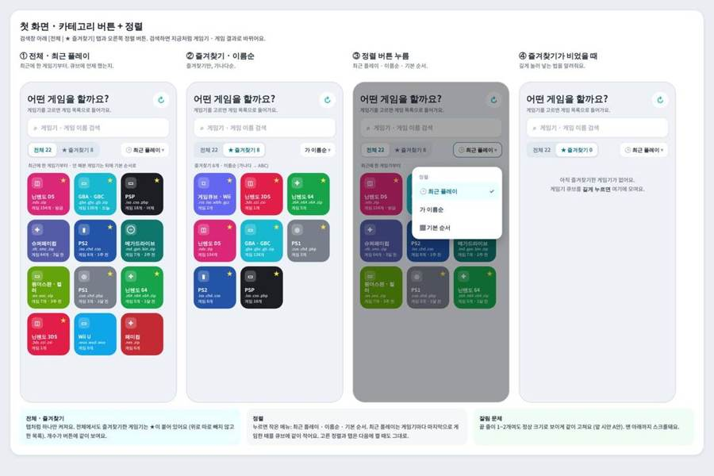
첫 화면 · 전체/즐겨찾기 탭과 정렬 시안 (0.0.235).
7. 성능 · 전원
성능 표시
FPS · 속도% · CPU 온도(없으면 배터리 온도) · 배터리와 시간당 소모를 한 줄로 보여줍니다. 0.0.161부터는 게임 화면 아래 케이스 띠(원래 'MINI EMULATOR' 글씨 자리)에 놓여 게임 화면을 가리지 않고, 화면이 꽉 차는 전체 화면 · 게임패드 모드에서만 맨 위 가장자리에 배경 없는 글자로 뜹니다. 속도%는 게임이 원래 돌아야 하는 속도 대비이며, 오디오 클럭에 맞춰 도는 게임기(N64 · 드림캐스트 · PSP)는 그 기준으로 계산해 100%가 정확히 나옵니다. 초록 95% 이상, 노랑 80% 이상, 빨강 그 아래.
0.0.286: 이제 게임 화면의 아래쪽 가장자리를 따라 작은 띠로 뜹니다 (전체 화면 · 게임패드 모드는 배경 없는 글자로). 화면을 늘리거나 확대한 경우 예전엔 실제 화면 아래가 아니라 화면 중간쯤에 뜨던 문제도 고쳤습니다 — 실제로 보이는 게임 화면의 위치를 기준으로 계산합니다.
0.0.251: 오디오에 맞춰 도는 게임기(드림캐스트 · N64 · PSP · GameCube · Wii)는 한 번에 진행하는 게임 시간이 장면마다 달라, 실제 속도가 정상인데도 속도%가 80~100%를 오갔습니다. 이제 1초 동안 나온 소리 양으로 속도를 계산해 실제로 느려질 때만 내려갑니다(소리가 없는 동안은 예전 방식). 다른 게임기는 그대로입니다. 표시 계산만 바뀌고 게임 동작 · 성능은 같습니다.
드림캐스트의 FPS는 게임이 실제로 새로 그린 장수라, 30장만 그리는 게임은 30 근처로 보입니다(게임 속도는 정상). 이 설명은 성능 표시 설정 창의 안내에만 넣고, 게임 화면의 표시 줄은 그대로 둡니다.
0.0.302: FPS · 속도%를 1초가 아니라 최근 약 4초 평균으로 보여줍니다. 드림캐스트 엔진은 소리와 화면을 고르지 않게 몰아서 넘겨, 게임은 고르게 도는데도 1초마다 17% ↔ 137%처럼 크게 오갔습니다. 표시 계산만 바뀌고 게임 동작은 같습니다. 숫자는 1초마다 새로 고쳐집니다.
0.0.252: 드림캐스트(및 N64 · PSP · GameCube · Wii)에서 게임을 나갔다가 다시 켜면 이어하기 직후 1~2초 빨라졌다 느려지던 문제를 고쳤습니다. 오디오로 재는 속도 기준이 이어하기 전(숨겨진 부팅 화면)의 값을 120프레임 동안 들고 있었습니다. 이제 저장 상태를 불러오면 기준을 새로 재고, 8프레임만 쌓이면 바로 그 평균을 씁니다.
전원 모드 (게임별)
모드
동작
성능
고성능 코어에 붙이고 CPU 속도를 높게 유지. 무거운 기종의 기본
균형
코어는 휴대폰에 맡기고, 한 장을 그리는 데 걸린 시간을 알려 속도를 맞출 수 있는 가장 낮은 CPU 속도로 돌림 (0.0.201). 가벼운 기종의 기본 (0.0.198)
절전
균형 + 화면을 한 장씩 건너뛰어 그림 (게임 속도는 그대로). 발열 · 배터리용
기종별 기본값 (0.0.198): GBA · 게임보이, 슈퍼패미컴, 패미컴, 메가드라이브, 마스터시스템 · 게임기어, PC엔진, 원더스완, 네오지오 포켓, 메가CD · 32X, 아케이드(MAME 2003-Plus · FinalBurn Neo)는 전원 모드를 한 번도 바꾸지 않았으면 균형으로 시작하고, 설정에 "균형 · 기본"으로 보입니다. 나머지 기종은 성능이 기본입니다. 직접 고른 게임은 그 값을 계속 씁니다.
바로 적용 (0.0.201): 전원 모드는 게임을 다시 켜지 않고 그 자리에서 바뀝니다(버튼 "적용"). ST-V 게임도 처음부터 다시 시작하지 않습니다.
발열 단계 대응 (0.0.201)
안드로이드 10 이상에서 휴대폰이 알려 주는 발열 단계(보통 · 약간 · 뜨거움 · 심각)를 받습니다. 성능 표시에는 온도 옆에 단계가 색으로 보입니다(초록 · 노랑 · 주황 · 빨강).
설정 › 뜨거워지면
동작
알려 주기 (기본)
성능 모드에서 "뜨거움"이 되면 위에 "폰이 뜨거워지고 있어요" 알림과 "균형으로 바꾸기" 버튼. 한 게임에 한 번
자동으로 균형
알림 없이 균형으로 낮추고 짧게 알림
그대로 두기
아무것도 하지 않음
"심각" 단계에서는 "잠시 쉬어 주세요"를 한 번 알립니다. 단계가 바뀌는 시점은 기기마다 다릅니다.
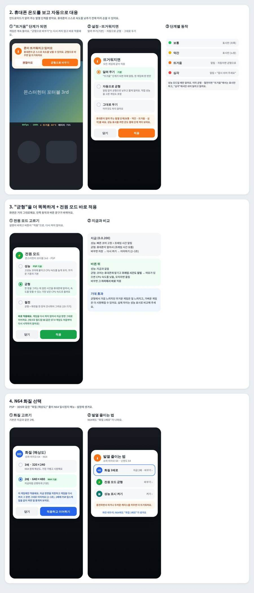
발열 단계 대응 · 균형 개선 · N64 화질 시안.
화면 주사율 맞춤 (0.0.200)
게임은 초당 60장(PAL 게임은 50장)으로 그려지는데, 폴드8 같은 휴대폰 화면은 최대 120Hz로 돕니다. 0.0.200부터는 게임 화면이 "이 화면은 게임 속도(60 · 50장)면 된다"고 시스템에 알려서, 화면이 그 주사율로 내려갈 수 있게 했습니다(안드로이드 11 이상). 게임 속도와 화질은 그대로이고 화면 전력과 발열이 줄어듭니다. 실제로 내려가는지는 기기 설정에 따라 다를 수 있습니다.
발열 안내 (0.0.198)
PS2, 3DS, 새턴, PSP, 드림캐스트 · Naomi, N64, 아케이드 MAME 2010 · 2015 게임을 처음 켜면 위쪽에 "발열이 큰 기종이에요" 알림이 8초 동안 뜹니다(게임은 멈추지 않음). "줄이는 법"을 누르면 지금 바꿀 수 있는 것만 보입니다: 화질 1배로(PSP · 3DS에서 1배보다 높을 때), 전원 모드 균형(성능일 때), 성능 표시 켜기. 같은 내용은 일시정지 메뉴의 전원 모드 아래 "발열 줄이는 법"에서 다시 볼 수 있습니다.
폴드8처럼 얇은 폴더블은 부하가 길게 이어지면 성능이 크게 떨어지는 편입니다(리뷰 스트레스 테스트에서 처음 성능의 약 40~50%). 무거운 기종은 화질을 낮추는 것이 가장 효과가 큽니다.
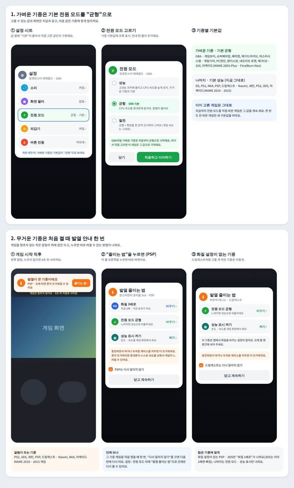
전원 모드 기본값 · 발열 안내 시안.
속도 우선 (게임별)
게임기
단계
내용
PSP
끔 · 켬
텍스처 캐시 지연, GPU 읽기 생략, 효과 해상도 낮춤, 스플라인 낮게, 비등방 끔. 프레임 스킵은 쓰지 않음
PS2
끔 · 그림만 가볍게 (0.0.287) · 켬 · 강하게
그림만 가볍게: 블렌딩 최소, 디더링 끔, 밉맵 끔, 화면 되읽기 기다리지 않음(0.0.288, Unsynchronized) — PS2 CPU(EE)는 100% 그대로. 켬 · 강하게: 여기에 EE 사이클 비율 −1(강하게 −2), 사이클 스킵 1(강하게 2). MTVU는 항상 켜짐
게임기 (0.0.202)
단계
내용
N64
끔 · 켬
화면 내용을 CPU 쪽 메모리로 되돌려 복사하는 작업(색 · 깊이) 끔, 같은 화면 반복 시 다시 그리지 않음. 일부 효과(화면 속 화면, 사진 찍기 등)가 빠질 수 있음
드림캐스트 · Naomi
끔 · 켬
사운드 DSP(울림 · 에코) 끔, 늦어질 때만 화면을 한 장씩 건너뜀. 소리 울림이 빠질 수 있음
엔진에서 기본으로 켜져 있는 무거운 설정만 끕니다. 발열 줄이는 법에도 속도 우선이 있는 기종이면 "속도 우선 켜기"가 나옵니다.
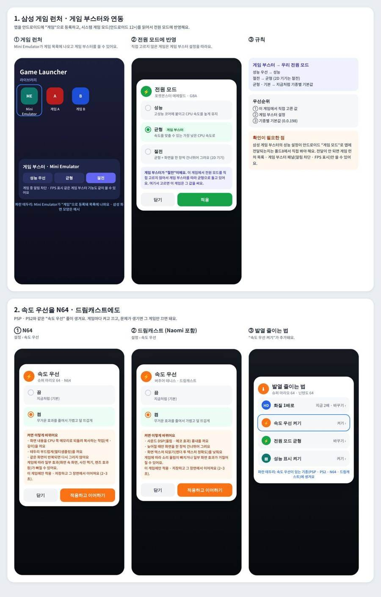
N64 · 드림캐스트 속도 우선 시안 (위쪽 게임 부스터 연동은 보류).
실제 확인 결과: PS2 로그 갤럭시 디렉터즈 컷은 강하게에서 끊김이 사라졌고, PSP 몬스터 헌터는 속도 우선을 끄고 1배 + FSR이 가장 좋았습니다. PS2 철권 5는 그림만 가볍게(0.0.288 화면 되읽기 포함)에서 기술 이펙트 때의 드랍이 확실히 줄었고, 켬 · 강하게에서는 오히려 느려졌습니다. 게임마다 다르니 성능 표시를 켜고 비교해 보세요.
PS2 CPU를 많이 쓰는 게임(철권 5 등)은 켬 · 강하게에서 PS2 CPU를 낮추는 만큼 게임 자체가 느려질 수 있습니다. 기술 이펙트처럼 그림이 많아질 때만 끊긴다면 그림만 가볍게를 먼저 써 보세요. 효과는 게임마다 다릅니다.
화면 되읽기 (0.0.288): PS2 게임 일부 효과(아지랑이 · 잔상 등)는 그린 화면을 다시 읽어 오는데, 정확하게 읽으면 휴대폰 GPU에서는 그때마다 그리기 전체가 잠깐 멈춥니다. 속도 우선(그림만 가볍게 · 켬 · 강하게)에서는 기다리지 않고 바로 앞 프레임의 그림을 씁니다. 그런 효과가 살짝 어긋나거나, 빠른 저장 미리보기 그림이 한 프레임 전 화면일 수 있습니다. 속도 우선 끔은 예전처럼 정확하게 읽습니다.
성능 표시 위치: 세로 2D · 세로 PS · 가로 · 꽉 찬 화면.PSP 일시정지 메뉴와 속도 우선 설정 시안.
와이파이 멀티 (PSP · 0.0.161)
같은 와이파이(또는 한 대의 핫스팟)에 있는 Mini Emulator끼리 PSP 애드혹 통신으로 함께 플레이합니다. 몬스터 헌터 포터블, 철권 6처럼 애드혹 멀티가 있는 게임이 대상입니다.
PSP 게임의 일시정지 메뉴에 "와이파이 멀티" 줄이 있습니다. 꺼짐 · 방 만들기(방장) · 참가 중 고릅니다.
방장을 고르면 이 휴대폰이 PPSSPP 내장 애드혹 서버가 되고, 메뉴 줄에 자기 IP가 보입니다.
참가를 고르면 같은 와이파이에서 방을 연 휴대폰을 자동으로 찾아 목록에 보여 주고, "연결"을 누르면 됩니다. 다른 게임을 돌리는 방은 흐리게 표시됩니다. 안 보이면 IP를 직접 넣을 수 있습니다.
설정은 PSP 게임 공통이며, 바꾸면 지금 장면을 저장하고 게임을 다시 켜서 이어집니다.
연결된 뒤에는 게임 안에서 실제 PSP처럼 애드혹 방을 만들고 들어갑니다. 두 대가 같은 게임(같은 지역판)이어야 하고, 두 대 모두 제 속도로 돌아야 끊기지 않습니다.
게임 화면에는 아무 표시도 띄우지 않습니다. IP와 상태는 메뉴 줄에서만 봅니다.
PS1 · PS2 · N64 등은 기기 간 통신 기능이 원래 없어서 이 줄이 없습니다.
와이파이 멀티 흐름: 설정 줄 → 역할 → 방장 찾기. (시안의 게임 화면 상태 배지는 넣지 않았습니다.)
PS3 모드 다시 넣음 · ARMSX3 1.6.7 (0.0.391)
0.0.149에서 뺐던 PS3 모드를 새 엔진 ARMSX3 1.6.7(RPCS3 휴대폰판, 시험판)로 다시 넣었습니다. 첫 화면 PS2 다음에 PS3가 있습니다. 게임은 직접 뜬 디스크 .iso를 넣습니다.
PS3 펌웨어: 본인이 받은 공식 PS3UPDAT.PUP를 "PS3 펌웨어" 타일에서 골라 설치합니다. 펌웨어는 앱에 들어 있지 않습니다. 설치 전에는 목록에 "펌웨어 필요"가 뜹니다.
게임 패치 (일시정지 메뉴): 이 게임에 맞는 RPCS3 패치(60fps 해제, 해상도 고정 해제 등)를 켜고 끕니다. "최신 목록 받기"는 rpcs3.net의 공개 패치 목록을 받아 검사값(SHA-256)을 확인한 뒤 씁니다. "patch.yml 가져오기"로 가진 파일을 더할 수도 있습니다. 바꾼 패치는 게임을 다시 시작하면 적용됩니다.
상태 저장 슬롯 4개: 저장 · 불러오기에서 슬롯을 고르고, 슬롯마다 저장한 시각이 보입니다. PS3 엔진은 저장할 때 게임을 잠깐 다시 켜므로 몇 초 멈춥니다.
성능 설정: 해상도 배율, 속도 우선, SPU 스레드, 성능 표시, GPU 터보(Adreno GPU 휴대폰에서만, 발열이 늘어남).
게임패드: 연결한 패드(블루투스 · USB)가 1P 패드로 바로 들어갑니다. A=✕ B=○ X=□ Y=△, L1/R1/L2/R2, 스틱 두 개, L3/R3, Start/Select, 홈 버튼=PS 버튼. 화면 패드와 함께 쓸 수 있습니다.
시안과 다른 점: 배치 편집 · 배경 사진 · 연사 · 자이로 · 2P~4P 패드 · PKG/RAP/DLC 설치 메뉴 · 프레임 생성 · 건콘3은 다음 단계로 미뤘습니다. 실시간 자막 번역은 0.0.141에서 뺀 기능이라 이번에 넣지 않았습니다.
휴대폰 성능에 따라 속도 차이가 큽니다. 아직 실제 기기에서 확인하지 않았습니다.
PS3 모드 시안 (일부는 다음 단계).
목록에서 숨기기 · 부모롬 안내 (0.0.390)
게임을 길게 눌러 목록에서 숨기기: 파일 · 세이브 · 패치는 그대로 두고 목록 · 검색 · 홈 화면 개수에서만 뺍니다. 게임 모드마다 따로입니다.
숨긴 게임이 있으면 정렬 줄 끝에 🙈 숨김 N이 생깁니다. 누르면 숨긴 게임만 흐리게 보이고, 길게 눌러 다시 보이기로 되돌립니다. 다시 누르면 보통 목록.
아케이드 · 네오지오의 분리형 클론롬(예: 전국 블레이드 tengaij.zip — 일본판 프로그램 롬 2개만 든 ZIP)은 같은 폴더의 부모 ZIP(tengai.zip)에서 나머지 롬을 읽습니다. 부모롬을 길게 누르면 "🔗 … 이(가) 이 파일을 함께 읽어요"가 뜨고, 지우려 하면 한 번 더 경고합니다. 클론 줄에는 "🔗 부모롬 tengai.zip (숨김) 함께 사용"이 붙습니다. 그래서 부모롬은 지우지 말고 숨기면 됩니다.
2P 총을 켜고 라이트건이 둘 이상 연결돼 있을 때, 건슈팅 설정 창을 열어 둔 채 아무 총이나 쏘면 목록에서 그 총 줄에 "← 방금 쏨 (1P / 2P)"이 2.5초 동안 파랗게 뜹니다. 어느 총이 몇 P인지 보고 바로 옆에서 1P / 2P를 바꿉니다. (0.0.387 시안에 있었는데 빠졌던 것)
총의 클릭은 창에도 그대로 전달되어, 마우스로 창의 버튼을 누르는 것도 됩니다.
아직 실제 총으로 확인하지 않았습니다.
패드 스틱 감도 · 건슈팅 데드존 (0.0.388)
스틱 감도를 패드에도: 조작 › 스틱 감도 창에 "적용할 스틱: 화면 스틱만 / 화면 스틱 + 패드 스틱"이 생겼습니다. "화면 + 패드"면 연결한 블루투스 · USB 패드(1P~4P)의 스틱 값에 같은 배율(0.5x~2x)을 곱합니다(끝까지 민 값은 넘지 않음). 이 선택은 모든 게임에 같고, 처음에는 "화면 스틱만"(지금까지와 같음)입니다. 조작 탭 줄에 " · 패드도"로 표시됩니다.
건슈팅 › 패드 스틱으로 조준 › 데드존: 작게 8% / 보통 18%(기본, 지금까지 값) / 크게 28%. 얼마나 기울여야 조준이 움직이기 시작할지입니다. 옆의 그림에 지금 패드 스틱 위치(파란 점)와 데드존(빨간 점선)이 보여, 손을 뗐을 때 점이 점선 안에 있는지 보고 고릅니다. 2P 패드 조준도 같은 값.
건슈팅 조준에 쓰는 스틱에는 스틱 감도 대신 조준 속도 · 가속 · 데드존이 적용됩니다.
아직 실제 기기에서 확인하지 않았습니다.
패드 스틱 감도 · 건슈팅 데드존 시안.
건슈팅 · 2P 총 (0.0.387)
총 두 자루를 받는 게임 모드에서 건슈팅 설정에 2P 총 칸이 생깁니다(게임마다, 켜고 끄면 게임을 다시 켬): PS2 건콘2(USB 두 번째 칸), PS1 건콘 · 코나미(총이 1P 자리일 때, 2P 총은 2P 자리), 드림캐스트 · 나오미 · 아토미스웨이브 · FBNeo · MAME 2003-Plus(2P 자리). 게임 안에서 2인용을 골라야 2P가 쏩니다.
2P 패드: 스틱이 2P 조준(1P와 같은 "패드 스틱으로 조준" 설정을 따름), 버튼이 2P 총. 버튼 설정이 없는 2P 패드는 R2 발사 · L2 재장전 · R1 / L1 건콘 A / B · R3 조준 가운데로(PS2는 L3 보정 쏘기)로 시작하고, 2P 패드 버튼 설정에서 바꿉니다.
라이트건 두 자루(시험): 먼저 쏜/연결된 총이 1P, 다음 총이 2P. 설정에서 총마다 1P / 2P를 정할 수 있습니다. 안드로이드는 마우스 커서가 하나뿐이라 총에 따라 조준이 튈 수 있습니다.
조준점은 1P 빨강, 2P 파랑. 화면 터치와 화면 위 총 버튼은 1P 것입니다.
블루투스: 패드와 라이트건은 USB · 블루투스를 가리지 않습니다. 휴대폰이 게임패드나 마우스로 인식하는 장치면 똑같이 동작합니다.
시안과 다른 점: "이 총 쏴 보기"는 0.0.389에서 들어갔습니다. 슈퍼패미컴 · 메가드라이브 저스티파이어 두 자루는 엔진이 총 두 자루를 읽는 방식이 달라 이번에는 빠졌습니다.
아직 실제 기기에서 확인하지 않았습니다.
2P 총 시안.
건슈팅 · 패드 스틱 조준 · 라이트건 (0.0.386)
패드 스틱으로 조준 (메뉴 › 조작 › 건슈팅, 게임마다): 끔 / 오른쪽 스틱(기본) / 왼쪽 스틱. 스틱을 기울이면 조준점이 그 방향으로 움직이고, 많이 기울일수록 빠릅니다. 손을 떼면 그 자리에 멈춥니다. "조준 속도"와 "천천히 시작해서 빨라지기"(오래 기울이면 점점 빠르게)를 고릅니다. 조준에 쓰는 스틱은 그동안 게임에 스틱 입력을 보내지 않습니다.
패드 버튼 설정에 새 기능 조준 가운데로가 생겼습니다(눌러서 조준을 화면 가운데로). 발사 · 재장전 · 보정 쏘기 등도 패드 버튼에 붙입니다.
라이트건 (마우스처럼 연결되는 총): 켜면(기본 켬) 마우스 신호를 총으로 받습니다. 가리키는 곳 = 조준점, 방아쇠(왼쪽 클릭) 발사, 오른쪽 클릭 재장전, 가운데 클릭 건콘 A, 옆 버튼 건콘 B / 보정 쏘기. 게임 화면 밖을 겨누고 쏘면 화면 밖 쏘기(재장전). 게임 화면 위에서는 마우스 커서를 숨깁니다. 설정에 지금 연결된 장치 이름이 보입니다.
"화면 둘레에 흰 테두리": Sinden처럼 테두리를 보고 위치를 재는 총을 위해 게임 화면 바깥에 흰 테두리를 그립니다(기본 꺼짐).
조준점은 하나이고, 화면 터치 · 스틱 · 라이트건 중 마지막에 움직인 것이 옮깁니다.
마우스로 인식되는 총(Sinden, GUN4IR 등)만 해당되고, 건콘2 등 브라운관용 총은 원리상 안 됩니다. 실제 총 · 패드로는 아직 확인하지 않았습니다.
패드 스틱 조준 + 라이트건 시안.
PS2 건콘2 · 가로 버튼 자리 바로잡기 (0.0.385)
0.0.384에서 건슈팅 버튼 자리를 새로 정할 때 키패드가 아직 움직이는 중에 위치를 재서, 발사 · 재장전 · 건콘 A · B · 보정 쏘기가 모두 엉뚱한 곳에 놓였습니다. 이제 키패드 위치가 250ms 간격으로 두 번 같게 나올 때(다 자리 잡았을 때)만 잽니다.
0.0.384가 정한 자리는 버리고, 그 전(0.0.379~0.0.383)에 정해진 자리를 되살립니다. 그래서 건콘 A · B는 예전처럼 △ 양옆에 돌아옵니다.
PS2 건콘2 가로 화면: 발사는 ✕ 왼쪽, 재장전은 ✕ 오른쪽(✕와 □ / ○ 양쪽에서 건콘 A ↔ △ 간격만큼 떨어져, 둘이 좌우 대칭), 보정 쏘기는 R3 바로 오른쪽(같은 간격 · 같은 높이). 크기는 발사 · 재장전이 건콘 A · B와 얼굴 버튼의 중간, 보정 쏘기가 건콘 A · B와 같습니다. 화면에 놓인 ✕ · □ · ○ · △ · R3의 실제 위치 · 크기로 계산합니다.
아직 실제 기기에서 확인하지 않았습니다.
PS2 건콘2 가로 버튼 자리 시안 (0.0.383 화면 위).
PS2 건콘2 · 보정 쏘기 · 가로 버튼 자리 (0.0.384)
타임 크라이시스 2처럼 처음에 "건콘2 조정"(중앙의 십자를 겨냥해 방아쇠) 화면이 나오는 게임에서, 발사를 아무리 눌러도 다음으로 넘어가지 않았습니다. 이 게임들은 실제 건콘2의 "보정 쏘기"(방아쇠를 당긴 뒤 화면이 잠깐 까매질 때 총이 빛을 못 보는 것)로 조준을 맞추는데, PS2 엔진(PCSX2)의 그 입력(Calibration Shot)이 libretro 쪽에 연결돼 있지 않았습니다.
PS2 건슈팅 모드에 노란 보정 쏘기 버튼이 생겼습니다. 가운데 십자를 겨누고 이 버튼을 한 번 누르면, 앱이 PCSX2와 같은 순서(조준 위치에서 방아쇠 7프레임 → 화면 밖 쏘기 5프레임)로 총 신호를 보냅니다. 조정 화면에서만 쓰면 되고, 게임 중에는 발사를 씁니다.
가로 화면에서 건콘2 버튼 자리: 발사는 ✕ 왼쪽, 재장전은 ✕ 오른쪽, 보정 쏘기는 오른쪽 칸 맨 위, 건콘 A · B는 △ 양옆을 의도했지만 실제로는 어긋나게 놓였습니다(0.0.385에서 바로잡음).
타임 크라이시스 2 PS2 한글 패치처럼 patch.json(형식 "…-bin-to-iso-v1") + patch.bin으로 된 패치를 앱이 직접 적용합니다. 이 형식은 "원본 .bin을 .iso로 바꾼 뒤, 정해진 자리에 patch.bin의 조각을 덮어쓰기"이고, 원본 · 완성본의 크기와 SHA-256이 들어 있습니다. PC 패처(.exe)가 하는 일과 같습니다.
.cue / .bin을 넣을 때 함께: 확인 창이 .bin 옆(같은 폴더나 바로 아래 폴더)의 patch.json + patch.bin 또는 그것이 든 ZIP을 찾아 "패치: … · 이 원본용"으로 보여 줍니다. 같이 골라도 되고, "패치 고르기"로 나중에 골라도 됩니다. "패치 적용 / 원본 그대로"를 고릅니다.
순서: .bin을 읽으며 원본 SHA-256 확인 → .iso로 바꾸고 조각 덮어쓰기(조각마다 검사) → 완성본 SHA-256 확인. 완성본이 패치의 값과 같을 때만 "… (한글패치).iso"로 목록에 넣습니다(이름에 한글 · KO가 없으면 "(패치)").
원본 검사값이 다르면(다른 판본 · 덤프 · 이미 고친 파일) 패치하지 않고 원본대로 .iso만 넣고 그렇게 알려 줍니다. 시안에서는 이때 "패치 없이 넣기"를 물어보기로 했지만, 이미 바꾼 .iso를 버리지 않도록 바로 넣습니다(필요 없으면 지우세요).
이미 바꿔 둔 .iso에 나중에: 게임 › 패치 적용에서 그 ZIP이나 patch.json + patch.bin을 고르면, .iso는 그대로 두고 복사본에 패치해 "… (한글패치).iso"로 넣습니다(같은 크기만큼 빈 공간 필요). 완성본 검사값이 맞을 때만 넣고, 아니면 복사본을 지웁니다.
아직 실제 기기에서 확인하지 않았습니다. (작은 가짜 디스크와 패치로 원본 · 완성본 검사가 맞는 것과, 실제 patch.json을 읽는 것은 확인했습니다.)
PS2 레시피형 한글패치 함께 적용 시안.
PS2 · 연결 화면에서도 .cue / .bin (0.0.382)
ROM 추가 › "파일 골라 연결하기" · "폴더째로 연결하기"(앱의 파일 화면)에서 PS2 .cue / .bin이 숨겨져 있었습니다. 이제 .cue(또는 .cue가 없는 .bin)가 "눌러서 .iso로 바꿔 넣기"로 보이고, 누르면 같은 확인 · 바꾸기 과정을 거칩니다. "이 폴더 연결하기"를 눌렀는데 그 폴더에 .cue / .bin만 있으면 바로 바꾸기로 넘어갑니다.
.cue / .bin은 PS2 엔진이 바로 못 읽어서 연결(원본 그대로)이 아니라 앱 안에 .iso를 만듭니다. 그만큼 공간이 필요합니다.
아직 실제 기기에서 확인하지 않았습니다.
PS2 · 폴더에서 .cue / .bin 가져오기 · PS1과 구분 (0.0.381)
0.0.380에서는 파일 고르기에서만 .cue / .bin을 받아서, PS2 › 게임 추가 › 폴더에서는 목록에 뜨지 않았습니다. 이제 폴더에서도 .cue(또는 .cue가 없는 .bin)가 "… · .iso로 바꿔 넣기"로 뜨고, 고르면 같은 확인 · 바꾸기 과정을 거칩니다. .cue가 가리키는 .bin은 같은 폴더에서 찾습니다.
CD로 나온 PS2 게임(예: 타임 크라이시스 2)은 파일 모양이 PS1과 같아서, PS1 연결 폴더에 두면 PS1 게임으로 잡혔습니다. 이제 디스크 안 SYSTEM.CNF가 "BOOT2"(PS2)인지 확인해 PS1 연결 폴더 목록에서는 뺍니다. 이미 PS1 목록에 들어간 것은 실행하면 "PS2 게임"이라고 알려 주며, 지워도 됩니다.
아직 실제 기기에서 확인하지 않았습니다.
PS2 · .cue / .bin을 .iso로 바꿔 넣기 (0.0.380)
PS2 게임 추가(파일 고르기)에서 이제 .cue + .bin도 고를 수 있습니다. .cue와 .bin을 같이 고르거나, .bin 하나만 골라도 됩니다(모든 파일 접근이 켜져 있으면 .cue만 골라도 옆의 .bin을 찾습니다).
PS2 엔진은 .iso · .chd · .cso를 읽으므로, 앱이 .bin을 한 번 .iso로 바꿔 목록에 넣습니다. CD 원본 섹터(2352바이트, 서브채널이 붙은 2448바이트)이면 섹터마다 게임 데이터 2048바이트만 꺼내고, 이미 2048바이트 섹터이면 그대로 옮깁니다. 두 엔진(Play! · PCSX2) 모두 그 .iso를 읽습니다.
바꾸기 전에 원본 크기 · 디스크 형식 · 결과 크기 · 필요한 빈 공간을 보여 줍니다. 빈 공간이 모자라면 시작하지 않습니다. 예: 타임 크라이시스 2 (일본판) .bin 737,281,440바이트 → .iso 641,986,560바이트.
원본 .cue / .bin은 기본으로 그대로 두고, "지우기"를 고르면 바꾸기가 끝나고 크기 검사가 맞을 때만 지웁니다.
섹터의 동기 표시가 깨져 있으면 멈추고 알려 줍니다. 트랙이 여러 개인 디스크는 첫 데이터 트랙만 쓰고 그 사실을 알려 줍니다.
건콘2 게임이면 "건콘은 PCSX2 엔진에서만 된다"고 함께 알려 줍니다.
한글패치처럼 전용 패처(.exe)가 원본 .bin을 받는 경우에는, PC에서 패처로 만든 .iso를 넣는 쪽이 맞습니다.
시안과 다른 점: 바꾸는 동안은 진행 창이 떠 있습니다(알림으로 진행은 아님). 폴더에서 가져오기는 0.0.381부터.
아직 실제 기기에서 확인하지 않았습니다.
PS2 .cue / .bin → .iso 바꿔 넣기 시안.
건슈팅 버튼 자리 — 오른손 쪽으로 (0.0.379)
건슈팅에서 새로 생기는 버튼(발사 · 재장전 · 총 버튼)이 이제 키패드의 얼굴 버튼(오른손 엄지 쪽)을 기준으로 놓입니다. 패미컴 · 슈퍼패미컴 · 메가드라이브 · PS2 · 아케이드(MAME 2003-Plus)처럼 총이 따로 꽂혀 키패드가 그대로인 게임 모드가 대상이고, 다른 모드에서 "새 버튼 따로"를 골라도 같습니다.
가로: 발사(가장 큼)는 얼굴 버튼 아래 바깥쪽, 재장전과 나머지 총 버튼은 작게 그 옆(게임 화면 쪽)에 세로로. 왼쪽 칸에는 놓지 않습니다.
PS2 건콘2 (가로): 오른쪽 스틱 때문에 아래가 좁아서 A는 △ 왼쪽, B는 △ 오른쪽. 발사 · 재장전은 스틱 왼쪽.
세로: 얼굴 버튼 바로 위에 한 줄, 발사가 오른쪽.
그 자리에 다른 버튼이 있으면 가장 가까운 빈 곳으로 비키고, 그래도 없으면 조금 작아집니다. 게임 화면 틀 안에는 놓지 않습니다. 업데이트 후 한 번 새 자리로 다시 놓이며, 배치 편집으로 옮길 수 있습니다.
아직 실제 기기에서 확인하지 않았습니다.
가로 화면: 총 버튼을 모두 오른쪽 칸으로 (시안).PS2 건콘2: A · B를 △ 양옆으로 (시안).
엔진 조준점 숨기기 (0.0.378)
PS1(SwanStation 엔진) 건슈팅에서 앱의 빨간 조준점 옆에 엔진이 그리는 하얀 조준점이 하나 더 보였습니다. 이제 건슈팅 모드에서는 엔진 쪽 조준점을 끄고 앱의 빨간 조준점만 보입니다.
PCSX ReARMed와 드림캐스트(Flycast) 엔진의 조준점도 같은 방식으로 꺼 둡니다(원래 기본값도 꺼짐).
조준점을 아예 안 보려면 건슈팅 설정의 "조준점 보이기"를 끄세요.
조준점 띄우기 (0.0.377)
건슈팅에서 "누른 곳으로" 조준하면 조준점이 손가락 밑에 가려 보이지 않았습니다.
메뉴 › 조작 › 건슈팅 (이 게임만) › 조준점 띄우기 · 손가락 위로: 안 띄움 / 조금(약 6mm) / 보통(약 9mm, 기본) / 많이(약 13mm). 누른 곳보다 그만큼 위를 겨눕니다. 거리는 mm 기준이라 폰 크기와 상관없이 같습니다.
"조준 맞추기 · 좌우 / 위아래" 미세 조정은 그대로이며 띄우기에 더해집니다.
게임 화면 맨 아래를 쏘려면 손가락을 화면 아래 여백까지 내립니다. 게임 화면에서 누르기 시작했으면 밖으로 나가도 조준이 따라갑니다.
"끌어서 (트랙패드)" 조준에는 이 줄이 없습니다(원래 가리지 않음). 이번 업데이트부터 기본값이 "보통"이라, 전처럼 손가락 바로 밑을 겨누려면 "안 띄움"을 고르세요.
아직 실제 기기에서 확인하지 않았습니다.
조준점 띄우기 시안.
총 버튼을 키패드에 붙이기 (0.0.376)
총이 패드 자리를 대신하는 다섯 게임 모드 — PS1(총을 1P에) · 드림캐스트 · 나오미/아토미스웨이브 · 아케이드(FBNeo) · 마스터 시스템 — 에서는 건슈팅 모드 동안 오른쪽 키패드 버튼이 쉬고 있었습니다. 이제 발사 · 재장전 · 총 버튼(건콘 A · B, 특수, 총 B)을 그 버튼에 붙입니다.
메뉴 › 조작 › 건슈팅 (이 게임만) › 총 버튼 자리: "키패드 버튼에 붙이기"(기본) 또는 "새 버튼 따로"(0.0.373 방식). 붙이기에서는 기능마다 얼굴 버튼 · 오른쪽 어깨 버튼 중 하나를 고릅니다. 한 버튼에 기능 하나만 붙고, 다른 기능이 쓰던 버튼을 고르면 서로 자리를 바꿉니다.
처음 자리: PS1 건콘 발사 ○ · 재장전 ✕ · A △ · B □ (코나미 저스티파이어는 특수 △) / 드림캐스트 발사 A · 재장전 X · 총 B → B / 나오미 발사 1 · 재장전 2 / FBNeo 발사 A · 재장전 B / 마스터 시스템 발사 1.
게임 화면에는 새 버튼이 생기지 않고, 붙인 키패드 버튼 아래쪽에 노란 이름표(발사 · 재장전 …)가 뜹니다. 아무 기능도 없는 오른쪽 버튼은 흐리게 보입니다. 버튼 · 화면 배치는 그대로입니다.
게임패드의 같은 버튼(예: ○에 매핑된 버튼)도 같은 기능이 됩니다. START · 방향키 · COIN은 지금처럼 키패드 그대로 총으로 갑니다.
PS1에서 총을 2P에 꽂거나, 다른 게임기(패미컴 · 슈퍼패미컴 · 메가드라이브 · PS2 등)처럼 키패드가 원래 일을 하는 경우는 새 버튼 방식만 씁니다.
아직 실제 기기에서 확인하지 않았습니다.
총 버튼을 키패드에 붙이기 시안.
건슈팅 버튼 자리 (0.0.375)
가로 화면처럼 빈자리가 적으면 건슈팅 버튼(발사 · 재장전 · 총 버튼)이 게임 화면 오른쪽 아래 한 자리에 겹쳐 놓여 하나만 보이고 화면을 가렸습니다.
이제 빈자리가 없으면 버튼을 조금씩 작게 해서 다시 찾고, 그래도 없으면 다른 건슈팅 버튼 > 게임 화면 > 다른 버튼 순으로 덜 가리는 곳에 놓습니다. 버튼끼리는 겹치지 않습니다. 예전에 정해진 자리는 한 번 새로 정합니다. 위치 · 크기는 배치 편집으로 바꿀 수 있습니다.
치트 · 코드 목록 파일 가져오기 (0.0.374)
치트 › 파일 가져오기에서 RetroArch .cht 말고 코드 목록 .txt도 읽습니다: "#이름"(또는 "[이름]", 그냥 이름 줄) 아래에 "8007F5FC 0005" 같은 코드 줄이 있는 파일. PS1 코드 사이트나 다른 에뮬레이터용으로 흔히 받는 형식입니다. 한 이름 아래 여러 줄이면 한 치트로 묶습니다.
예: 타임 크라이시스 프로젝트 타이탄(SLPS_031.88.txt)의 체력 · 탄약 · 시간 멈춤 3개가 그대로 들어옵니다. 가져온 치트는 꺼진 채로 들어오니 켜서 쓰세요.
건슈팅 터치 조준 (0.0.373)
게임 중 메뉴 › 조작 탭 › 건슈팅 (터치 조준) (게임마다): 켜면 게임 화면을 누르거나 끄는 것은 조준만 움직이고(쏘지 않음), 발사 · 재장전과 총에 달린 버튼은 이 모드에서만 생기는 새 버튼으로 합니다. 원래 키패드는 그대로입니다. 켜고 끄면 게임을 다시 켭니다(총을 꽂고 빼는 것).
새 버튼은 처음에 화면 · 다른 버튼과 겹치지 않는 빈 곳(오른손 엄지 근처)에 놓이고, 버튼 · 화면 배치 편집으로 옮기거나 게임패드 버튼에 붙일 수 있습니다.
조준 움직이는 방법: 누른 곳으로 / 끌어서(트랙패드, 속도 조절). 조준점 보이기(빨간 조준점). 조준 맞추기: 쏜 곳이 조준점과 어긋나면 좌우 · 위아래 보정(±15%).
게임기별 총 (엔진 코드에서 확인한 것):
총이 따로 꽂힘 — 키패드 그대로: 패미컴 재퍼(발사), 슈퍼패미컴 슈퍼 스코프(발사 · 커서 · 일시정지) 또는 저스티파이어(발사 · 재장전 · 총 START), 메가드라이브 메너서(발사 · 총 B · 총 C · 총 START) 또는 저스티파이어, PS2 건콘2(발사 · 재장전 · 건콘 A · B), MAME 2003-Plus 라이트건.
총이 패드 자리를 대신함 — 키패드는 총에도 있는 버튼(START · SELECT(COIN) · 방향키)만 쓰이고 나머지는 그 게임에서 쉼. 드림캐스트 · 나오미 · FBNeo는 START · COIN · 방향키, PS1 코나미 저스티파이어는 START, PS1 건콘과 마스터 시스템 라이트 페이저는 총에 그런 버튼이 없어 키패드가 모두 쉼(건콘 게임의 시작 · 메뉴는 총의 A · B나 화면 밖 쏘기): PS1 건콘(발사 · 재장전 · 건콘 A · B) 또는 코나미 저스티파이어(PCSX만), 드림캐스트 · 나오미 · 아토미스웨이브 라이트건, FBNeo 라이트건, 마스터 시스템 라이트 페이저. PS1은 "총 꽂는 자리 2P"로 패드를 살려 볼 수 있습니다(2P 총을 받는지는 게임마다 다름).
빠진 곳: 새턴 · 32X(엔진에 총 없음), MAME 2010 · 2015, PS2 Play!(확인 전). 조준점은 앱이 그리며, 엔진 자체의 조준점은 끄도록 했습니다(엔진에 따라 남을 수 있음). 휴대폰에서는 아직 확인 전입니다.
건슈팅 터치 조준 시안.
Wii U 버튼 (0.0.372)
Wii U 게임에서 방향키와 화면 터치는 되는데 A · B · X · Y 같은 버튼이 듣지 않던 문제를 고쳤습니다(예: SteamWorld Dig에서 점프가 안 됨).
원인은 엔진(libretro판 Cemu)에 있었습니다. Wii U 게임은 버튼을 "누르고 있는지"와 "방금 눌렸는지" 두 가지로 읽는데, libretro판은 앞의 것만 채우고 "방금 눌렸는지 · 방금 뗐는지"를 비워 두었습니다. 그래서 누르고 있는 것으로 움직이는 방향키는 됐지만, 누르는 순간에 반응하는 점프 · 메뉴 결정은 무시됐습니다.
Cemu 단독판(VPADController)과 같은 방식으로 "방금 눌림 · 방금 뗌", 스틱 방향을 버튼처럼 읽는 값, 누르고 있을 때의 반복 입력을 채우도록 엔진을 고쳐 다시 빌드했습니다. 휴대폰에서는 아직 확인 전입니다.
일부 게임의 화면 깨짐은 Cemu 단독판에서도 같아서 엔진 · 그래픽 드라이버 쪽 문제로 보이며, 이번에는 고치지 않았습니다.
3D 다듬기 · FSR을 더 많은 게임기에 (0.0.371)
화면 필터의 FSR 업스케일과 3D 다듬기(계단 줄이기 · 선명하게+ · 색)를 3DS · 게임큐브 · Wii · Wii U · PS Vita와 PS1의 SwanStation 엔진에서도 고를 수 있습니다.
이 엔진들도 다른 3D 게임기처럼 그래픽 칩으로 그린 그림을 앱이 화면에 옮기고 있어서(OpenGL 또는 Vulkan), 0.0.369의 처리를 그대로 씁니다. 엔진은 그대로입니다.
PS1은 SwanStation으로 돌릴 때만 해당합니다(PCSX ReARMed는 그림을 앱에 바로 넘겨서 CRT 등 기존 필터를 씁니다). 휴대폰에서는 아직 확인 전입니다.
3DS 마이크 (0.0.370)
지금까지 3DS 엔진(Citra)은 휴대폰 마이크를 쓸 수 없어 게임에 늘 "지지직" 잡음을 보냈습니다(엔진이 장치 마이크 없이 빌드되어 있어서). 마이크를 쓰는 장면(닌텐독스 + 캣츠의 이름 부르기, 후 불기 · 외치기)에서 반응이 없거나 엉뚱했습니다.
이제 DS처럼 분홍 MIC 버튼이 생겼습니다: 세로 화면은 왼쪽 아래 구석(SELECT 옆), 가로 화면은 왼쪽 아래(SELECT 왼쪽). 누르고 있는 동안만 휴대폰 마이크 소리가 게임에 들어가고 위쪽에 "듣는 중"과 소리 크기 막대가 뜹니다(게임이 마이크를 쓰는 장면에서만). 녹음 · 저장 · 전송은 하지 않습니다. 배치 편집으로 옮기거나 게임패드 버튼에 붙일 수 있습니다.
일시정지 › 게임기 › 마이크 소리(실제 마이크 · 후 불기 소리(내장) · 끔)와 MIC 버튼 방식(누르는 동안 · 눌러서 켜고 끄기 · 항상 켜기). 모든 3DS 게임에 같이 적용되고 DS 설정과는 따로입니다. "끔"이면 잡음 대신 조용한 소리가 들어갑니다. 처음 마이크가 필요할 때 앱 카드로 설명한 뒤 휴대폰의 마이크 권한을 묻습니다.
만든 방식: Citra에 "앱이 넘겨주는 마이크" 입력(libretro 마이크 통로, DS와 같은 것)을 더하는 패치를 넣고 엔진을 다시 빌드했습니다. 게임이 원하는 속도(최대 약 32kHz)와 형식(8 · 16비트)으로 바꿔 넘기는 부분은 컴퓨터에서 시험했고, 휴대폰에서는 아직 확인 전입니다. 3DS의 L3 자리는 HOME 버튼이라 MIC는 앱만 쓰는 버튼입니다.
3DS 마이크 시안.
3D 다듬기 (0.0.369)
3D 게임기(PSP · PS2 · 드림캐스트 · 나오미 · N64 · 새턴)의 게임 중 메뉴 › 화면 › 화면 필터 창에 3D 다듬기가 생겼습니다. 고른 필터(FSR · 스캔라인 등)와 함께 켜지고, 바꾸면 바로 적용됩니다.
계단 줄이기 (FXAA): 3D 물체 모서리의 톱니를 부드럽게. 게임 그림을 키우는 단계에서 처리하고, FSR을 쓸 때는 FSR 다음에 처리합니다.
선명하게+ (0~100, 0이면 끔): 번진 3D를 또렷하게 하는 AMD CAS 방식. 1배 해상도로 돌릴 때 특히 좋습니다.
색: 원래대로 · 자연스러운 색(조금 차분하게) · 또렷한 색(조금 진하게).
필터처럼 게임기마다 기억하고, "이 게임만 다르게"를 켜면 게임마다 따로 기억합니다.
만든 방식: 앱이 게임 그림을 화면에 옮기는 단계에 셰이더를 더했습니다(OpenGL · Vulkan 모두, 엔진은 그대로). 켠 것만 처리합니다. 컴퓨터의 소프트웨어 그래픽(Vulkan 검증 도구 포함 48가지 조합, OpenGL)으로 결과를 시험했고, 휴대폰에서는 아직 확인 전입니다.
함께 고친 것: OpenGL로 세워서 보는 나오미 세로 게임(0.0.366)의 가장자리에 그림 밖 색이 한 줄 섞일 수 있던 것을 고쳤습니다.
3DS · 게임큐브 · Wii · Wii U · Vita는 그리는 방식을 확인한 뒤에 넣습니다. → 0.0.371에서 넣었습니다.
3D 다듬기 시안 (효과는 그림으로 흉내 낸 것).
드림캐스트 시작 튕김 · VMU 화면 방향 (0.0.368)
일부 휴대폰(Android 17 등)에서 쉔무 같은 드림캐스트 게임이 켜자마자 튕겼습니다. 엔진(Flycast)이 빠른 메모리 방식을 쓰지 못할 때 쓰는 대신 방식에서, 게임을 불러올 때마다 CPU 상태를 담는 메모리를 새로 잡으면서 CPU 쪽은 옛 자리를 계속 쓰고 있었기 때문입니다. 그 메모리를 그대로 두도록 엔진을 고쳤습니다.
빠른 메모리 방식을 못 쓴 이유도 고쳤습니다: 엔진이 안드로이드의 공유 메모리 기능(ASharedMemory)을 찾지 못해 앱이 열 수 없는 /dev/ashmem으로 넘어갔습니다. 이제 엔진을 안드로이드 라이브러리와 함께 빌드해 원래의 빠른 방식으로 돕니다(드림캐스트 · 나오미 공통). 휴대폰에서는 아직 확인 전입니다.
VMU 화면이 위아래가 뒤집혀 나오던 것을 바로잡았습니다(엔진이 줄을 아래부터 담아 둠).
VMU 화면 · PSP 텍스처 다듬기 (0.0.367)
VMU 화면 (드림캐스트)
드림캐스트 메모리카드(VMU)의 48×32 작은 화면을 게임 화면 밖에 따로 보여 줍니다. 바이오하자드 코드 베로니카의 체력 표시, 소닉 어드벤처의 그림처럼 VMU에 무언가를 그리는 게임에서 보입니다(컨트롤러 A의 VMU).
처음에는 게임 화면 칸 바깥의 빈 곳을 찾아 놓습니다: 세로 폰은 화면 아래 가까이, 가로 폰은 왼쪽 칸 쪽. 그 자리는 화면 방향 · 화면 스타일마다 한 번 정해 두고, 그다음은 버튼 · 화면 배치 편집에서 다른 버튼처럼 옮기고 크기를 바꿉니다(편집 중에는 "VMU" 점선 창으로 보임). 게임 화면을 가리게 옮기면 바로 옆으로 비켜나며 그 위치를 저장합니다.
게임 중 메뉴 › 화면 탭 › VMU 화면 (게임마다): 보이기 — 그릴 때만(기본, 게임이 VMU에 그림을 그렸을 때만) · 늘 · 끔, 색 — 원래 VMU · 흰 바탕 · 반전, VMU 소리(삐 소리, 바꾸면 게임을 다시 켬).
엔진(Flycast)이 이미 들고 있는 VMU 화면을 앱이 1초에 5번 읽어 그립니다. 엔진은 다시 빌드하지 않았습니다. 나오미에는 VMU가 없습니다.
VMU 화면 시안.
PSP 텍스처 다듬기
게임 중 메뉴 › 화면 탭 › PSP 텍스처 다듬기 (게임마다): 게임 속 그림(텍스처)의 도트 계단을 매끄럽게 하는 PSP 엔진(PPSSPP)의 기능을 꺼냈습니다.
텍스처 셰이더: 끔 · 2xBRZ · 4xBRZ · MMPX. 그래픽 칩으로 처리해 가볍고, Vulkan일 때만 됩니다(켜면 업스케일보다 먼저).
텍스처 업스케일: 끔 · 2x~5x, 방식 xBRZ · 하이브리드 · 바이큐빅 · 혼합, 띠 줄이기. CPU로 처리해 무겁습니다(3x 이상은 끊길 수 있음).
텍스처 필터(자동 · 선명하게 · 부드럽게 · 자동 최고 품질), 스마트 2D 필터, 비등방 필터(16x 기본 · 끔 · 2x · 4x · 8x).
적용하면 지금 장면에서 게임을 다시 켭니다. 속도 우선을 켠 게임은 업스케일 · 비등방 필터가 꺼진 채로 돕니다(창에 표시).
화면 전체 효과(FXAA 등, 3D 게임기 공용)는 다음 단계입니다. 휴대폰에서는 아직 확인 전입니다.
PSP 텍스처 다듬기 시안 (③은 다음 단계).
나오미 세로 화면 게임 (0.0.366)
나오미 · 아토미스웨이브의 세로 모니터용 게임(이카루가 · 트리질 · 카로스 · 라디르기 · 사이바리아 2 · 시키가미의 성 II · 언더 디피트 · 일벨로 · 마모노로 · 스틸 러브 2007 · 쇼트 호스 프라이드 · 퀴즈 아 유 어 퀴즈? · 블록 퐁퐁과 그 다른 판)이 옆으로 누워 작게 나왔습니다. 엔진(Flycast)은 "화면을 돌려 달라"고 알리고 자기는 돌리지 않는데, 앱이 나오미의 요청은 받지 않았기 때문입니다.
이제 0.0.346의 아케이드 세로 게임처럼 세워서 보여 줍니다: 세로 폰에서는 위쪽 게임 화면 칸을 크게(3:4), 가로 폰에서는 칸 가운데에. 게임 화면 칸은 기본 칸 또는 버튼 · 화면 배치 편집으로 바꾼 칸 그대로이고, 세운 화면은 그 안에만 맞춰 들어갑니다.
나오미 세트 표에 세로 게임으로 표시된 게임은 처음 켤 때부터 세워서 나옵니다(알림 없음). 표에 없어도 엔진이 돌려 달라고 하면 아케이드처럼 알아보고 다음부터 세웁니다.
게임 중 메뉴 › 화면 탭 › 세로 게임 화면 (게임마다): 세워서 보기(기본) · 눕혀서 보기(예전처럼) · 반대로 세우기. 게임 목록에서 길게 누른 ROM 검사에도 "세로 화면 게임 · 세워서"처럼 지금 설정이 보입니다.
만든 방식: 나오미는 그래픽 칩으로 그리는 엔진이라, 앱이 그 그림을 화면에 옮기는 단계에서 돌립니다. OpenGL과 Vulkan 둘 다이고, FSR 업스케일도 돌린 그림 기준으로 맞췄습니다. 화면 필터 · 스크린샷도 세운 모습 그대로입니다. 엔진은 다시 빌드하지 않았습니다.
드림캐스트 가정용 게임(이카루가 DC 등)은 게임 안의 세로 모드 설정을 쓰는 것이라 해당하지 않습니다. 휴대폰에서는 아직 확인 전입니다.
나오미 세로 화면 게임 시안.
패미컴 · PC엔진 연사 버튼 정리 (0.0.365)
패미컴의 TA · TB와 PC엔진의 TI · TII(원래부터 있던 연사 버튼)를 0.0.346의 연사 기능에 합쳤습니다. 지금까지는 패미컴은 엔진 자체 연사(속도 고정), PC엔진은 초당 15번 고정이라 연사 설정과 따로 놀았습니다.
이제 게임 중 메뉴 › 조작 › 연사 (터보)에서 고른 속도(8~30) · 한 번 눌러 켜기 · ⚡ 연사 켜고 끄기가 TA · TB에도 똑같이 적용됩니다. ⚡로 끄면 TA · TB도 보통 A · B처럼 한 번씩 눌립니다. 창에는 TA · TB가 "늘 연사" 버튼으로 맨 앞에 보이고, A · B 같은 버튼을 더 고를 수 있습니다.
화면의 TA · TB 버튼에 지금 속도가 작게 표시되고, ⚡ 버튼에도 속도가 보입니다. 게임패드의 TA · TB 자리 버튼도 같은 속도입니다.
기본 속도는 15입니다(PC엔진의 예전과 같음). 너무 빠른 연타를 못 받는 패미컴 게임이 있으니, 이상하면 12나 8로 낮춰 주세요. 다른 게임기의 연사는 그대로입니다.
패미컴 · PC엔진 연사 정리 시안.
PS2 와이드스크린 패치 (0.0.364)
PS2(PCSX2 엔진) 게임 중 메뉴 › 화면 탭 › 와이드스크린 (16:9) (게임마다). 켜면 이 게임용 와이드 패치로 게임 카메라를 옆으로 넓혀 16:9로 보여 줍니다 — 그림을 늘리는 것과 달리 비율은 그대로이고 양옆이 더 보입니다. 적용하면 게임을 다시 켭니다.
패치는 PCSX2가 쓰는 공개 패치 모음(PCSX2/pcsx2_patches · 게임 약 4,700개 · 약 2MB)에서 찾습니다. 모음은 앱에 넣지 않고, 처음 켤 때 PCSX2 공식 저장소에서 받아 옵니다(저장소에 라이선스 표시가 없어 앱이 다시 배포하지 않는 방식). "새로 받기"로 최신으로 바꿀 수 있습니다.
이 게임용 패치가 있는지 바로 알려 줍니다. 없으면 다른 지역판에는 있을 수 있다고 알려 주고, 대신 16:9로 늘려 보기를 고를 수 있습니다. 직접 구한 와이드 pnach는 지금처럼 치트 › pnach로 쓸 수 있습니다.
같은 모음에 인터레이스 줄무늬 없애기 패치가 있는 게임은 그 스위치도 나옵니다.
패치에 따라 동영상 · 메뉴가 늘어나 보이거나 화면 끝이 잘릴 수 있습니다. 끄면 원래대로입니다. Play! 엔진으로 켜는 게임에는 없습니다.
컴퓨터에서 확인한 것: 실제 패치 모음 받기 · 게임 번호(CRC)로 와이드 · 인터레이스 패치 찾기. 휴대폰에서는 아직 확인 전입니다.
PS2 와이드스크린 패치 시안.
3DS · DS 직접 편집 · 겹침 막기와 가로 · 세로 따로 늘이기 (0.0.363)
직접 편집을 열면 두 화면이 겹쳐 나오던 것을 고쳤습니다. 전 버전에서 게임 화면 칸의 모양이 달랐을 때 저장한 직접 편집이 지금 칸에 옮겨지며 겹친 것입니다. 이제 저장된 배치가 겹치면 기본(위아래) 배치로 시작하고, 게임에서도 다시 편집하기 전까지 기본 배치로 보여 줍니다.
편집 중에는 두 화면이 서로 겹치게 옮기거나 키울 수 없습니다(겹치기 직전에서 멈춤).
가로 · 세로 따로 늘이기: 각 화면 네 변 가운데의 주황 ■를 끌면 가로나 세로만 늘이거나 줄입니다(그림이 그만큼 늘어나 보입니다, "늘림" 표시). 모서리 ●는 원래 비율로 크기를 바꾸므로, 늘린 화면을 모서리로 한 번 끌면 원래 비율로 돌아옵니다.
3DS · DS 화면 배치는 게임 화면 칸 안에서만 (0.0.362)
원칙을 바로잡았습니다: 게임 화면의 자리와 크기(처음 그대로, 또는 "버튼 · 화면 배치 편집"으로 옮기고 키운 것)가 기준이고, 3DS · DS 화면 배치는 그 칸 안에서 두 화면을 나누는 설정입니다. 지금까지는 배치가 칸 자체를 바꿨습니다(세로는 칸의 모양을, 가로는 칸을 화면 전체로).
이제 어떤 배치를 골라도 게임 화면 칸은 그대로이고, 배치는 그 안에 맞춰(가운데, 화면 모양 유지) 들어갑니다. 버튼 · 화면 배치 편집으로 칸을 옮기거나 키우면 배치도 그대로 따라갑니다. 0.0.361에서 배치를 쓰는 동안 칸 편집을 무시하던 것도 되돌렸습니다.
그래서 가로의 "버튼 사이 빈 칸에 작은 화면"은 없어졌습니다(칸 밖이라서). 작은 화면 자리(왼쪽 · 가운데 · 오른쪽 아래)는 세로 · 가로 · 컨트롤러 모두에서 고릅니다.
직접 편집의 점선 틀은 게임 화면 칸 그대로이고, 그 밖으로는 옮길 수 없습니다. 예전에 저장한 직접 편집은 칸 안에서 비율대로 놓입니다.
3DS · DS 화면 배치와 버튼 · 화면 배치 편집이 겹치던 문제 (0.0.361)
"버튼 · 화면 배치 편집"으로 게임 화면을 키우거나 옮겨 둔 상태에서 3DS · DS 화면 배치(기본이 아닌 것)를 쓰면, 그 키움 · 옮김이 배치 위에 한 번 더 걸려 화면 가장자리가 잘리거나(세로) 화면이 엉뚱한 곳으로 가 버렸습니다(가로).
또 가로에서는 배치가 화면 전체를 쓰는 동안, 위쪽 모서리 버튼을 가리지 않게 하는 자동 고침이 게임 화면을 아래로 내리고 그것을 저장해서, 기본 배치로 돌아가도 화면이 아래로 내려가 있었습니다.
이제 3DS · DS 화면 배치를 쓰는 동안에는 게임 화면 키움 · 옮김을 적용하지 않고(배치 쪽 크기를 씀), 자동 고침도 하지 않습니다. 잘못 저장된 것을 고치려고, 3DS · DS의 가로 화면에 저장된 게임 화면 옮김 · 키움을 한 번 지웁니다(버튼 위치는 그대로). 가로에서 게임 화면을 일부러 키워 두셨다면 다시 맞춰 주세요.
화면 필터 · CRT 셰이더 프리셋 (0.0.360)
게임 중 메뉴 › 화면 탭 › 화면 필터가 미리 보기 그림을 보고 고르는 창으로 바뀌었습니다. 지금까지의 기본 · 선명하게 · 스캔라인 · LCD 격자 · FSR(3D)에 프리셋 다섯 가지를 더했습니다.
CRT 브라운관: 게임 줄마다 주사선 + 빨강 · 초록 · 파랑 세로 줄(애퍼처 그릴) + 주사선 때문에 어두워진 만큼 밝기 보정.
CRT 곡면: 위에 더해 둥근 모서리와 가장자리를 어둡게(곡면 정도 조절). 화면을 실제로 휘게 하지는 않습니다.
휴대기 LCD: 고운 격자 + GBA 화면처럼 색을 조금 옅게 · 검정을 조금 밝게 + 짧은 잔상.
도트 매트릭스: 게임보이의 녹색 4단계 + 점 사이 격자.
도트 매끄럽게: 도트의 계단을 곡선으로 (Scale2x).
세기 조절: 효과 세기 · 밝기 보정(CRT) · 곡면(CRT 곡면).
이제 필터는 게임기마다 기억합니다(이 게임만 다르게를 켜면 게임마다). 아직 안 고른 게임기는 게임기 기본 필터를 씁니다 — 패미컴 · 슈퍼패미컴 · 메가드라이브 · PC엔진 · 마스터시스템 · 메가CD · PS1 · 새턴 · MSX · PC-98 · DOS는 CRT 브라운관(PS1 · 새턴은 약하게), 아케이드는 CRT 곡면, 게임보이는 도트 매트릭스, GBA · 게임보이 컬러 · 원더스완 · 네오지오 포켓은 휴대기 LCD, 나머지는 기본. 끄면 지금처럼 모두 "기본"이고, 예전에 모든 게임에 고른 필터가 있으면 그것을 그대로 씁니다.
만든 방식: 줄 · 마스크 · 격자 · 모서리는 게임 화면 위에 그리고, 밝기 · 색 · 잔상 · Scale2x는 앱이 화면에 옮기기 전에 그림에 합니다(엔진은 그대로). 그래서 휴대기 LCD · 도트 매트릭스 · 도트 매끄럽게는 엔진이 그림을 직접 넘겨주는 2D 게임기에서만 고를 수 있습니다. 그림에 하는 처리는 컴퓨터에서 시험했습니다. 휴대폰에서는 아직 확인 전입니다.
화면 필터 · CRT 셰이더 프리셋 시안 (효과는 그림으로 흉내 낸 것).
DS 화면 배치 (0.0.359)
3DS와 같은 화면 배치를 DS(melonDS)에도 넣었습니다. 게임 중 메뉴 › 화면 탭 › DS 화면 배치 (게임마다 · 세로 / 가로 / 컨트롤러 따로).
배치: 위아래(기본 · 지금과 같음, 컨트롤러는 나란히) · 위 크게 + 아래 작게 · 아래 크게 + 위 작게 · 위 화면만 · 아래 화면만 · 나란히 · 하이브리드(한 화면을 크게, 옆이나 아래에 두 화면을 작게) · 위아래 틈 넓게(틈: 조금 · 보통 · 넓게) · 직접 편집. 작은 화면 크기와 세로의 작은 화면 자리, ⇅ 화면 바꾸기 버튼은 3DS와 같습니다.
가로(화면 버튼 있음)는 큰 화면을 버튼 사이에, 작은 화면을 버튼 사이 빈 칸에 놓습니다. 하이브리드는 반대쪽 빈 칸에 두 번째 작은 화면을 놓습니다(빈 칸이 없으면 하나만).
터치는 아래 화면이 보이는 자리에서만 됩니다(⇅로 바꾸면 바뀐 자리, 하이브리드는 작은 아래 화면도).
만든 방식: 3DS와 달리 엔진(melonDS DS)은 고치지 않았습니다. 엔진은 두 화면을 틈 없이 위아래로 그리고, 앱이 화면에 옮길 때 두 화면을 정한 자리에 나눠 그립니다. 그래서 3DS 때 겪은 엔진 빌드 오류 · 엔진 안의 멈춤 · 화질 저하가 생길 일이 없습니다. 나눠 그리는 부분은 따로 떼어 컴퓨터에서 시험했습니다(자리 · 확대 · 잘림 · 두 색 형식). 직접 편집 틀 위치 · 버튼 줄 · 내비게이션 바 문제는 3DS에서 고친 것을 그대로 씁니다.
휴대폰에서는 아직 확인 전입니다.
DS 화면 배치 시안.
게임 중 안드로이드 내비게이션 바 숨기기 (0.0.358)
게임 중에는 화면 아래의 안드로이드 내비게이션 바(◁ ○ |||)를 숨깁니다(안드로이드의 몰입 모드). 화면 아래 끝에서 위로 밀면 잠깐 나타났다가 다시 숨습니다. 메뉴 · 다른 앱에서 돌아오면 다시 숨깁니다.
게임 중 메뉴 › 화면 탭 › 안드로이드 내비게이션 바에서 숨기기(기본) · 보이기를 고릅니다. 모든 게임에 바로 적용됩니다.
3DS 직접 편집 · 세로 틀과 버튼 줄 (0.0.357)
세로 화면의 직접 편집 틀이 400:480 비율로 고정이라 L · R 버튼 줄까지 내려왔습니다. 이제 틀은 화면 아래 버튼(L · R 등) 바로 위에서 멈추고, 저장하면 그 높이 그대로 게임 화면 칸이 됩니다. "원래대로"는 그 틀 안에 들어가는 크기의 위아래 배치로 돌아갑니다.
편집 화면 아래의 원래대로 · 가운데 맞춤 · 취소 · 저장 버튼이 안드로이드 내비게이션 바와 겹치던 것을 바 위로 올렸습니다(위쪽 안내 문구도 상태 바 아래로).
3DS 화면 배치 · 직접 편집 틀 위치 고침 (0.0.356)
"버튼 · 화면 배치 편집"으로 게임 화면을 옮기거나 키워 둔 경우, 3DS 화면 배치의 직접 편집 틀이 실제 화면보다 왼쪽으로 치우쳐 나왔습니다. 화면의 위치는 옮겨진 자리로 읽으면서 크기는 키우기 전 크기로 잡았기 때문입니다. 이제 키운 배율까지 반영해 실제 화면과 같은 자리에 틀을 그립니다. 가로 화면에서 버튼 자리를 재는 것도 같은 방식으로 고쳤습니다.
세로에서 직접 편집을 열면 두 화면이 지금 게임 화면보다 아래로 내려가 보이던 것도 고쳤습니다(지금 배치를 위쪽부터 맞춰 시작).
3DS Vulkan 이어하기 뒤 그래픽이 하나씩 그려지던 문제 (0.0.355)
Vulkan으로 이어하기(장면 불러오기)를 하면, 들어갈 때마다 화면의 물건이 하나씩 나타나듯 그려졌습니다. 0.0.351에서 장면을 불러올 때 렌더러를 새로 만들게 고쳤는데, 새 렌더러가 디스크의 셰이더(파이프라인) 캐시를 읽지 않고 빈 채로 시작했습니다. 그래서 매번 모든 그래픽을 처음부터 다시 만들었고, 끝날 때 저장도 되지 않았습니다.
이제 새 렌더러도 캐시를 읽고, 만든 것을 20초쯤마다 저장합니다(앱이 강제로 꺼져도 남도록, 저장 중에 꺼져도 예전 파일이 지워지지 않게). 한 번 지나간 장면은 다음부터 바로 그려집니다. 처음 가 보는 장면은 여전히 한 번은 만들어야 합니다.
메뉴 › 화면 › 3DS 그래픽에 Vulkan · 기다려서 완성을 더했습니다. 새 효과가 다 만들어질 때까지 잠깐 멈췄다가 완성된 화면을 보여 줍니다(하나씩 그려지는 대신). 기존 Vulkan은 "Vulkan · 비동기 셰이더"입니다.
엔진을 다시 빌드했습니다. 휴대폰에서는 아직 확인 전입니다. 캐시가 쌓이려면 고친 버전으로 한 번 돌아다녀야 합니다.
3DS Vulkan 시작하자마자 멈춤 고침 (0.0.354)
0.0.352에서 3DS를 Vulkan으로 켜면 게임이 시작하자마자 엔진이 멈췄습니다(오류 보고: 터치 읽는 곳에서 잘못된 메모리 접근). Vulkan에서도 터치를 읽도록 바꾸면서, 터치를 읽는 부품이 OpenGL일 때만 만들어진다는 점을 놓쳤습니다.
이제 Vulkan에서도 그 부품을 만듭니다(포인터를 그리는 OpenGL 부분만 빼고). 엔진을 다시 빌드했습니다. 휴대폰에서는 아직 확인 전입니다.
멈춘 뒤에는 3DS가 자동으로 OpenGL로 바뀌어 있을 수 있으니, 메뉴 › 화면 › 3DS 그래픽에서 Vulkan을 다시 골라 주세요.
앱 업데이트 받기 · 실패 이유 표시 (0.0.353)
앱 안 업데이트가 실패하면 이유와 상관없이 "인터넷 연결을 확인하세요"만 나왔습니다. 이제 실제 이유를 보여 줍니다: 저장 공간 부족 · 받는 중 연결 끊김 · GitHub 서버 오류(HTTP 코드) · 이어 받기 실패 · 저장소 오류 등.
받기 전에 남은 공간을 먼저 봅니다(APK가 약 200MB라 설치 자리까지 500MB쯤 권장).
GitHub 서버의 일시 오류(504 등)나 다운로드 주소 만료(GitHub 주소는 30분짜리)로 실패하면 새 주소로 자동으로 두 번까지 다시 받습니다.
받는 중 멈춰 있으면 이유를 함께 보여 줍니다(와이파이 기다리는 중 · 연결 기다리는 중 · 다시 시도 기다리는 중). 받는 창을 숨겨도 실패하면 다시 받고, 앱 밖에 있는 동안 실패했으면 돌아왔을 때 이유를 알려 줍니다.
그래도 안 되면 브라우저로 받기 버튼이 GitHub 릴리스 페이지를 엽니다. 같은 서명의 APK라 받아서 설치해도 게임 · 세이브 · 설정은 그대로입니다.
3DS 화면 배치 (0.0.352)
게임 중 메뉴 › 화면 탭 › 3DS 화면 배치 (게임마다): 세로 화면 · 가로 화면 · 컨트롤러를 따로 기억합니다. 고르면 바로 바뀝니다.
고를 수 있는 배치: 위아래(기본 · 지금까지와 같음, 컨트롤러는 나란히) · 위 크게 + 아래 작게 · 아래 크게 + 위 작게 · 위 화면만 · 아래 화면만 · 나란히 · 직접 편집.
작은 화면 크기(큰 화면의 25~50%)와, 세로에서는 작은 화면 자리(왼쪽 · 가운데 · 오른쪽 아래)를 고릅니다.
가로 화면(화면 버튼 있음): 버튼 사이 가운데 칸에 큰 화면을 놓고, 작은 화면은 L/R과 버튼 사이의 빈 칸 중 가장 큰 곳에 놓습니다(칸이 좁으면 작게 나오니 ⇅로 바꿔 쓰는 것을 권합니다). 버튼 위치를 바꿔 두었으면 바뀐 자리를 기준으로 합니다. 이때는 게임 그림이 화면 전체에 깔리고 버튼은 그 위에 있습니다.
⇅ 화면 바꾸기 버튼(켜고 끄기 가능): 큰 화면과 작은 화면에 보이는 것을 서로 바꿉니다. 한 화면만일 때는 위 · 아래 화면을 바꿔 보여 줍니다. 두 화면을 가리지 않는 자리에 놓입니다.
직접 편집: 게임 위에 두 화면이 떠서, 끌어 옮기고 모서리 ●로 크기를 바꿉니다(3DS 비율 유지). 가운데 · 가장자리 · 다른 화면 끝에 붙습니다. 가로에서는 버튼이 흐리게 비쳐 보이고, 화면이 버튼과 겹치면 빨간 테두리로 알려 줍니다. "버튼 피해 맞춤"은 겹치지 않을 때까지 화면을 줄입니다. 저장하면 그 방향의 "직접 편집"으로 씁니다.
터치는 아래 화면이 보이는 자리에서만 됩니다(⇅로 바꾸면 바뀐 자리). 그 밖의 곳을 눌러도 게임에 터치로 가지 않습니다.
엔진(Citra)을 고쳐서, 앱이 정한 자리에 그 크기 그대로(휴대폰 화면 픽셀 1:1) 그리게 했습니다. 이 김에 Vulkan일 때 터치가 안 먹던 문제도 고쳤습니다(libretro판이 OpenGL일 때만 터치를 읽고 있었음).
휴대폰에서는 아직 확인 전입니다.
3DS 화면 배치 시안: 고르는 창 · 직접 편집 · 게임 화면.가로 화면: 버튼 자리를 피해 배치.
3DS Vulkan 이어하기 멈춤 고침 (0.0.351)
3DS를 Vulkan으로 켠 채 저장한 장면을 불러오면(이어하기 포함) 엔진이 멈췄습니다. Citra는 장면을 불러올 때 에뮬레이터를 통째로 껐다 켜는데, 이때 그래픽 장치까지 지웠습니다. libretro에서는 그 장치를 앱도 같이 쓰고 있어서, 장치를 지우는 순간 멈췄습니다.
이제 장면을 불러올 때 그래픽 장치는 그대로 두고 그 위에 렌더러만 새로 만듭니다. 엔진을 다시 빌드했습니다. 휴대폰에서는 아직 확인 전입니다.
멈춘 뒤에는 3DS가 자동으로 OpenGL로 바뀌어 있을 수 있으니, 메뉴 › 화면 › 3DS 그래픽에서 Vulkan을 다시 골라 주세요.
3DS Vulkan 흐린 화면 고침 (0.0.350)
3DS를 Vulkan으로 켜면 화면이 아주 흐리게(뭉개져) 나왔습니다. 앱은 엔진에 Vulkan을 열어 줄 때 64×64 크기의 임시 화면을 건네는데, libretro판 Citra가 넘겨줄 화면 이미지를 그 임시 화면 크기(64×64)로 만들고 있었습니다. 그래서 3DS 화면 전체가 64×64로 줄었다가 다시 크게 늘어났습니다.
이제 엔진이 넘겨주는 이미지를 실제 그린 화면 크기(해상도 배율 포함)로 만들고, 크기가 바뀌면 다시 맞춥니다. 엔진을 다시 빌드했습니다. 휴대폰에서는 아직 확인 전입니다.
PS Vita rePatch · 덮어쓰기 한글패치 · 코드 패치 (0.0.349)
게임을 길게 눌러 한글패치 넣기로 고를 수 있는 것: zip · 7z · rar 압축, 낱개 .xdelta, Vita3K 코드 패치 .txt. 앱이 안을 보고 방식을 알아서 정합니다 (한 압축에 섞여 있어도 함께 적용).
덮어쓰기 방식 (새로): 패치된 파일이 든 압축을 받습니다. 알아보는 모양 — 실기용 rePatch/타이틀ID/…, 타이틀ID/… · app/타이틀ID/…, 게임 폴더 안의 경로 그대로(data/…, 바깥 폴더 한두 단계는 상관없음). 다른 타이틀ID 폴더면 "다른 게임(지역판)의 패치예요"로 막습니다. 파일 이름의 대소문자 차이는 맞춰 줍니다.
어디에 넣나: 설치된 업데이트에 있는 파일은 업데이트 폴더에, 게임에만 있는 파일은 게임 폴더에, 새 파일은 업데이트가 있으면 업데이트 폴더에 넣습니다 (엔진은 업데이트 쪽을 먼저 읽음). param.sfo · 라이선스(work.bin) · sce_pfs 같은 설치 정보는 건너뜁니다.
확인 창에서 바꿀 파일을 "바꿈 · 새로 · 실행 파일 · 건너뜀"으로 미리 보여 줍니다. eboot.bin · 모듈(.suprx)이 든 패치는 "실행 파일도 바꾸기" 스위치가 나옵니다 — 실기용 실행 파일은 Vita3K에서 안 켜질 수 있어서, 안 켜지면 되돌린 뒤 끄고 다시 넣으면 됩니다.
원래 파일 백업(기본 켜짐): 바뀌는 원래 파일을 백업 폴더로 옮겨 두고(같은 저장소라 복사 없이), 게임을 길게 눌러 한글패치 되돌리기로 "게임 다시 설치" 없이 바로 원래대로 돌립니다. xdelta 방식에도 같은 백업을 씁니다. 백업 크기는 줄에 보이고, 되돌리면 백업은 지워집니다. 여러 패치를 차례로 넣어도 맨 처음 원본을 지킵니다.
코드 패치 (Vita3K 고유 기능): 타이틀ID.txt(또는 patchlist.txt 안의 이 게임 부분)를 엔진의 patch 폴더에 넣으면, 게임을 켤 때 실행 코드를 메모리에서 고칩니다 (60fps · 해상도 핵 등). 파일은 바뀌지 않습니다. 엔진이 걸려 넘어질 수 있는 줄(빈 머리말 등)은 빼고 깨끗하게 다시 써서 넣습니다.
압축은 앱 캐시에 풀었다가 옮기므로 압축이 풀린 크기만큼 공간이 잠깐 필요합니다. "게임 다시 설치"는 코드 패치와 백업까지 지웁니다.
플러그인(.suprx를 taiHEN으로 올리는 방식)이 필요한 패치는 Vita3K가 플러그인을 지원하지 않아 쓸 수 없습니다.
컴퓨터에서 확인한 것: rePatch · 경로 그대로 · 다른 게임 패치 감지, 업데이트 폴더 우선, 코드 패치 정리, xdelta + 백업, 되돌리기 후 원래 파일과 같음. 실제 패치 · 휴대폰에서는 아직 확인 전입니다.
rePatch · 덮어쓰기 한글패치 시안: 받는 모양 → 덮어쓰기 확인 → 결과 → 길게 누르기.
3DS Vulkan 첫 오류 고침 (0.0.348)
0.0.347에서 3DS를 Vulkan으로 켜자 게임이 시작하자마자 멈췄습니다 (오류 보고: Vulkan 화면 넘기기에서 "vk::Queue::submit: Incomplete"). libretro판 Citra의 화면 넘기기 코드가 ① 따로 도는 출력 스레드에서 앱과 같은 GPU 큐에 일을 넣고, ② libretro에서는 아무도 신호를 주지 않는 세마포어를 기다리게 하고 있었습니다 — 이것이 Vulkan이 막혀 있던 이유로 보입니다.
이제 libretro에서는 출력 스레드를 쓰지 않고(에뮬레이션 스레드에서 넘김), 그 프레임의 그리기 완료만 기다립니다. 엔진을 다시 빌드했습니다.
0.0.347의 오류로 3DS가 자동으로 OpenGL로 바뀌어 있으니, 시험하려면 메뉴 › 화면 › 3DS 그래픽에서 Vulkan을 다시 골라 주세요. 휴대폰에서는 아직 확인 전입니다.
3DS 그래픽 · Vulkan 실험 (0.0.347)
3DS 게임에서 새 그래픽 효과가 처음 나올 때 1초쯤 멈추는 것은, 엔진이 그 효과를 휴대폰 GPU용으로 만드는(셰이더 컴파일) 동안 OpenGL이 기다리기 때문입니다. libretro판 Citra는 Vulkan을 고르는 부분이 막혀 있어 OpenGL로만 돌았습니다.
게임 중 메뉴 › 화면 탭 › 3DS 그래픽 (실험) (게임마다): OpenGL(기본 · 안정) · Vulkan(실험). Vulkan을 고르면 비동기 셰이더도 켜져서, 새 효과를 뒤에서 만드는 동안 멈추지 않고 몇 프레임 일부가 덜 그려졌다가 채워집니다 (단독판 Azahar와 같은 방식). 바꾸면 다시 켭니다.
Vulkan으로 그리다 엔진이 멈추면 다음부터 3DS는 자동으로 OpenGL로 켭니다 (다른 기종과 같은 장치). Vulkan을 다시 고르면 한 번 더 시도합니다.
게임 목록에서 3DS 게임을 길게 누른 창: "3DS 그래픽" 줄과 3DS 셰이더 캐시 지우기(모든 3DS 게임, 크기 표시). 캐시를 지우면 처음처럼 다시 만들며 끊기니, 화면이 이상할 때만 지우세요.
엔진(Citra)을 고쳐 다시 빌드했습니다. 실험 기능이고 휴대폰에서는 아직 확인 전입니다.
3DS 그래픽 · Vulkan 실험 시안.
세로 화면 아케이드 · 연사 버튼 (0.0.346)
세로 화면 게임 (FBNeo · MAME 2003-Plus · MAME 2010 · 2015 · 네오지오)
세로 모니터용 게임(1942 · 사이쿄 슈팅 등)이 옆으로 누워 작게 나왔습니다. 엔진은 "화면을 돌려 달라"(SET_ROTATION)고 알리는데 앱이 그 요청을 받지 않았기 때문입니다. 이제 앱이 그 요청을 받아 화면을 세워서 그립니다: 세로 폰에서는 위쪽을 크게(3:4), 가로 폰에서는 가운데에.
처음 켤 때 엔진의 요청으로 세로 게임인 걸 알아보고 화면을 다시 배치합니다(알림 한 번). 그다음부터는 바로 세워서 시작합니다.
게임 중 메뉴 › 화면 탭 › 세로 게임 화면 (게임마다): 세워서 보기(기본) · 눕혀서 보기(예전처럼) · 반대로 세우기(거꾸로 나오는 칵테일 기판용).
나오미(Flycast · 이카루가 등)는 그래픽 카드로 그리는 엔진이라 이번에는 빠졌습니다 (그대로 눕혀서 나옴). → 0.0.366에서 나오미도 세워서 보여 줍니다.
연사 (터보) — 모든 게임기
게임 중 메뉴 › 조작 탭 › 연사 (터보) (게임마다): 화면에 있는 버튼 중 연사로 할 것을 고릅니다. 고른 버튼은 누르고 있으면 초당 8 · 12(기본) · 15 · 20 · 30번 눌렀다 뗐다 합니다. 블루투스 · USB 게임패드로 눌러도 같습니다.
한 번 눌러 켜기: 켜면 연사 버튼을 한 번 누를 때 연사가 시작되고 다시 누르면 멈춥니다.
연사로 고른 화면 버튼에는 작은 노란 T가 붙습니다. 화면에 연사 켜고 끄기 버튼을 켜면 게임 화면 오른쪽 위에 "⚡ 연사 켬/끔"이 생겨 잠깐 끌 수 있습니다.
패미컴 · PC엔진에 원래 있던 전용 연사 버튼(TA · TB)은 그대로입니다 (속도도 예전 그대로).
휴대폰에서는 아직 확인 전입니다.
세로 화면 게임 · 연사 버튼 시안.
게임기 탭 · PS1 엔진 고르기 (0.0.345)
게임 중 메뉴의 게임기 탭이 PSP · DS · 원더스완 · Wii U · 게임큐브 · Wii에만 나와서, PS1의 "PS1 엔진"(0.0.342)과 3DS의 "3DS 통신 · 3DS 통신 이름"(0.0.340)이 보이지 않았습니다. 이제 PS1 · 3DS에도 게임기 탭이 나옵니다.
게임 목록에서 PS1 게임을 길게 누른 창에도 "PS1 엔진: SwanStation / PCSX ReARMed" 줄이 생겼습니다. 게임을 켜지 않고 엔진을 바꿀 수 있습니다 (SwanStation은 PS1 BIOS가 있어야 함).
SwanStation 게임이 안 켜지던 문제 (0.0.344)
0.0.342 · 0.0.343에서 SwanStation으로 정해진 PS1 게임(목록에 "SwanStation · 2x · PGXP")이 "지원하지 않는 파일입니다"로 켜지지 않았습니다. 게임 화면이 파일 종류를 엔진 이름으로 확인하는데, 새 엔진 이름이 PS1 파일 목록과 이어져 있지 않았기 때문입니다. 이제 SwanStation도 PS1 파일(.cue · .bin · .chd · .pbp · .iso · .m3u 등)을 받습니다.
드림캐스트 .cue 게임 한글패치 (0.0.343)
0.0.341에서 넣을 수 있게 된 드림캐스트 .cue 게임(Redump 덤프)에 한글 패치 적용이 나오지 않았습니다. 패치 기능이 드림캐스트는 .gdi만 받았기 때문입니다.
이제 .cue도 됩니다: 트랙을 고르는 xdelta · PPF 패치, 그리고 .dcp 패치. .dcp는 .cue를 GDI와 같은 디스크로 읽어(저밀도 영역 LBA 0, 고밀도 영역 LBA 45000부터, 트랙마다 파일 하나) 데이터 트랙을 새로 만들고, 결과는 새 이름의 GDI 게임으로 목록에 들어갑니다. 원본은 그대로입니다.
오디오 트랙은 파일 안의 공백(프리갭)째로 옮겨 소리가 그만큼 늦게 시작하고(대부분 경고 음성 트랙), 데이터 트랙이 파일 처음에서 시작하지 않는 .cue와 한 파일에 트랙이 여러 개인 .cue는 .dcp에 쓸 수 없다고 알려 줍니다.
시험: PC에서 Redump 형식 .cue(트랙 3개)가 GD-ROM으로 읽히는 것까지 확인했습니다. 실제 .dcp 적용은 휴대폰에서 확인 전입니다.
PS1 고화질 엔진 SwanStation (0.0.342)
PS1에 엔진을 하나 더 넣었습니다. SwanStation은 DuckStation(PS1 단독 에뮬레이터)을 바탕으로 한 libretro판으로, 지금 엔진(PCSX ReARMed)보다 화질 기능이 많습니다. 두 엔진 중 게임마다 고릅니다.
PS1 엔진 (게임 중 메뉴 › 게임기 탭): SwanStation(추천 · 고화질) · PCSX ReARMed(가벼움). 바꾸면 그 엔진으로 다시 켭니다.
처음 켜는 게임은 SwanStation, 이미 PCSX ReARMed로 장면(빠른 저장)이 있는 게임은 그대로 PCSX ReARMed로 시작합니다. SwanStation은 실제 PS1 BIOS가 있어야 합니다 (PCSX ReARMed는 내장 BIOS로도 됨). BIOS가 없으면 PCSX ReARMed로 켭니다.
메모리 카드 세이브는 두 엔진이 같은 파일을 씁니다 (둘 다 128KB 표준 형식). 빠른 저장(장면) · 되감기는 엔진마다 따로입니다 — 바꾸기 전에 게임 안에서 메모리 카드에 저장하세요.
화면 탭 (SwanStation일 때, 게임마다): PS1 해상도 1~4배(기본 2배) · 흔들림 보정 PGXP(기본 켬) · 24비트 색(기본 켬) · 텍스처 다듬기(끔 · 부드럽게 · JINC2 · xBR) · 와이드스크린 16:9 · MSAA · 그래픽(OpenGL 기본 · Vulkan). 그래픽만 다시 켜고, 나머지는 바로 적용됩니다. 게임별 호환 설정(알려진 문제 게임 자동 조정)은 늘 켜 둡니다.
게임 목록에 "시스템: SwanStation · 2x · PGXP"처럼 엔진과 화질이 나옵니다.
휴대폰에서는 아직 확인 전입니다. 화면이 깨지는 게임은 PGXP · 와이드스크린을 끄거나, 엔진을 PCSX ReARMed로 바꿔 주세요.
PS1 고화질 엔진 시안 (게임 이름은 예시).
드림캐스트 .cue 게임 (0.0.341)
Redump 방식의 드림캐스트 덤프(게임.cue + (Track 1).bin · (Track 2).bin · (Track 3).bin)를 넣을 수 없었습니다. 드림캐스트 모드가 .gdi만 시트로 받고 .cue는 받지 않아서, 풀어 놓은 파일은 고를 게임이 없었고, 7z로 넣으면 .bin들을 "시트의 트랙"으로 보고 건너뛰어 아무것도 들어가지 않았습니다 ("추가됐어요"만 뜸).
이제 드림캐스트도 .cue + 트랙을 받습니다 (복사 · 복사 없이 연결 · 압축 파일 안의 게임 모두). Flycast는 GD-ROM .cue(고밀도 영역 표시)를 그대로 읽습니다.
3DS 통신 (닌텐도 3DS · 0.0.340)
3DS 게임의 로컬 통신(가까운 3DS끼리 직접 하는 통신)을 같은 와이파이의 휴대폰끼리 합니다. 3DS 엔진(Citra)에 원래 있는 "방(Room)" 방식을 씁니다: 방장 휴대폰이 앱 안에서 방을 열고, 모든 휴대폰의 엔진이 그 방에 들어가 3DS 무선 패킷을 주고받습니다.
3DS 게임의 일시정지 메뉴 › 게임기 탭에 3DS 통신 줄: 꺼짐 · 방 만들기(방장, 최대 4명) · 참가. 참가는 DS · PSP와 같은 "방장 찾기" 창(같은 와이파이 · Wi-Fi Direct · VPN, IP 직접 입력)을 씁니다. 방장도 같은 와이파이 · Wi-Fi Direct · VPN 중에 고릅니다.
3DS 통신 이름: 방에서 보이는 이름 (기본은 휴대폰 이름). 같은 방에 같은 이름이 있으면 들어갈 수 없습니다.
연결되면 알림이 한 번 뜨고, 게임 화면 왼쪽 위에 "3DS 통신 · 방장 · 2명" 같은 표시가 나옵니다. 누르면 방 인원과 "방 나가기". 연결이 안 되면 이유(방장에게 연결 못 함 · 이름 겹침 · 방 꽉 참 등)를 알려 줍니다.
연결된 뒤에는 게임 안의 "로컬 통신 · 함께 하기" 메뉴를 그대로 씁니다. 모두 같은 게임 · 같은 버전(업데이트)이어야 합니다. 엇갈림 통신과 인터넷 통신(닌텐도 서버 2024년 종료)은 안 됩니다.
설정은 3DS 게임 공통이고, 바꾸면 지금 장면을 저장하고 게임을 다시 켜서 이어집니다. 통신을 꺼 두면 엔진은 방에 접속하지 않고 지금까지와 같이 돌아갑니다.
엔진을 고쳐 다시 빌드했습니다. 휴대폰 두 대로는 아직 확인 전입니다.
3DS 통신 시안: 메뉴 줄 → 방식 고르기 → 방장 찾기 → 게임 중 표시.
DS 통신 (닌텐도 DS · 0.0.162)
닌텐도 DS의 통신은 두 가지입니다. 가까운 DS끼리 직접 잇는 로컬 무선과, 인터넷을 거치는 닌텐도 Wi-Fi 커넥션(2014년 종료, 지금은 팬 서버가 대체)입니다. 놀러오세요 동물의 숲은 둘 다 씁니다.
DS 게임의 일시정지 메뉴에 "DS 통신" 줄이 있습니다. 꺼짐 · 방 만들기(방장) · 참가 · 인터넷 Wiimmfi · 인터넷 Kaeru WFC 중 하나를 고릅니다.
로컬(방장 · 참가): 같은 와이파이의 Mini Emulator끼리. 코어가 만든 DS 무선 프레임을 우리 앱이 두 휴대폰 사이에서 UDP로 중계합니다(방장이 중계 서버). 연결된 뒤에는 게임 안의 통신 메뉴를 그대로 씁니다. 두 대가 같은 게임이어야 하고, DS 무선 타이밍이 빡빡해서 와이파이가 느리면 끊길 수 있습니다.
인터넷(Wiimmfi · Kaeru WFC): 코어의 가상 접속점 DNS를 대체 서버로 돌립니다. 게임 안 Wi-Fi 설정에서 접속하면 되고, 친구 코드 같은 절차는 원래대로입니다. 게임별 지원 여부는 서버 쪽 사정입니다.
참가는 PSP 와이파이 멀티와 같은 "방장 찾기" 창을 씁니다. 설정은 DS 게임 공통이며, 바꾸면 지금 장면을 저장하고 다시 켜서 이어집니다.
DS 통신 흐름: 설정 줄 → 로컬/인터넷 고르기 → 방장 찾기.
Wi-Fi Direct 연결 (0.0.163)
와이파이 멀티와 DS 통신 모두, 공유기나 핫스팟 없이 휴대폰끼리 직접 붙을 수 있습니다.
방장이 "방 만들기"를 고르면 연결 방법을 묻습니다. 같은 와이파이(기본) 또는 Wi-Fi Direct.
Wi-Fi Direct를 고르면 방장 휴대폰이 그룹을 만들고 "Mini Emulator · 게임 이름"을 광고합니다. 참가자의 "방장 찾기" 창에 Wi-Fi Direct 탭이 있어 근처 방을 보여 주고, 연결을 누르면 방장 휴대폰에 안드로이드의 연결 허용 창이 뜹니다. 허용되면 자동으로 이어져 게임이 다시 켜집니다.
근처 기기 검색 권한(안드로이드 13부터 근처 기기, 그 전은 위치)을 한 번 묻습니다. 참가자 휴대폰은 붙어 있는 동안 인터넷이 잠깐 안 될 수 있고, 통신을 끄거나 게임을 끝내면 그룹을 닫습니다.
인원: Wi-Fi Direct 그룹은 참가자 최대 8대이며 실제 상한은 게임이 정합니다 (몬스터 헌터 4명, 동물의 숲 4명, 마리오 카트 DS 8명).
Wi-Fi Direct 흐름: 방장의 연결 방법 선택 → 참가의 Wi-Fi Direct 탭 → 방장 쪽 연결 허용.
Wii 인터넷 · Wiimmfi (0.0.218, 테스트용)
Wii 게임의 Wi-Fi 메뉴가 닫힌 닌텐도 Wi-Fi 커넥션 대신 대체 서버 Wiimmfi로 접속하게 합니다. Wiimmfi 패처가 디스크에 하는 글자 바꾸기를, 앱이 게임 실행 중 Wii 메인 메모리에서 2초마다 합니다 (https://naswii.nintendowifi.net → http://nas.wiimmfi.de, *.nintendowifi.net → *.wiimmfi.de, sake.gamespy.com → sake.wiimmfi.de). 원본 파일은 그대로라 RVZ도 쓸 수 있습니다.
Wii 게임의 게임기 탭 "인터넷 (Wiimmfi)": 꺼짐(기본) / 켜짐, 게임별. 켜지면 화면 오른쪽 위에 "🌐 Wiimmfi".
치트가 켜져 있으면 게임 시작 때 "치트 끄기"를 물어봅니다 (Wiimmfi는 치트를 쓰면 접속을 막음).
마리오카트 Wii 중심. 보안 수정 패치가 필요한 다른 게임은 접속이 막힐 수 있습니다 (에러 23904 등). 휴대폰에서 실제 접속되는지는 아직 확인 전입니다.
0.0.219: Wii 게임이 인터넷 기능을 켤 때(정보 보내기 허락, Wi-Fi) 엔진이 꺼지던 문제를 고쳤습니다. 엔진이 휴대폰 IP를 Dolphin 공식 앱의 자바 코드에 묻다가 꺼졌던 것으로, 일반 리눅스 방식으로 직접 읽게 했습니다.
0.0.220~0.0.224 (보류): 23934 오류 대응. 게임 속 주소(https, nintendowifi.net, gamespy)를 Wiimmfi 주소로 바꾸는 작업을 MEM2까지 넓히고 게임 중에도 2초마다 다시 훑게 했습니다. 0.0.223에서는 엔진이 메모리 위치를 게임 시작 후에야 알려 줘서 지금까지 빈 메모리를 훑고 있던 문제를 고쳤습니다. 메뉴의 "Wiimmfi 기록"에서 훑는 범위와 바꾼 주소를 볼 수 있습니다. 0.0.224부터는 찾았지만 그대로 둔 주소(이미 Wiimmfi 주소인 것 등)도 함께 기록합니다. 아직 휴대폰에서 접속이 확인되지 않았습니다.
Wii 인터넷(Wiimmfi) 시안. 실제 표시는 오른쪽 위입니다 (왼쪽 위는 모션 표시 자리).
게임큐브 LAN 대전 (0.0.217)
게임큐브 LAN 어댑터 지원 게임을 휴대폰 여러 대가 각자 화면으로 같이 할 수 있습니다. 엔진(Dolphin)이 흉내 내는 LAN 어댑터의 신호를 앱이 받아 다른 휴대폰에 전하며, 방장 휴대폰이 허브 역할을 합니다 (DS 통신과 같은 방식).
게임: 마리오카트 더블대시(본체 최대 8대), 커비 에어 라이드, 1080° 애벌랜치.
게임기 탭 "LAN 대전": 꺼짐 · 방 만들기(방장) · 참가. 연결 방법은 DS · PSP와 같은 같은 와이파이 · Wi-Fi Direct · 멀리 (VPN). 게임큐브 게임에만 보이고 설정은 게임큐브 게임 공통.
연결되면 화면 왼쪽 위에 "LAN · 방장 · N대 연결" 표시. 처음 한 번 "게임 첫 화면에서 LAN 모드를 고르세요" 안내.
모든 휴대폰이 같은 게임 · 같은 지역판이어야 하고, 지연에 민감해서 같은 와이파이를 추천합니다.
게임큐브 LAN 대전 시안.
멀리 있는 친구 · VPN (0.0.209)
같은 와이파이가 아니어도, 두 사람이 같은 가상 랜(VPN)에 들어가 있으면 PSP 와이파이 멀티와 DS 통신(로컬)을 할 수 있습니다. 앱은 VPN을 만들지 않고, Tailscale · ZeroTier 같은 앱이 켜져 있는지와 그 앱이 준 가상 IP만 읽습니다.
준비: 두 사람 모두 Tailscale(또는 ZeroTier)을 설치하고 같은 네트워크에 들어갑니다. 개인 사용은 무료입니다. 한 사람만 깔면 연결되지 않습니다.
방장: "방 만들기"의 연결 방법에 세 번째 항목 멀리 있는 친구 (VPN)이 생겼습니다. VPN이 꺼져 있으면 고를 수 없다고 알려 줍니다. 고르면 게임이 다시 켜진 뒤 공유 창이 떠서 "…멀리 (VPN)에서 100.x.x.x 으로 연결해 주세요" 문장을 카톡 등으로 보낼 수 있습니다. 메뉴 줄에는 "방장 · VPN · 내 가상 IP"가 보입니다.
참가: "방장 찾기" 창에 세 번째 탭 멀리 (VPN)이 있습니다. VPN이 켜져 있으면 내 가상 IP(복사 · 공유), 최근 연결한 친구(기종별 최대 5개, 한 번에 연결)를 보여 주고, 아래 칸에 친구의 가상 IP를 넣어 연결합니다. 꺼져 있으면 준비 순서 3단계와 Tailscale · ZeroTier 받기 버튼을 보여 줍니다.
같은 와이파이 · Wi-Fi Direct는 예전과 똑같이 따로 고를 수 있습니다. DS 인터넷(Wiimmfi · Kaeru WFC)은 그대로입니다.
멀리 떨어질수록 지연이 커서 끊기기 쉽습니다. 특히 DS 로컬 통신은 지연에 약합니다.
VPN 흐름: 참가의 멀리 (VPN) 탭(켜짐 · 꺼짐) → 방장의 연결 방법 선택과 IP 보내기.
오디오
소리 버퍼는 400ms, 목표 지연 80ms(최대 200ms, PS2는 최소 140ms)로 잡고, 게임이 느려지면 최대 2%까지만 늘여 끊김을 줄입니다.
8. 조작
상단바 (세로 화면, 0.0.289)
게임 화면 위의 저장 · 재시작 · 화면 회전 · 메뉴를 알약 모양 4개가 한 줄로 놓인 얇은 띠(36dp, 작은 아이콘 + 이름)로 바꿨습니다. 예전(동그라미 40dp + 아래 이름, 64dp)보다 28dp 낮아져 게임 화면과 버튼이 그만큼 위로 올라갑니다. 가로 화면의 모서리 버튼은 그대로입니다.
상단바 줄이기 시안 — C안(얇은 띠)으로 넣었습니다. 게임 화면은 가상의 예시.
터치 패드
게임기마다 버튼 구성이 다른 전용 패드가 세로 · 가로 모두 준비되어 있습니다.
짧게 톡 친 버튼도 빠지지 않게 (0.0.284): 엔진은 버튼 상태를 한 프레임(약 1/60초)에 한 번 읽어서, 그 사이에 눌렀다 뗀 아주 짧은 입력은 빠질 수 있었습니다. 이제 프레임 사이에 눌린 버튼은 다음 한 프레임 동안 눌린 것으로 전달해, 철권처럼 버튼을 빠르게 이어 누르는 입력도 들어갑니다. 화면 패드 · 1P 패드와 2P~4P 패드 모두 같습니다. 따로 넣은 입력 지연은 없고, 이 변경도 지연을 늘리지 않습니다.
누름을 최소 4프레임 유지 (0.0.285): 실제 패드의 버튼은 빨리 눌러도 보통 4~6프레임쯤 눌려 있고, 철권 3처럼 패드를 매 프레임 읽지 않는 게임도 있습니다. 화면을 톡 치는 시간은 그보다 짧을 수 있어서, 이제 눌린 버튼은 손을 일찍 떼도 최소 4프레임(약 67ms) 동안 눌린 것으로 전달합니다. 누르는 순간은 늦어지지 않고, 더 오래 누르면 그만큼 그대로입니다. 같은 버튼을 67ms보다 빠르게 연타하면 한 번으로 합쳐질 수 있습니다.
미끄러져 누르기 (0.0.286): 손가락을 떼지 않고 옆 버튼으로 미끄러뜨리면 그 버튼이 눌립니다 (실제 패드처럼 엄지를 굴려 누르기). 모든 게임의 화면 버튼(동그란 버튼 · L/R · START 등)끼리 옮겨 가고, 빈 곳으로 미끄러지면 누르던 버튼을 그대로 누릅니다. 게임 중 메뉴 → 설정 → "미끄러져 누르기"에서 끌 수 있습니다 (기본 켬).
L3 · R3 (PS1 · PS2)
스틱 누르기 버튼. 세로 모드에서는 SELECT · START 위, 가로 모드에서는 아래 줄에 L3 · SELECT · [되감기][배속] · START · R3 순서로 놓입니다.
PS2 · PS1 세로 · 가로 모드 L3 · R3 배치 시안 (채택안).PS1 세로 모드 되감기 · 배속 버튼 간격 조정 시안.
스틱 감도 (왼쪽 · 오른쪽 따로, 게임별)
0.5x~2x를 0.05 단위로 조절. "이 게임만" 또는 "모든 게임"으로 저장하며, 게임별 값이 있으면 설정 줄에 "1.5x · 이 게임"처럼 표시됩니다.
스틱 감도 창과 설정 줄 표시.
게임패드
블루투스 · USB 게임패드를 꽂으면 바로 쓸 수 있습니다. 버튼은 위치 기준으로 자동 연결됩니다 (아래 버튼이 ×/B, 오른쪽이 ○/A, LB · RB가 L1 · R1, 트리거가 L2 · R2, 스틱 누르기가 L3 · R3). SELECT + START를 같이 누르거나 HOME 버튼을 누르면 메뉴가 열립니다. 터치 패드를 숨기고 화면만 크게 보는 "게임패드" 화면 모드도 있고, 진동은 없음 · 살짝 · 또렷하게 · 확실하게 네 단계입니다.
게임패드 연결 시 화면 모드 시안.
게임패드 버튼 설정 (0.0.158 ~ 0.0.160)
자동 연결이 마음에 안 들면 게임 중 설정의 "게임패드 버튼 설정"에서 버튼마다 직접 정합니다.
지금 하는 게임기의 패드 그림이 뜨고, 각 버튼 옆에 어떤 게임패드 버튼이 맡고 있는지 표시됩니다.
그림에서 버튼을 누르면 "어디에 둘까요?" 창이 뜨고, 게임패드에서 원하는 버튼을 누르면 바로 지정됩니다. 스틱 방향과 L2/R2 트리거도 버튼처럼 지정할 수 있고, "해제"로 비워 둘 수도 있습니다.
바뀐 버튼은 파란색, 비어 버린 버튼은 노란색으로 표시됩니다. 한 게임패드 버튼을 다른 곳에 주면 원래 쓰던 버튼은 비니까 그것도 눌러서 채웁니다.
저장 범위는 "이 게임만" 또는 "이 게임기의 모든 게임"이며, 이 게임만의 설정이 있으면 그게 우선입니다. "기본값으로"를 누르면 그 범위의 바꾼 버튼을 지웁니다.
게임패드마다 따로 기억하므로 패드를 바꾸면 새로 정하면 됩니다.
게임기마다 실제 패드 사진을 따라 그린 그림이 뜹니다 (0.0.159): PSP · PS1 · PS2는 PSP 본체, 슈퍼패미컴 뼈다귀 패드, 닌텐도 64 세 갈래 패드, 메가드라이브 · 새턴 6버튼 패드, 드림캐스트(VMU 창과 스틱 둘), GBA 본체(DS · 원더스완 · 네오지오 포켓 공용), 패미컴(마스터시스템 · PC엔진 공용), 아케이드 조작판(Neo Geo · MAME). 스틱은 그림일 뿐이고 L3 · R3는 따로 누르는 버튼입니다. 십자키는 네 방향을 따로 정합니다.
설정 화면을 여는 동안은 화면이 자동으로 가로로 돌아가고, 닫으면 원래 방향으로 돌아옵니다 (0.0.160).
게임패드 버튼 설정 흐름: 설정 줄 → 패드 그림 → 버튼 누르기 대기 → 지정 후.게임기별 패드 그림 9종 (0.0.159). 각 버튼 옆 칩이 지금 그 버튼을 맡은 게임패드 입력입니다.
모션 · 자이로 (0.0.214)
휴대폰의 가속도 · 자이로 센서 값을 엔진에 넘겨, 기울이기 · 흔들기로 조작할 수 있습니다. 게임별로 켜고 끕니다.
모드
쓰임
기본
Wii
리모컨 기울이기 · 흔들기 (흔들기 버튼도 그대로). 칼 휘두르는 방향 같은 건 실제로 움직여야 들어감
시안과 다른 점: 기울일 때 뜨는 기울기 막대는 넣지 않았습니다. 3DS는 엔진이 모션을 지원하지 않아 빠졌습니다.
모션(자이로) 시안. 실제로는 "모션 켜짐"과 "가운데로"가 둘 다 왼쪽 위에 나란히 있습니다.
게임큐브 · Wii · Wii U 패드 그림 (0.0.216)
게임패드 버튼 설정 화면에 게임큐브 패드, Wii U 게임패드, Wii 리모컨+눈차크 · 리모컨 가로 · 클래식 컨트롤러 그림이 생겼습니다. Wii는 게임기 탭에서 고른 조작 방식의 그림이 나옵니다. 칩은 "게임 버튼 · 연결된 게임패드 버튼"이고, 그림 속 버튼을 눌러 바꾸는 방식은 다른 게임기와 같습니다.
Wii 게임기 탭에 "리모컨 포인터" 줄: 화면 터치(기본) / 오른쪽 스틱(게임패드가 있을 때). 게임별, 바꾸면 그 장면에서 이어집니다.
버그 수정: 리모컨+눈차크 방식에서 화면의 − · + 버튼이 엔진에 2 · 1로 들어가던 것을 바로잡았습니다.
패드 그림 시안. 실제 그림은 앱의 다른 패드 그림과 같은 방식으로 그려집니다.
DS 마이크 (0.0.208)
DS 게임 화면에 분홍색 MIC 버튼이 생겼습니다. 세로에서는 방향키와 A · B · X · Y 사이, 가로에서는 오른쪽 아래(B 아래 · START 위)에 있고, 배치 편집으로 옮기거나 게임패드 버튼에 붙일 수 있습니다. 누르고 있는 동안만 휴대폰 마이크 소리가 게임에 들어가며, 위쪽에 "듣는 중"과 소리 크기 막대가 뜹니다. 녹음 · 저장 · 전송은 하지 않습니다.
DS 마이크 게임 종류
예
쓰는 법
소리 크기형 (후 불기 · 외치기)
젤다 몽환의 모래시계, 메이드 인 와리오, 닌텐독스 미니게임
실제 마이크로 불거나, "후 불기 소리(내장)"로 바꾸고 MIC만 누르기
내 목소리 등록형
닌텐독스 (이름 · 재주)
실제 마이크 필수. 등록할 때와 같은 목소리 · 말투로, 조용한 곳에서
단어 인식형
두뇌 트레이닝 색깔 읽기, 역전재판
그 판의 언어로 말하기
설정: 일시정지 › 게임기 › 마이크 소리(실제 마이크 / 후 불기 소리 / 끔), MIC 버튼 방식(누르는 동안 / 눌러서 켜고 끄기 / 항상 켜기). 처음 마이크가 필요할 때 앱 카드로 설명한 뒤 휴대폰의 마이크 권한을 묻습니다.
DS 마이크 게임 구조와 MIC 버튼 시안.가로 화면 MIC 버튼 위치.
앱 안에서 업데이트 (0.0.230)
앱이 GitHub 릴리스에서 새 버전을 찾습니다. 켤 때 하루 한 번 자동으로 확인하고(끌 수 있음), "모드 변경" 창의 앱 업데이트로 직접 확인할 수도 있습니다.
새 버전이 있으면 바뀐 점(릴리스 설명) · 크기와 함께 받기 / 나중에 / 이 버전 건너뛰기를 고릅니다. 0.0.231부터 첫 화면 제목 오른쪽 위의 업데이트 아이콘이 상태를 보여 줍니다: 최신이면 ↻와 지금 버전, 새 버전이면 ↓와 빨간 점, 받는 중이면 원형 진행률. 누르면 작은 창에서 지금 확인 · 자동 확인 · 받기를 합니다(위쪽 띠는 없앴습니다).
안드로이드 다운로드 관리자로 받아서 진행이 알림에도 보이고, 숨겨도 계속 받습니다. 다 받으면 안드로이드 설치 화면이 뜨고 "업데이트"만 누르면 됩니다. 처음 한 번은 "이 출처 허용"이 필요합니다.
같은 원본 키로 서명된 APK만 기존 앱 위에 설치됩니다. 이 기능이 든 0.0.230까지는 GitHub에서 직접 설치하고, 그다음 버전부터 앱 안에서 업데이트됩니다.
받은 APK(약 160MB)는 앱 전용 폴더에 잠깐 저장되고, 0.0.240부터 설치가 끝나 앱이 다시 켜질 때 지워집니다. 예전 버전에서 쌓여 있던 APK도 이때 한 번에 정리됩니다. 설치된 앱은 항상 하나만 남습니다.
앱 안에서 업데이트 시안.첫 화면 업데이트 아이콘 시안 (0.0.231).
Wii 온라인 · 내 Wii NAND 가져오기 · 오류 코드 안내 (0.0.243)
공개 서버(WiiLink WFC · Wiimmfi)는 모든 Dolphin이 같이 쓰는 기본 본체 정보를 막습니다(WiiLink 22001, Wiimmfi 23934). WiiLink 공식 Dolphin 안내도 "실제 Wii의 NAND 백업이 필요할 수 있다"고 적고 있습니다.
게임큐브 · Wii 모드의 Wii 온라인 타일: 지금 본체(Dolphin 기본 / 내 Wii · 기기 번호 · 지역), 내 Wii NAND 가져오기(BootMii nand.bin, 예전 백업은 keys.bin도 · Dolphin 자체 가져오기 기능), 가져오기 전 상태로 되돌리기, Wii 시스템 업데이트, 오류 코드 안내.
게임에서 NAND 없이 WiiLink · Wiimmfi를 고르면 미리 경고하고 친구끼리 방으로 바꿀 수 있게 합니다. 일시정지 메뉴에도 "오류 코드 안내"(22001 · 23934 · 20100 · 60000 · 23904 · 22002).
실제 Wii가 없으면 공개 서버는 여전히 쓸 수 없고, 가짜 본체 정보는 만들지 않습니다. 친구끼리 방은 NAND 없이 그대로.
Wii 온라인 · 내 Wii NAND 가져오기 + 오류 안내 시안 (0.0.243).
Wii 친구끼리 대전 · 방장 휴대폰 서버 (0.0.229)
공개 서버(Wiimmfi · WiiLink)는 실제 Wii 본체 정보나 공식 코드가 필요해서 막혔습니다. 대신 방장 휴대폰이 Wi-Fi 서버가 되어 연결된 친구끼리만 만나게 했습니다. 본체 정보가 필요 없습니다.
Wii 게임의 일시정지 › 게임기 › "인터넷 서버"에서 친구끼리를 고르고 방 만들기(방장) / 참가를 고릅니다. 연결 방법(같은 와이파이 · Wi-Fi Direct · VPN)과 방장 찾기는 DS 통신 · 게임큐브 LAN과 같습니다. 게임에서 Wi-Fi › 전국 대전을 고르면 이 방 사람들끼리 만납니다.
방 서버는 WiiLink WFC 서버(wfc-server, AGPL-3.0)를 메모리 저장 방식으로 고친 것이고, 앱 안의 실행 파일(libwfcserver.so)로 방장 휴대폰에서 돌아갑니다. 접속 코드와 페이로드는 WiiLink 패처(wfc-patcher-wii)로 우리 방 주소(mini.wfc)와 우리 키로 빌드합니다(520개 게임 코드). Dolphin 엔진은 방에 있을 때 Wi-Fi 서버 이름을 방장 휴대폰으로, 80번 포트를 방 서버 포트(28080)로 돌립니다.
모두 같은 게임 · 같은 지역판 · 같은 앱 버전이어야 합니다. 방이 정보를 저장하지 않아 방장이 게임을 끄면 방이 닫힙니다. 접속 기록에 방 서버 기록이 같이 나옵니다.
휴대폰 두 대로는 아직 시험하지 못했습니다. "인터넷 서버"의 WiiLink WFC 공개 서버 선택지는 공식 코드를 받지 못해 비활성입니다.
Wii 친구끼리 대전 시안.
Wii 시스템 업데이트 · 온라인 인증서 (0.0.228)
공식 Dolphin 안드로이드 앱으로 비교해 보니 Wii 온라인에는 본체 시스템 속 SSL 인증서 3개(clientca · clientcakey · rootca)가 필요하고, 없으면 20100에서 막혔습니다. 우리 엔진은 경고를 띄우지 않아 그동안 몰랐을 수 있습니다.
게임큐브 · Wii 목록 화면에 "Wii 시스템 업데이트" 칸이 생겼습니다. 지역(한국 · 일본 · 미국 · 유럽)을 고르면 엔진에 든 Dolphin의 온라인 시스템 업데이트로 닌텐도 서버에서 Wii 시스템을 받고, PC판 Dolphin처럼 IOS13에서 인증서를 꺼냅니다. 받은 것은 앱 안 Wii 저장소에만 있습니다.
Wiimmfi를 켠 게임의 일시정지 메뉴에 인증서가 없으면 "켜짐 · 인증서 없음"과 안내가 나옵니다.
이걸로 23934가 풀리는지는 휴대폰에서 확인이 필요합니다.
Wii 시스템 업데이트 시안. 실제로는 목록 화면의 작업 칸(BIOS 칸과 같은 모양)으로 들어갔습니다.
패드 여러 개로 2~4명 같이 하기 (0.0.225)
블루투스 · USB 패드를 여러 개 연결하면 연결된 순서대로 2P · 3P · 4P가 됩니다. 터치 버튼과 첫 패드는 1P입니다. 같은 패드는 다음에도 같은 자리로 들어갑니다.
일시정지 › 조작 탭의 플레이어 · 패드에서 자리마다 어떤 패드인지 보고 바꿀 수 있고, "버튼 눌러서 순서 다시 정하기"로 누른 순서대로 다시 정할 수 있습니다.
멀티탭 줄(슈퍼패미컴 · PS1 · 메가드라이브, 게임별): 켜면 4명까지. 메가드라이브는 세가 팀 플레이어와 EA 4-Way Play 중 고릅니다. 패미컴(포 스코어)과 PC엔진은 따로 켤 필요 없습니다.
최대 인원: 닌텐도 64 · 게임큐브 · Wii · 드림캐스트 · 패미컴 · PC엔진 · 아케이드 4명, 슈퍼패미컴 · 메가드라이브 · PS1은 2명(멀티탭 켜면 4명), PS2 · 새턴 · 마스터시스템 · 메가CD 2명, 휴대용 게임기와 Wii U는 1명입니다.
2명 이상이면 화면 위에 1P~4P 표시가 나오고, 2P~4P 패드가 끊기면 게임을 멈추고 알려 줍니다. 패드가 여럿이면 "게임패드 버튼 설정"에서 어느 패드를 설정할지 먼저 고릅니다.
1P 패드의 왼쪽 스틱이 게임큐브 · Wii · Wii U · 3DS에서도 방향키 대신 스틱으로 들어가게 고쳤습니다.
휴대폰에서는 아직 확인하지 못했습니다. 특히 PS2 · 새턴 엔진이 2P를 받는지는 확인이 필요합니다.
패드 여러 개로 2~4명 같이 하기 시안.
위치 편집 · 상단바 보호 (0.0.226)
버튼 배치 편집에서 게임 화면 · 방향키 · 버튼이 세로 모드의 상단바(저장 · 재시작 · 화면 회전 · 메뉴), 가로 모드의 위쪽 양 모서리 버튼 칸을 넘지 못합니다. 막힌 칸은 주황색으로 칠해지고 점선이 그어집니다.
끌면 막힌 방향으로만 멈추고 다른 방향으로는 계속 움직입니다. 크기를 키우다 닿으면 공간이 있으면 아래로 비켜 가고, 없으면 그 크기에서 멈춥니다.
이미 저장된 배치가 이 칸을 가리고 있으면 게임을 켤 때 가린 것만 바로 아래로 내리고 "버튼 배치를 조금 고쳤어요"라고 알려 줍니다.
위치 편집 · 상단바 보호 시안.
9. 꾸미기
패드 배경 (0.0.270부터 7종): 실물 플라스틱(기본) · 다크 매트 · 파스텔 글라스(0.0.271부터 프로스트 · 오로라 · 젤리) · 메탈 · 카본 · 네온 나이트(0.0.272부터 엣지 · 사인 · 레드블루 · 언더) · 우주(0.0.273부터 링 행성 · 성운 · 어스라이즈 · 딥 필드) · 재질(0.0.274부터 월넛 우드 · 가죽 · 수묵화) · 레트로(브라운관 TV · 8비트 픽셀) · 내 사진 · 그림 · 원조 (Mini GBA). 게임 중 설정에서 바로 바꿉니다. 투명 케이스는 0.0.270에서 뺐고, 투명 케이스를 쓰던 경우는 실물 플라스틱으로 바뀝니다.
원조 (Mini GBA) 케이스 (0.0.268)
GBA만 있던 첫 버전(0.0.2 ~ 0.0.3)의 게임기 화면을 배경 케이스로 되살렸습니다. 게임 중 설정 → 배경 → 원조 (Mini GBA). 옛 코드의 색 그대로: 회베이지 몸체(위에서 아래로 은은한 그라데이션) · 짙은 남색 화면 틀 · 가로 화면 맨 위 검은 띠 · 초록 POWER 불(세로는 왼쪽 아래, 가로는 오른쪽 아래) · 오른쪽 아래 비스듬한 스피커 구멍 5줄(세로). 0.0.269: 세로의 검은 띠는 지금 배치의 L · R 버튼과 겹쳐서 뺐어요.
버튼은 버튼 꾸미기의 새 테마 원조 (Mini GBA)로 칠합니다: 동그란 버튼은 자주색에 연분홍 글자, 길쭉한 버튼(L · R · SELECT · START · DOS 키)은 회색 알약에 남색 글자, 방향키 · 스틱은 검정, N64 C 버튼만 노랑. 원조 케이스를 고르면 버튼 꾸미기가 "기본"일 때 이 테마가 저절로 입혀지고, 다른 테마를 고르면 그게 우선입니다. 원조 테마는 다른 케이스에서도 고를 수 있습니다.
버튼 위치 · 크기 · 상단 바 · 화면 크기는 지금 배치 그대로이고, 버튼 배치 편집으로 옮긴 배치도 유지됩니다. 모든 게임기 · 세로 · 가로에 적용됩니다.
원조 (0.0.3 코드대로) · 되살린 모습 (세로 · 가로) 시안.원조 케이스 · 다른 게임기 6가지 시안 (버튼 위치는 대략, 실제는 각 게임기의 지금 배치).
메탈 · 카본 새 디자인 · 포인트 색 · 상단바 글씨 (0.0.270)
메탈 · 카본: 버튼 자리에만 있던 카본 무늬가 몸체 전체로 넓어졌습니다. 가장자리는 은색 알루미늄 테, 네 모서리에 육각 나사, 오른쪽 아래에 스피커 구멍.
게임 화면 둘레는 얇은 브러시드 알루미늄 테만 두르고, 화면 아래 "MINI EMULATOR" 이름 띠는 뺐습니다. 세로는 그만큼 버튼 영역이 위로 넓어지고, 가로는 화면이 그만큼 커질 수 있습니다 (화면 비율은 그대로).
포인트 색: 메탈 · 카본을 고르면 설정의 배경 바로 아래에 "포인트 색" 줄이 생깁니다. 빨강(기본) · 파랑 · 금색 · 없음. 게임 화면 테두리 선에만 들어가고, 모든 게임에 같이 적용됩니다.
투명 케이스 삭제: 배경 목록에서 뺐습니다. 투명 케이스를 쓰던 경우와 처음 설치한 경우는 실물 플라스틱이 기본입니다. 프리셋 "아톰 퍼플"도 실물 플라스틱으로 바뀌었습니다.
상단바 글씨: 다크 모드에서 저장 · 재시작 · 화면 회전 · 메뉴 글씨가 밝은 배경 위에서 흐려 보이던 문제를 고쳤습니다. 글씨 색은 앱 테마가 아니라 배경을 따라가고(어두운 배경엔 흰 글씨, 밝은 배경엔 짙은 글씨, 원조는 남색), 옅은 그림자가 깔려 어느 배경에서도 읽힙니다.
메탈 · 카본 · 이름 띠 있음(이전 시안) / 뺌 · 포인트 색 빨강 · 없음 · 가로 시안.
파스텔 글라스 새 디자인 · 모드별 배경 (0.0.271)
파스텔 글라스: 버튼 자리를 나누던 반투명 판을 없애고 몸체 전체를 한 장의 유리처럼 그립니다. 화면 아래 이름 띠도 빼서 메탈 · 카본처럼 화면 둘레엔 얇은 유리 테와 색 선만 남습니다.
글라스 종류 3가지: 프로스트(모드 색과 이웃 색의 빛 번짐 + 젖빛 유리 · 빛 반사 줄) · 오로라(무지갯빛 홀로그램 + 비눗방울, 모드와 상관없이 같은 색) · 젤리(모드 색 젤리 몸체 + 작은 점무늬 · 큰 광택 줄). 배경 창에서 파스텔 글라스를 고르면 바로 아래에 종류 칸이 열리고, 설정에도 "글라스 종류" 줄이 생깁니다.
파스텔 버튼: 파스텔 글라스를 고르면 버튼 꾸미기가 "기본"일 때 새 테마 파스텔 글라스가 입혀집니다 — L · R · SELECT · START는 흰 유리 알약, 방향키는 연보라, A · B는 프로스트 분홍 · 오로라 보라 · 젤리 진분홍. 다른 테마를 고르면 그게 우선이고, 이 테마는 다른 배경에서도 버튼 꾸미기에서 고를 수 있습니다.
모드별 배경: 배경 창 맨 위 [모든 모드 | ○○ 모드만]. "○○ 모드만"으로 정하면 그 게임 모드(예: GBA)의 모든 게임에 그 배경이 쓰이고, 다른 모드는 공통 배경 그대로입니다. 글라스 종류 · 포인트 색도 모드별로 따로 저장됩니다. 맨 위 "모든 모드 설정 따르기"로 되돌리며, 설정의 배경 줄에 "○○ 모드만"이 표시됩니다. "모든 모드"로 바꾸면 따로 정한 모드는 그대로 둡니다.
내 사진 · 그림도 "○○ 모드만"으로 고를 수 있습니다. 사진은 원래처럼 모드마다 따로 저장되고, 적용을 누르면 사진 편집 창이 열립니다.
배경은 창에서 고른 뒤 적용을 누르면 바뀝니다. 세로 · 가로 공통입니다.
파스텔 글라스 종류 고르기 · 모드별 배경 시안 (버튼 위치는 대략).
네온 나이트 새 종류 · 설정 줄 정리 (0.0.272)
네온 나이트를 게임에 방해가 덜 되게 새로 그렸습니다. 바탕은 검정에 가깝고, 빛은 몸체 가장자리와 게임 화면 테두리에만 들어갑니다. 버튼 뒤에는 무늬가 없고, 화면 아래 이름 띠도 뺐습니다. 예전 보라 하늘 + 그리드 바닥 모습은 새 종류로 바뀌었습니다.
네온 종류 4가지 (배경 창에서 네온 나이트를 고르면 아래에 종류 칸): 엣지 글로우(가장자리만 모드 색으로 얇게) · 네온 사인(어두운 무광 벽 + 흰 심이 있는 분홍 유리관 · 고정 클립, 화면은 하늘색 관) · 레드 · 블루(왼쪽 위 빨강, 오른쪽 아래 파랑 빛이 은은히) · 언더글로우(아래쪽에서 보라 빛이 올라옴). 종류도 "○○ 모드만"을 따라 모드별로 저장됩니다.
네온 버튼 자동: 네온 나이트를 고르면 버튼 꾸미기가 "기본"일 때 기존 네온 테마가 입혀져 검은 몸체 위에서도 방향키가 잘 보입니다. 다른 테마를 고르면 그게 우선입니다.
설정 줄 정리: 일시정지 → 화면의 "글라스 종류" · "포인트 색" 줄을 뺐습니다. 종류와 포인트 색은 배경 창에서 고르고, 배경 줄에 "파스텔 글라스 · 프로스트", "메탈 · 카본 · 금색", "네온 나이트 · 레드 · 블루"처럼 같이 보입니다.
네온 나이트 4종류 · 네온 버튼 자동 시안 (버튼 위치는 대략).
우주 배경 · 우주 버튼 (0.0.273)
배경 목록에 우주가 새로 생겼습니다 (네온 나이트 다음). 고르면 아래에 우주 종류 칸이 열리고, 모드별 저장("○○ 모드만")도 다른 배경과 같습니다.
종류 4가지 — 모두 실제 사진 느낌으로 미리 그려 앱에 넣은 그림이고, 장식은 모서리 · 가장자리에만 있어 게임에 방해가 덜합니다:
링 행성(토성처럼 물결진 구름 띠 · 밤쪽 그림자 · 여러 겹 고리와 카시니 틈 · 고리 그림자, 세로는 오른쪽 아래 · 가로는 아래 가운데) ·
성운(결이 있는 가스 구름과 먼지 띠, 위는 분홍 · 아래는 청록, 성운 속 밝은 별) ·
어스라이즈(0.0.278부터 실제 사진: 아폴로 8호가 찍은 NASA 원본 필름 사진 AS08-14-2383을 돌려 지평선을 아래로 놓고, 필름의 청록 빛을 걷어 우주는 검정 · 달은 회색으로 맞춤. 지구는 버튼 옆 빈자리 지평선 위. 사진 출처: NASA / Apollo 8) ·
딥 필드(제임스웹 사진처럼 붉은 먼 은하 · 타원 · 나선 · 옆으로 누운 은하 수백 개 + 6갈래 빛 별).
게임 화면은 검은 바탕에 종류마다 색이 다른 얇은 빛 테를 두릅니다. 화면 아래 이름 띠는 없습니다.
우주 버튼 자동: 우주를 고르면 버튼 꾸미기가 "기본"일 때 새 테마 우주가 입혀집니다 — 방향키 · 알약 버튼은 어두운 청회색, A 분홍 · B 파랑 (X 보라 · Y 청록). 다른 테마를 고르면 그게 우선이고, 우주 테마는 다른 배경에서도 고를 수 있습니다.
그림은 화면 비율에 맞춰 가운데를 기준으로 잘라 채웁니다. 폰 비율에 따라 가장자리 장식이 조금 잘릴 수 있습니다.
링 행성 시안.성운 시안.어스라이즈 시안.딥 필드 시안.
재질 · 레트로 배경 (0.0.274)
배경 목록에 재질과 레트로가 새로 생겼습니다 (우주 다음). 고르면 아래에 종류 칸이 열리고, "○○ 모드만"으로 모드별로도 저장됩니다.
재질: 월넛 우드(물결진 호두나무 결 · 니스 광 · 네 모서리 놋쇠 나사 · 화면은 나무에 판 홈) · 가죽(오돌토돌한 브라운 가죽 · 가장자리와 화면 둘레 크림색 바느질) · 수묵화(한지 결 위 먹으로 번진 산 · 붉은 낙관 · 새, 화면은 한지색 테).
레트로: 브라운관 TV(티크 원목 캐비닛 · 베이지 플라스틱 테 · 둥근 브라운관 · 스피커 · 다이얼 2개 · 빨간 전원 불) · 8비트 픽셀(픽셀 노을 하늘 · 별 · 구름 · 산 사이로 지는 해 · 나무, 화면은 픽셀 3겹 테).
어울리는 버튼 색 자동: 버튼 꾸미기가 "기본"이면 새 테마 배경 맞춤이 입혀집니다 — 우드: 아이보리 알약 · 호두색 방향키 · 상아 A·B / 가죽: 탠 가죽색 · 다크 브라운 방향키 / 수묵화: 한지색 알약 · 먹색 방향키 · 주홍 A · 먹 B / 브라운관: 베이지 알약 · 검정 방향키 · 주황 A · 노랑 B / 픽셀: 연보라 알약 · 보라 방향키 · 노을색 A·B. 다른 테마를 고르면 그게 우선입니다.
그림은 미리 그려 앱에 넣었고(세로 · 가로), 화면 테는 화면 크기에 맞춰 앱이 그립니다.
0.0.275: 브라운관 TV에서 네모난 게임 화면의 모서리가 둥근 검은 테 밖으로 비져 나오던 문제를 고쳤습니다 (테 모서리를 덜 둥글게). 폰 비율이 그림과 비슷하면(15% 이내) 그림을 몸체에 꼭 맞게 늘려 위아래 장식(다이얼 · 스피커 · 나사 · 바느질 · 달 표면 · 행성)이 잘리지 않습니다. 우주 배경도 같습니다. 비율이 많이 다르면 아래쪽을 기준으로 맞춥니다.
재질 3종 · 레트로 2종 · 어울리는 버튼 색 · 배경 창 시안.
가로 모드 화면 테 얇게 · DS 가로 테 (0.0.276)
가로 모드에서는 모든 배경 · 모든 게임기의 게임 화면 테가 세로의 절반쯤 두께로 얇아집니다. 테 모양(네온관 · 알루미늄 · 나무 홈 · 바느질 · 브라운관 · 픽셀 테 등)은 그대로입니다.
가로 모드에서는 화면 아래 "MINI EMULATOR · ○○" 이름 띠를 빼고, 그 자리만큼 화면이 커질 수 있습니다 (화면 비율은 그대로).
DS · 3DS · Wii U 가로: 두 화면이 위아래 끝까지 차서 테가 없던 것을, 위아래 8dp씩만 줄여 배경에 맞는 얇은 테를 둘렀습니다 (화면 약 4% 작아짐). 0.0.277부터 화면 모양이 "전체 화면"일 때도 테를 두릅니다 (위아래 6dp).
0.0.277: 가로 테 두께는 화면 모양("틀" · "전체 화면")과 상관없이 얇게 맞춥니다. 게임큐브 · Wii 세로에서 − · HOME · + 줄을 위로 올려, 몸체 아래쪽 장식(브라운관 다이얼 · 스피커, 낙관 등)과 겹치지 않게 했습니다.
가로 DS 화면 테 · 얇게 · 배경 13가지 시안.
어스라이즈를 실제 사진으로 (0.0.278)
우주 배경의 어스라이즈를 직접 그린 그림에서 NASA 원본 사진(아폴로 8호, 1968, AS08-14-2383)으로 바꿨습니다. 필름 스캔을 돌려 달 지평선을 아래로 놓고 수평을 맞췄으며, 필름의 청록 빛을 걷어 우주는 검정, 달은 자연스러운 회색이 되게 했습니다. 지구는 원본 사진의 지구를 그대로 쓰되, 버튼과 겹치지 않게 세로는 B 버튼 오른쪽, 가로는 게임 화면과 B 사이의 지평선 위에 놓았습니다. 사진 출처: NASA / Apollo 8.
어스라이즈 · NASA 원본 사진 시안.
MSX · 재믹스 모드 (0.0.279)
1983년 일본에서 만든 8비트 가정용 컴퓨터 공통 규격 MSX(MSX1 · MSX2 · MSX2+ · turbo R)와 대우 재믹스 같은 호환기의 게임을 돌립니다. 엔진은 blueMSX입니다.
파일: 롬팩 .rom · .mx1 · .mx2, 디스크 .dsk (여러 장이면 .m3u), 테이프 .cas, 그리고 이것들이 든 .zip.
바이오스: 오픈소스 대체 바이오스 C-BIOS가 앱에 들어 있어 롬팩 게임 대부분은 바로 됩니다 (0.0.281부터 디스크용 XBIOS도 — 아래). 디스크 게임 · 테이프 일부 · 한글 MSX · turbo R은 원래 바이오스가 필요합니다 — 게임 중 메뉴 → 기본 → MSX 바이오스에서 직접 가진 기계에서 뽑은 파일을 이름 그대로(MSX2P.rom · MSX2PEXT.rom · PHILIPSDISK.rom 등) 넣습니다. 앱은 원래 바이오스를 담지 않습니다.
기종: 메뉴 → MSX 기종에서 자동(추천) · MSX1 · MSX2 · MSX2+ · turbo R (게임마다). 자동은 MSX2+로 시작하고, 원래 바이오스가 없으면 C-BIOS로 돌아갑니다.
버튼 (세로): 위에 ESC · F1~F5 · ⌨, 가운데 방향키와 트리거 A(대부분 게임에서 스페이스와 같음) · B, 아래에 SPACE · 엔터 · Y · N, 맨 아래 STOP · GRAPH. 가로: 방향키와 ESC · F1 · F2 · STOP · SPACE는 왼쪽, A · B와 F3~F5 · ⌨ · 엔터 · GRAPH는 오른쪽.
⌨ 전체 키보드: 실제 MSX 배열(F1~F5 · STOP · SELECT · HOME · INS · DEL · 숫자 · 글자 · CTRL · SHIFT · CAPS · GRAPH · 방향키). SHIFT · CTRL · GRAPH는 톡 = 다음 키에, 길게 = 고정. "패드로"로 닫습니다. 실물 키보드를 연결하면 그대로 입력됩니다.
디스크 바꾸기: 여러 장짜리(.m3u) 게임은 메뉴에 "디스크 바꾸기"가 나와 다음 디스크로 넘깁니다.
키 줄 버튼도 버튼 배치 편집 · 버튼 꾸미기의 대상입니다.
MSX · 재믹스 모드 시안 (게임 화면은 가상의 예시).
테이프 자동 시작 · 조작 방식 · 키 줄 · 화면과 소리 (0.0.280)
테이프 자동 시작 (.cas 게임만, 메뉴 → 테이프 시작): 켤 때 테이프를 처음으로 감고, 기계가 BASIC까지 켜지면 불러오기 명령을 대신 입력합니다. 자동(추천)은 테이프 앞부분을 보고 BASIC 프로그램이면 CLOAD + RUN, 기계어면 BLOAD"CAS:",R, 그 밖은 RUN"CAS:"를 고릅니다. 세 명령을 직접 고르거나 직접 입력도 됩니다. 고르면 게임을 처음부터 다시 켜고 다시 입력합니다. 빠른 저장으로 이어서 켤 때는 입력하지 않습니다. 테이프는 원래 바이오스가 있어야 합니다 (C-BIOS는 롬팩만) — 없으면 알림만 띄웁니다. 시안의 "빨리 감기" 스위치는 넣지 않았습니다: blueMSX는 테이프를 바이오스 단계에서 거의 바로 읽어서 따로 빨리 감을 것이 없습니다.
조작 방식 (메뉴 → 조작 방식, 게임마다): 조이스틱(기본)은 방향키 · A · B를 조이스틱 포트로 보냅니다. 조이스틱을 안 읽는 게임은 키보드로 바꾸면 방향키가 커서 키, A · B가 고른 키(기본 SPACE · M)를 누릅니다.
키 줄 고르기 (메뉴 → 키 줄 고르기, 게임마다): 화면 아래 키 줄에 올릴 키(최대 10개)와 순서 · 이름을 바꿉니다. 키를 톡 하면 이름 바꾸기 · 앞으로 · 뒤로 · 빼기. 빠른 설정으로 기본 · 코나미 · RPG · 어드벤처 묶음을 한 번에 고릅니다. 세로는 위 줄에 앞 6개, 아래 줄에 나머지 4개가 놓입니다. (시안의 끌어서 순서 바꾸기는 톡 메뉴로 대신했습니다.)
MSX 화면 · 소리 (게임마다, 적용하면 다시 시작): 스프라이트 깜빡임 줄이기(기본 켬) · FM 음원 MSX-MUSIC(기본 켬) · 화면 테두리 보이기(오버스캔, 기본 끔) · 주사율 자동 / 60Hz / 50Hz.
테이프 명령을 입력할 때 쓰는 자판 배열은 자동 · MSX2+ · turbo R은 일본식, MSX1 · MSX2는 국제식으로 보고 따옴표 · 콜론을 입력합니다. 명령이 틀리게 찍히면 "직접 입력"이나 ⌨ 키보드로 입력하세요.
MSX 바이오스 (게임 중 메뉴 → 기본, 게임마다): 자동(추천) · 원래 바이오스 · C-BIOS · XBIOS 중에서 고릅니다. 자동은 원래 바이오스가 있으면 그것을, 없으면 롬팩은 C-BIOS, 디스크(.dsk · .m3u)는 XBIOS로 켜고 한 번 알려 줍니다. 바꾸면 게임을 다시 시작합니다. 원래 바이오스 파일은 "원래 바이오스 넣기 · 예제 디스크"에서 넣습니다.
XBIOS로 되는 것: 롬팩, 디스크 부팅(MSX-DOS 1), SCREEN 9 한글, 파이썬(XPY). 안 되는 것: BASIC이 없어서 테이프 게임과 BASIC으로 시작하는 디스크 게임은 원래 바이오스가 있어야 합니다. blueMSX용 구성이 MSX1 · MSX2 · MSX2+뿐이라 turbo R을 고르면 MSX2+ 구성을 씁니다. 제작자도 MSX2 이후는 에뮬레이터로만 시험했다고 밝힙니다.
XBIOS 예제 디스크: 앱을 처음 켤 때 MSX 게임 목록에 "XBIOS 예제 디스크"를 한 번 넣어 둡니다(이 디스크는 기본이 XBIOS). 지웠다면 메뉴 → 원래 바이오스 넣기 · 예제 디스크 → "XBIOS 예제 디스크 다시 넣기". 화면 키 줄의 ▶ 예제를 누르면 XMAZE(3D 미로) · XSHOT · MZEBI(슈팅) · XROAD · XCLAIM · LIFE · SUNGJUK(한글 성적표) · SHEET(한글 계산표) 등을 톡 한 번으로 실행합니다 (fs.load("이름.PY")를 대신 입력). 끝내려면 재시작.
XBIOS의 자판은 국제 배열이라, 명령을 대신 입력할 때도 국제 배열로 입력합니다.
시안의 "게임 목록에 바이오스 표시"는 이번에 넣지 않았습니다. 대신 메뉴의 MSX 바이오스 줄에 "자동 → XBIOS"처럼 지금 켜진 바이오스가 나옵니다.
XBIOS 넣기 시안 (게임 화면은 가상의 예시).
두 번째 롬팩 · 2인용 · 치트 · 롬 매퍼 · 바이오스 상태 (0.0.282)
두 번째 롬팩 슬롯 (메뉴 → 기본, 게임마다): 슬롯 2에 꽂을 롬팩을 MSX 게임 목록에서 고르거나 휴대폰에서 고릅니다. 코나미 게임 일부는 다른 코나미 롬팩을 같이 꽂으면 숨겨진 요소가 열립니다 (어떤 조합이 되는지는 게임마다 다름). 적용하면 다시 시작합니다.
2인용 (포트 2): 기본은 두 번째 패드 — 블루투스 패드를 두 개 연결하면 두 번째가 조이스틱 포트 2(2P)가 됩니다. 비워 둠(1인용), 포트 바꾸기(화면 패드를 포트 2로, 포트 2만 읽는 게임용)도 있습니다.
치트: 다른 모드처럼 메뉴 → 치트 탭에서. blueMSX 치트 형식 주소:값:크기(16진, 크기 0 = 8비트 · 1 = 16비트, 예: E0A2:01:0)를 직접 넣거나, "치트 찾기"로 값이 바뀐 주소를 좁혀 만듭니다. MSX용 치트 모음은 없어서 자동으로 찾아 주지는 않고, 시안의 .mcf 파일 불러오기는 이번에 넣지 않았습니다.
롬 매퍼 (고급) (롬팩 게임만): 켜지지 않거나 화면이 깨지는 롬팩에 매퍼를 직접 고릅니다 — 자동(추천) · 코나미 · 코나미 SCC · ASCII 8K · 16K(+ 세이브) · 일반 · 한국 메가롬. 적용하면 다시 시작합니다.
바이오스 상태 · 넣기: MSX2+ · MSX2 · MSX1 · turbo R · 한글 MSX2(대우 CPC-300) · 한글 MSX1(대우 DPC-200) · 디스크마다 blueMSX의 기종 구성이 필요로 하는 파일을 ✓ · ✗로 보여 주고, 준비됨 · 일부만 · 대체 사용(C-BIOS / XBIOS) · 없음을 표시합니다. 기종 구성은 적힌 파일이 모두 있어야 켜집니다 (예: MSX2+ 구성은 MSX2P · MSX2PEXT · MSX2PMUS · PANASONICDISK · KANJI · MSXKANJI · XBASIC2 · MOONSOUND). 파일을 넣을 때 이름의 대소문자가 달라도(msx2p.rom) 맞는 이름으로 바꿔 넣습니다. "예제 디스크 다시 넣기"도 여기로 옮겼습니다.
MSX 창 모양: MSX 화면 · 소리, 테이프 시작 명령, 키 이름 바꾸기 등 MSX 메뉴의 창을 안드로이드 기본 창 대신 앱의 다른 창과 같은 모양(둥근 패널 · 아이콘 머리 · 스위치 줄 · 칩 · 두 버튼)으로 바꿨습니다.
여러 장으로 나뉜 디스크 · 창 정리 (0.0.283)
나뉜 디스크는 한 게임으로: 이름 (Disk 1 of 5).dsk · 이름 (Disk 2).dsk · 이름 [Disk1].dsk처럼 번호가 붙은 디스크가 두 장 이상(최대 10장) 있으면, 앱이 그 옆에 이름.m3u 목록을 만들어 게임 목록에는 한 줄로만 보여 줍니다. 게임 중에 디스크를 갈아 끼우라고 나오면 메뉴 → 디스크 바꾸기로 다음 디스크로 넘깁니다. 연결(🔗)로 넣은 디스크도 됩니다. 그 게임을 지우면 묶인 디스크도 함께 지워집니다 (연결이면 원본은 그대로). 직접 만든 .m3u는 건드리지 않습니다.
바이오스 상태 창: "예제 디스크 다시 넣기"를 두 버튼 위의 한 줄로 옮겨 버튼 위치가 어긋나지 않게 했고, 상태 표시(준비됨 · 일부만 · 대체 사용 · 없음)를 다크 테마에서도 읽히는 색으로 바꿨습니다.
MSX 게임 목록 아래 안내를 "롬팩은 C-BIOS, 디스크는 XBIOS로 바이오스 없이도 켜져요 (일부 게임은 원래 바이오스 필요)"로 고쳤습니다.
두 번째 롬팩 · 2인용 · 치트 · 롬 매퍼 · 바이오스 상태 시안 (게임 화면과 파일 이름은 가상의 예시).배경 시안. (시안의 "레트로 그레이"는 이후 뺐습니다.)
PC-98 모드 (0.0.317)
1980~90년대 일본에서 가장 많이 쓰인 개인용 컴퓨터 NEC PC-9801 · PC-9821의 게임(어드벤처 · RPG · 시뮬레이션 등)을 돌립니다. 엔진은 NP2kai(Neko Project II kai, MIT)입니다.
바이오스 없이: NP2kai의 내장 호환 BIOS로 켜집니다. 일본어 글자는 앱이 넣어 둔 동운(東雲) 16도트 글꼴(퍼블릭 도메인)로 만든 font.bmp로 나옵니다 — NP2kai의 libretro판은 트루타입 글꼴을 못 써서, 글꼴 파일이 없으면 일본어가 안 보입니다.
BIOS · 글꼴 타일 (PC-98 게임 목록 위): 직접 가진 PC-98에서 뽑은 bios.rom · itf.rom · sound.rom · font.rom · 86 보드 드럼 소리 2608_bd · sd · top · hh · tom · rim.wav를 여러 개 한꺼번에(.zip도) 넣습니다. font.rom을 넣으면 동운 글꼴 대신 그것을 씁니다. 앱은 원래 BIOS를 담지 않습니다.
나뉜 디스크는 한 게임으로: 이름 (Disk A).hdm · 이름 (Disk B).hdm이나 (Disk 1)(Disk 2)처럼 번호 · 글자가 붙은 플로피가 두 장 이상이면, NP2kai가 읽는 이름.cmd를 앱이 만들어 목록에 한 줄로 보여 줍니다. 켤 때 FDD1 = 첫 디스크, FDD2 = 둘째 디스크가 들어갑니다. (NP2kai의 libretro판은 .m3u를 읽지 않아서 .cmd를 씁니다. 직접 만든 .cmd는 건드리지 않습니다.)
디스크 바꾸기 (게임 중 메뉴): PC-98에는 플로피 드라이브가 둘 있어서, 드라이브(FDD1 / FDD2)를 먼저 고르고 넣을 디스크를 고릅니다. 다른 드라이브에 있던 디스크를 고르면 그쪽은 비워집니다.
조작: DOS 모드와 같은 화면 조작을 씁니다 — 방향 패드(방향키) · 큰 버튼 Z · X · RET · SPC · 키 줄(ESC · RET · SPC · Z · X · SHIFT · F1 · F2 · F3 · F10) · 마우스 패드 · ⌨ 전체 키보드. 전체 키보드 맨 위에 PC-98 키 줄 STOP · COPY · HELP · GRPH · NFER · XFER · ROLL↑ · ROLL↓ · INS · HOME · DEL이 있습니다. 실물 키보드를 연결하면 그대로 입력됩니다. F12는 NP2kai 자체 메뉴입니다.
사운드 보드 (게임 중 메뉴, 게임 길게 누르기에서도, 게임마다): PC-9801-86(추천, 90년대 게임 대부분) · 26K(80년대 게임) · 86 + 스피크 보드 · 86 + 118 · 118 · 없음. 바꾸면 게임을 처음부터 다시 켭니다.
빈 세이브 디스크 (게임 길게 누르기): "유저 디스크를 넣어 주세요"라는 게임용 2HD 1.2MB 빈 디스크를 만듭니다. 포맷된 디스크(.hdm)는 대부분의 게임에, 포맷 안 된 디스크(.d88)는 게임이 직접 포맷할 때 씁니다. 나뉜 디스크 묶음이면 다음 글자(Disk C …)로 만들어 묶음에 들어가고, 한 장짜리 게임이면 원래 디스크와 새 디스크를 묶은 .cmd를 새로 만듭니다 (빠른 저장은 묶음 쪽에 따로 남음).
패치: 플로피 · 하드디스크 이미지에 IPS · BPS · xdelta 패치를 씁니다. 묶음이면 디스크를 먼저 고르고, 패치한 디스크가 묶음에서 원래 디스크 자리를 대신합니다.
0.0.317에서는 연결한 게임패드를 PC-98에 쓰지 못했습니다 — NP2kai의 "패드를 키로" 기능이 키보드와 눌림 상태를 같이 써서, 화면 방향키를 누르고 있으면 매 프레임 떼어졌다 눌렸다 했기 때문입니다. 0.0.318부터 앱이 패드 버튼을 직접 키로 바꿔 보냅니다 (아래).
시험: 기기에서 아직 실행해 보지 못했습니다.
PC-98 모드 시안 (게임 화면은 가상의 예시).
PC-98 2차 (0.0.318)
기종 · CPU 속도 (게임 중 메뉴, 게임마다): 기종 PC-9801VX(추천) · VM · PC-286 → CPU 속도 원래(VX 10MHz · VM 8MHz) · ×2 · ×4 · ×7.5 → 메모리 1 · 3(기본) · 7 · 13MB를 차례로 고릅니다. 적용하면 게임을 처음부터 다시 켭니다. 빠르게 하면 로딩 · 계산이 빨라지지만 시간으로 움직이는 옛 게임은 너무 빨라지고, 폰이 따라가지 못하면 소리가 끊깁니다.
빈 하드디스크 (게임 길게 누르기): 20 · 40(추천) · 80 · 120MB .hdi를 NP2kai의 IDE 구성(8헤드 · 17섹터 · 512바이트)으로 만들어 그 게임의 플로피와 한 묶음(.cmd)으로 넣습니다. 처음에는 포맷 전이라 게임 설치 프로그램이나 MS-DOS FORMAT이 포맷합니다. 묶음에 하드디스크가 있으면 길게 누르기에 하드디스크로만 켜기가 생깁니다 (설치가 끝난 뒤 플로피 없이 켜기).
PC-98 화면 (게임 중 메뉴, 모든 PC-98 게임): 4:3(원래 모니터, 기본) / 픽셀 그대로(16:10), 주사선(빈 줄) 켜기 · 끄기, 실제 팔레트 색. 부드럽게 · 필터는 기존 화면 설정에서 바꿉니다.
MIDI 음악 (게임 중 메뉴, 게임마다): 끔 · General MIDI(앱에 든 TimGM6mb 사운드폰트, 기본) · 내 사운드폰트(DOS 모드에서 넣은 user.sf2). 켜면 NP2kai의 설정 파일(np2kai.cfg)에 MIDI 보드(MPU-PC98II)를 켜고, 엔진이 libretro MIDI로 내보내는 소리를 앱이 TinySoundFont(MIT)로 연주해 게임 소리에 섞습니다. 엔진을 고치지 않고 브리지에 합성기를 넣는 방식이 됐습니다. 게임 설정에서 음원을 MIDI(GM · MPU-401)로 골라야 나오는 게임이 많고, MT-32 전용 곡은 악기가 다르게 들릴 수 있습니다. 바꾸면 게임을 나갔다 다시 켤 때 적용됩니다.
한글패치 덮어쓰기 (게임 길게 누르기): "이 파일들을 디스크에 덮어쓰세요" 방식의 패치 .zip을 고르면, 디스크 이미지 안의 MS-DOS(FAT12 · FAT16) 파일 시스템에서 같은 경로나 같은 이름(디스크 안에 하나뿐일 때)의 파일을 찾아 목록으로 보여 주고, 원래 디스크는 그대로 둔 채 바뀐 디스크 "… (한글)"을 새로 만듭니다. 묶음이면 바뀐 디스크가 원래 디스크 자리를 대신하고, 한 장짜리 게임은 새 게임으로 추가합니다. 파일이 커지면 빈 공간을 더 쓰고, 모자라면 알립니다. 지원 형식: .hdm · .xdf · .dup · .2hd · .tfd · .fdi · .d88 · .88d · .d98 · .98d(플로피), .hdi · .nhd(하드디스크의 첫 MS-DOS 영역). 게임 자체 형식 디스크(MS-DOS가 아닌 것)는 파일 단위로 바꿀 수 없다고 알립니다. 디스크에 없는 새 파일을 더하는 것은 아직 안 됩니다. zip 안 이름은 UTF-8, 안 되면 Shift-JIS로 읽습니다.
게임패드 → 키 (게임 중 메뉴, 게임마다): 방향 패드는 방향키, 버튼은 기본 A Z · B X · X Enter · Y Space · L F1 · R F2 · START Esc · SELECT F10이고, 버튼마다 다른 키(STOP · GRPH · NFER · XFER · F1~F10 · 숫자 등)로 바꿀 수 있습니다.
시험: 기기에서 아직 실행해 보지 못했습니다. FAT 덮어쓰기는 만들어 본 HDM · D88 디스크로 확인했습니다.
PC-98 엔진이 켜지지 않던 문제 · 디스크 묶기 (0.0.319)
0.0.317 · 0.0.318에서 PC-98 게임이 "Core load failure"로 켜지지 않았습니다. 엔진이 앱에 없는 C++ 라이브러리(libc++_shared.so)를 찾았기 때문으로, 그 라이브러리를 엔진 안에 넣어 다시 만들었습니다 (빌드 때 그 라이브러리를 찾으면 실패하도록 검사도 넣음).
디스크 묶기: Prince of Persia (Disk 1) [T-En …].hdm과 Prince of Persia (Disk 2).hdm처럼 번역판 디스크 1과 원래 디스크 2가 번호 뒤 꼬리표만 다르면, 번호 앞 이름이 같고 번호가 겹치지 않을 때 한 게임으로 묶습니다 (묶음 이름은 번호 앞 이름).
.hfe · .scp 변환 (0.0.320)
무엇: .hfe(HxC Floppy Emulator · Gotek)와 .scp(SuperCard Pro)는 섹터가 아니라 디스크의 자기 신호를 담은 파일이라 NP2kai가 바로 못 읽습니다. PC-98 모드에 넣으면 "변환해서 넣을까요?" 창이 떠서 앱이 섹터를 읽어 내 .d88(추천 — 특이한 트랙 · 삭제 표시 · 오류 표시까지 그대로) 또는 .hdm(모든 트랙이 보통 2HD 모양일 때만)으로 만듭니다. .scp가 수십 MB로 큰 것은 정상입니다 (자기 변화 시간을 여러 바퀴 기록).
읽는 방식: 트랙마다 MFM 동기 표시(A1 A1 A1)를 찾아 ID · 데이터 필드를 읽고 CRC로 확인합니다. .hfe는 비트 그대로, .scp는 자기 변화 시간을 간단한 PLL로 비트로 바꾼 뒤 읽고, 여러 바퀴 중 CRC가 맞는 쪽을 고릅니다. 색인 구멍에 걸친 섹터도 읽도록 다음 바퀴까지 이어 봅니다. FM 트랙(일부 2D 디스크)과 HFE v3는 아직 못 읽습니다.
변환 중: 트랙을 작은 칸으로 보여 줍니다 (정상 · 특이 · 오류 · 비어 있음). 결과: 정상 · 특이한 트랙 · 읽기 오류 섹터 수와 주의할 점(복사 방지 · 상한 덤프). 오류 섹터는 .d88에 오류 표시(0xB0)로 남습니다.
원본: "원본도 남겨 두기"(기본 켬)면 원본은 목록에서 숨기고 남겨 둡니다 — 길게 누르기의 변환 기록 줄을 누르면 다시 변환(.d88 ↔ .hdm, 디스크에 저장된 게임 내용은 사라짐) · 기록 보기. 끄면 변환 후 원본을 지웁니다 (🔗 연결이면 연결만).
나뉜 디스크는 변환된 이름("… (Disk A).d88")으로 지금처럼 묶입니다.
시험: .hdm으로 만든 시험 디스크를 MFM으로 다시 써서 만든 .hfe(그대로 같은 디스크로 복원)와 3바퀴 · 흔들림 · 일부러 상하게 한 섹터가 있는 73MB .scp(한 바퀴만 상한 섹터는 다른 바퀴로 복원, 모든 바퀴가 상한 섹터는 오류로 표시)로 확인했습니다. 실제 장비로 뜬 파일과 기기에서는 아직 시험하지 못했습니다.
.hfe · .scp 변환 시안 (게임 이름은 가상의 예시).
이어하기로 켤 때 멈추던 문제 (0.0.321)
PC-98 게임을 한 번 하고 나간 뒤 다시 켜면 "엔진 오류 (SIGSEGV)"로 멈췄습니다. NP2kai는 첫 프레임을 돌 때 PC-98 기계를 만드는데, 앱이 그 전에 이어하기 장면을 불러와 아직 준비되지 않은 플로피 드라이브를 건드렸기 때문입니다. 이제 다른 몇몇 엔진처럼 첫 프레임 뒤에 장면을 불러옵니다.
디스크 바꾸기 고침 (0.0.322)
NP2kai는 디스크를 바꾸는 드라이브 하나의 "지금 디스크"만 세는데, 켤 때는 FDD2에 둘째 디스크가 들어 있어도 첫 디스크로 셉니다. 그래서 그 번호와 같은 디스크를 고르면 앱이 "이미 들어 있음"으로 보고 아무것도 하지 않았습니다. 이제 게임 메뉴에서 고른 디스크는 늘 넣습니다.
지금 든 디스크를 고르면 꺼냈다가 다시 넣습니다 (게임이 "디스크를 넣고 키를 누르세요"에서 디스크를 못 알아볼 때).
TOSEC 같은 덤프의 Disk 번호는 게임이 말하는 "ディスク N"과 다를 수 있습니다 (예: 첫 장이 시스템 · 설치 디스크). 게임이 요구하는 디스크가 안 맞으면 번호를 하나씩 바꿔 넣어 보세요.
게임마다 글꼴 BMP (0.0.323)
PC-98 한글패치 중에는 한글 글자를 담은 글꼴 BMP(font.bmp)를 같이 쓰는 것이 있습니다. NP2kai는 시스템 폴더의 font.bmp 하나만 읽으므로, 앱이 글꼴을 np2kai/fonts에 따로 두고 게임을 켤 때마다 그 게임의 글꼴을 font.bmp로 넣습니다.
고르는 순서: ① 그 게임에 고른 글꼴(길게 누르기 → 글꼴 (font.bmp) → BMP 고르기) ② 게임 파일(또는 묶음의 디스크)과 같은 이름의 .bmp — 예: 게임.hdm 옆에 게임.bmp를 PC-98 목록에 같이 넣으면 자동(목록에는 안 보임) ③ BIOS · 글꼴 타일에서 넣은 내 font.bmp(모든 게임 기본) ④ font.rom이 있으면 그것 ⑤ 앱의 동운 글꼴.
한글패치 덮어쓰기의 패치 zip에 글꼴 BMP가 들어 있으면 그 게임의 글꼴로 같이 넣습니다 (디스크에서 바꿀 파일이 없고 글꼴만 있으면 "글꼴로 쓰기"만).
글꼴은 NP2 형식인 2048×2048 흑백(1비트) BMP여야 합니다. 헤더의 이미지 크기 값이 비어 있는 BMP(그림 도구가 자주 그렇게 저장)는 앱이 채워서 넣고, 크기 · 색이 다르면 이유를 알려 줍니다.
0.0.322까지 font.bmp를 직접 넣어 썼다면 그 파일은 "내 font.bmp"(모든 게임 기본)로 옮겨집니다.
PS Vita · GPU 메모리 매핑 (0.0.324)
일부 PS Vita 게임(예: Grand Kingdom)이 켜지다가 "엔진 오류 (SIGABRT)"로 멈췄습니다. 엔진 로그: vma::Allocator::createBuffer: ErrorInitializationFailed — Vita3K가 게임 메모리를 GPU 버퍼로 나누는 기본 방식(Double Buffer)에서 휴대폰 그래픽 드라이버가 버퍼 만들기를 거절한 것입니다.
GPU 메모리 매핑 (게임 중 메뉴 → 성능, 게임마다): 기본(Double Buffer) · 끔(호환성 우선, 조금 느릴 수 있음) · Page Table. 바꾸면 게임을 다시 켭니다.
자동으로 끄기: 어떤 게임이 이 오류로 멈춘 뒤 같은 게임을 다시 켜면, 그 게임만 매핑을 "끔"으로 바꿔 켜고 알려 줍니다 (직접 고른 적이 있으면 그대로).
"끔"으로도 같은 오류가 나면 다른 원인(텍스처 · 화면 버퍼)이니 오류 보고를 보내 주세요.
진짜 원인 · 모든 PS Vita 게임 (0.0.325)
0.0.324 뒤에 전에 되던 드래곤볼까지 같은 오류로 멈춰서 다시 봤습니다. Vita3K의 libretro판은 Vulkan 장치를 직접 만들지 않고 앱(브리지)에 맡기는데, 앱은 장치를 스왑체인 확장 하나만 켜고 만들었습니다. Vita3K는 GPU가 "지원하는" 기능(버퍼 장치 주소 · 표준 레이아웃 유니폼 · FP16 · 래스터 순서 접근)을 보고 그것이 "켜져 있다"고 여기고 씁니다. 예전 드라이버는 그냥 넘어갔지만 지금 Adreno 드라이버는 거절해서, 모든 PS Vita 게임이 시작하자마자 멈췄습니다.
이제 PS Vita일 때 앱이 Vita3K 본판과 같은 확장 · 기능(전용 할당 · 외부 메모리 · 버퍼 장치 주소 · 표준 레이아웃 · FP16/INT8 · 프래그먼트 셰이더 인터락 · 래스터 순서 접근 · Android 하드웨어 버퍼 등과 depthClamp · fillModeNonSolid · wideLines · 비등방 필터 · shaderInt16 등)을 GPU가 가진 것만 켜서 장치를 만듭니다. 다른 기종의 Vulkan 장치는 그대로입니다.
GPU 메모리 매핑은 기본(Double Buffer)으로 돌아와도 됩니다. 0.0.324에서 "끔"으로 바꿨다면 메뉴 → 성능에서 되돌릴 수 있습니다.
진단판 엔진 (0.0.326)
0.0.325에서도 같은 오류가 나고(매핑을 꺼도), 멈춘 곳은 게임 화면을 휴대폰 화면으로 넘길 때 쓰는 약 2.9MB 고정 크기 버퍼였습니다. 이 경우 VMA가 거절하는 이유는 드라이버가 "필요한 메모리 0바이트"라고 알려 준 경우뿐이라, Vita3K를 다시 빌드해 그 값을 엔진 로그에 남기게 했습니다 (드라이버가 알려 준 크기 · 정렬 · 메모리 종류).
크기 0인 버퍼 요청은 16바이트로 바꿔 만들고, 거절된 버퍼는 크기 · 용도를 로그에 남깁니다. 엔진 파일에 함수 이름표(심볼)를 남겨 다음 오류 보고부터 멈춘 함수를 바로 알 수 있습니다 (APK가 조금 커짐).
진짜 원인 확정 · 고침 (0.0.327)
릴리스에 PS Vita 엔진의 이름표 파일(vita3k-symbols-버전.so.gz)을 함께 올려, 오류 보고의 주소를 함수 이름으로 바꿔 봤습니다. 멈춘 곳은 SinglePassScreenFilter::create_layout_sync() ← apply_config_changes()였습니다.
Vita3K는 "옵션이 바뀌었다"는 신호를 받으면 화면 필터를 새로 만드는데, 그 버퍼 크기가 "화면 출력 이미지 수 × 크기"입니다. libretro판에는 화면 출력(스왑체인)이 없어서 그 수가 0이고, 크기 0인 버퍼를 만들다 멈췄습니다.
그 신호는 0.0.316(FBNeo .ini 치트)부터 앱이 모든 게임을 켤 때 게임별 옵션을 비우면서 무조건 보내고 있었습니다. 그래서 0.0.316 전에는 되던 드래곤볼도 그 뒤로 멈췄습니다 (휴대폰 드라이버 탓이 아니었고, 0.0.324 · 0.0.325의 추정은 틀렸습니다).
이제 옵션이 실제로 바뀔 때만 신호를 보냅니다. 절전 모드를 켜고 끌 때의 신호도 그것이 필요한 GBA 엔진에만 보냅니다.
0.0.324의 "그래픽 메모리 오류 뒤 매핑 자동 끄기"는 없앴고, 그때 꺼진 게임은 기본값으로 되돌립니다. 0.0.325의 Vulkan 장치 기능 켜기는 Vita3K가 쓰는 기능을 제대로 켜는 것이라 그대로 둡니다.
PS Vita 소리 (0.0.328)
화면이 나온 뒤 소리가 깨지고 빨리 감기는 것처럼 들렸습니다. Vita3K libretro판의 소리 처리가 게임의 소리 통로(배경음 · 효과음 · 음성 등)를 섞지 않고 차례로 이어 붙여 내보냈고, 통로마다 다른 샘플 레이트도 무시했으며, 빈 프레임에는 무음을 끼워 넣었습니다.
이제 통로마다 따로 모아 48 kHz로 맞춘 뒤(선형 보간) 더해서, 프레임마다 1/60초(800 프레임)씩 내보냅니다. 통로는 약 0.05초 모인 뒤 시작하고, 비면 다시 모이길 기다리며, 0.2초 넘게 앞서면 오래된 것부터 버립니다.
시험: PC에서 48 kHz · 44.1 kHz 두 통로를 10초 섞어 정확히 실제 시간만큼 · 맞는 음 높이 · 끊김 없이 나오는 것을 확인했습니다. 휴대폰에서는 아직입니다.
PS Vita 소리 · 느릴 때 (0.0.329)
0.0.328 뒤에도 소리가 조금 깨졌습니다. 엔진이 초당 60프레임을 다 못 돌 때 프레임마다 1/60초 분량만 내보내서, 1초에 1초보다 적은 소리가 나가 그 틈이 깨지는 소리로 들렸습니다 (게임의 소리 스레드는 제 시간대로 소리를 만듦).
이제 프레임마다 지난 프레임 뒤로 실제로 흐른 시간만큼(최소 1/60초, 최대 그 3배) 내보냅니다. 제 속도일 때는 그대로입니다. PC에서 초당 45프레임으로 돌려 10초간 끊김 없이 실제 시간만큼 나오는 것을 확인했습니다 (예전 방식이면 25%가 비는 상황).
PS Vita 동영상 · 음악 속도 (0.0.330)
동영상(드래곤볼 첫 애니메이션 등)이 조금 빠르게 재생되고 음악에 지지직하는 기계음이 섞였습니다. 0.0.328의 소리 처리가 매 프레임 게임의 소리 버퍼를 통째로 비워서, 버퍼가 차면 기다리며 속도를 맞추는 게임이 기다릴 일이 없어 앞서 나갔고, 앞서 나간 소리는 "0.2초 넘게 앞서면 버리기"에 걸려 잘렸기 때문입니다.
이제 이번 프레임에 필요한 만큼과 0.04초 여유만 가져옵니다. 버퍼가 차 있어 게임이 기다리며 제 속도로 갑니다. 버리기는 없앴습니다.
시험: PC에서 버퍼가 차면 기다리는 생산자로 3초 돌려, 게임이 만든 양과 재생된 양이 거의 같고(차이는 여유분) 음 높이 · 끊김 모두 정상인 것을 확인했습니다.
PS Vita 한글패치 · 업데이트 폴더 (0.0.331)
xdelta 한글패치가 고칠 파일을 찾을 때 설치된 업데이트 폴더(ux0:patch/게임ID)를 먼저, 그다음 게임 본체(ux0:app/게임ID)를 봅니다. 업데이트를 설치한 게임은 업데이트 쪽 파일로 실행되고, 많은 한글패치가 업데이트된 파일용으로 만들어져 있어서, 전에는 "패치할 파일이 게임에 없어요"가 뜨거나 본체 파일을 고쳐도 효과가 없을 수 있었습니다.
못 찾았을 때 패치가 찾는 파일 이름을 보여 주고, 흔한 이유(다른 지역판 · 업데이트 미설치 · 파일 이름이 다르게 붙은 패치)를 알려 줍니다.
배포판 이름이 붙은 xdelta (0.0.332)
grand-kingdom-pcsg00474-ko-v0.9-data00.xdelta처럼 xdelta 이름이 대상 파일(data00)과 다르게 붙은 패치도 찾습니다. ① xdelta3가 파일 머리에 적어 둔 원본 파일 이름을 읽어 그 파일을 찾고, ② 없으면 이름 끝부분(-, _, . 뒤)이 게임 파일 이름과 같은 것을 찾습니다.
시험: xdelta3로 만든 패치에서 원본 이름(data00, 경로가 있어도 data00.dat)을 제대로 읽는 것을 확인했습니다.
PC-98 2차 시안 (게임 이름은 가상의 예시).
내 사진 · 그림 배경 (0.0.177 ~ 0.0.180)
게임 중 메뉴 › 설정 › 배경에 "내 사진 · 그림"이 7번째 항목으로 추가됐습니다. 고르면 갤러리에서 사진을 고른 뒤 편집 화면이 열립니다. 0.0.204부터는 가로 화면으로 게임하다가 편집기를 열면 가로 편집부터 시작하고, 0.0.205부터는 열리는 순간 세로로 잠깐 도는 일도 없습니다.
편집 화면: 조절 창(세로 · 가로 탭, 적용 범위, 슬라이더 3개, 도구 줄, 적용 · 완료)이 게임 화면 자리 안에 들어가 조작부 전체가 보입니다. 사진 위에 L/R · 방향키 · 버튼 자리를 점선으로 겹쳐 보여 주고, 한 손가락으로 끌어 위치를, 두 손가락으로 확대(30~500%)와 회전을 정합니다. "↻ 90°"로 바로 돌릴 수도 있습니다.
사진 여러 장(0.0.178): "＋ 사진 추가"로 최대 6장을 겹쳐 올립니다. 첫 사진은 화면을 채우는 바탕, 나머지는 작게 올라와 자유 배치. 사진을 탭하거나 창 아래 작은 목록에서 골라 선택(빨간 테두리)하고, 선택된 사진만 움직입니다. "맨 앞으로" · "지우기" · "다른 사진"(바꾸기). 사진이 안 덮는 곳은 바탕 사진을 흐리게 늘려 채웁니다.
게임 화면에서는 조작부 뒤의 둥근 판과 테두리를 그리지 않고 사진만 깔립니다(0.0.178).
게임기별 안내선(0.0.180): 게임 화면이 만들어질 때 그 게임기의 실제 화면 틀과 버튼 자리를 기록해 두고, 편집 화면이 그 기록을 그대로 점선으로 그립니다. 조절 창도 그 게임기의 화면 자리에 들어갑니다. 아직 열어 본 적 없는 방향은 일반 안내선을 쓰며 "그 방향으로 게임을 한 번 열면 정확한 자리가 나와요"라고 안내합니다.
사진별 테두리 모양(0.0.179): 도구 줄의 "테두리"를 누르면 없음 · 둥근 · 원 · 폴라로이드 · 그림자 · 가장자리 흐림 중 하나를 선택한 사진에 적용합니다. 사진 목록과 "사진 N · 배율 · 회전 · 모양" 표시는 창 안으로 들어가 가로에서도 잘리지 않습니다.
세로 · 가로 탭을 누르면 창이 돌아가며, 구도는 세로 · 가로 따로 저장됩니다. "다른 사진"으로 가로 전용 사진을 고를 수도 있습니다. 한쪽만 적용하면 다른 쪽은 같은 사진을 화면에 꽉 채워 자동으로 만듭니다.
어둡게(0~90%) · 흐림 · 버튼 투명도(0~90%) 슬라이더. 적용 범위는 "모든 게임기" 또는 지금 게임기만. 버튼 투명도는 조작부가 사진을 비추는 정도입니다.
적용하면 그 구도로 잘라 어둡게 · 흐림을 입힌 그림을 앱 안에 만들어 두므로, 게임 중에는 그림 한 장을 깔 뿐 성능 영향이 없습니다. 원본 사진은 줄여서(긴 변 2048px) 보관해 다시 편집할 수 있습니다.
배경 목록의 새 항목 → 조절 → 세로 · 가로 결과.편집 화면(0.0.178): 조절 창이 게임 화면 자리에 들어가고, 아래 조작부 자리가 다 보입니다.사진 여러 장 · 회전 · 테두리 없는 결과.0.0.179 편집 창: 사진 목록과 테두리 보기가 창 안에 있습니다.테두리 모양 예시(흰 · 검은 테두리는 뺐습니다).게임기별 안내선: 실제 배치를 기록해 그대로 그립니다(GBA · PSP · DS · N64 예).
버튼 꾸미기 (0.0.182 ~ 0.0.184)
게임 중 메뉴 › 설정 › "버튼 꾸미기"(버튼 배치 편집 바로 아래)에서 화면 버튼의 모습을 바꿉니다. 창은 세로에서는 게임 화면 자리(위쪽), 가로에서는 가운데에 떠서 아래·옆의 버튼이 가려지지 않고, 바꾸는 즉시 버튼에 반영됩니다.
색 테마 8종: 기본(케이스 색) · 원색 4색(A 빨강 · B 노랑 · X 파랑 · Y 초록) · 화이트 · 블랙 · 윤곽선만(사진 배경이 비침, 누르면 흰색으로 참) · 네온(어두운 몸체에 빛나는 테두리, 누르면 안이 참) · 파스텔 · 내 색 고르기(방향키 · A·B·X·Y · L·R·시작 세 가지를 색상·채도·밝기로 고름).
모양 · 글자: 둥근 버튼을 원 · 둥근 네모 · 네모 중에서, 글자는 보임 · 숨김 · 작게.
저장 범위: 게임기별 · 가로세로별로 저장. "이 게임에만 적용"을 켜면 그 게임에만, "가로(세로)에도 적용"으로 반대 방향에 같은 꾸미기를 복사. 초기화는 기본 모습으로.
0.0.183 창이 설정 메뉴 위에 겹쳐 열리고 화면의 절반을 가려 버튼이 바뀌는 모습을 볼 수 없던 문제 수정: 설정 메뉴를 닫고, 창을 게임 화면 틀의 자리 · 크기에 맞춰 띄웁니다.
0.0.184 버튼별 색: "내 색 고르기" 테마에 "버튼마다 따로 고르기"를 켜면 이 화면의 버튼(방향키 · 스틱 · A·B·X·Y · L·R · SELECT·START 등)이 칩으로 나오고, 칩을 누르면 색 고르기(팔레트 12색 + 색상 · 채도 · 밝기), 길게 누르면 모든 버튼을 그 색으로. "화면의 버튼을 눌러 고르기"를 누르면 창이 숨고 안내 카드가 떠서 게임 화면의 버튼을 직접 눌러 고릅니다(그동안 게임 입력은 가지 않음).
0.0.184 버튼 사이 간격: 크기 아래 슬라이더(70~140%). A·B·X·Y 묶음과 SELECT·START가 각자 가운데를 두고 벌어지거나 모이고, 방향키 · 스틱 · L·R은 그대로. 배치 편집에서 옮긴 값 위에 더해지며 화면 밖으로는 나가지 않습니다.
버튼별 색 고르기(창에서 · 화면 버튼 눌러서)와 간격 80 · 100 · 130% 비교 시안.
꾸미기 프리셋 (0.0.185 ~ 0.0.187)
게임 중 메뉴 › 설정 › "꾸미기 프리셋". 지금 꾸민 모습을 이름을 붙여 저장해 두고 언제든 다시 적용합니다. 창은 게임 화면 자리에 떠서 버튼이 보입니다.
담는 것: 배경 케이스 · 사진 배경(사진 · 어둡게 · 흐림) · 버튼 투명도 · 버튼 꾸미기 · 버튼 배치 · 화면 필터. 저장할 때 항목별로 넣고 뺍니다. 세이브 · ROM · 치트는 담지 않습니다.
범위: 이 기종 지금 방향만 · 세로 + 가로 · 모든 게임기 공통(기종과 무관한 것만, 배치 제외).
목록: 작은 미리보기 · 이름 · 담긴 내용, "적용"과 ⋯ 메뉴(적용 · 이름 바꾸기 · 지금 모습으로 덮어쓰기 · 즐겨찾기 · 삭제). 기본 제공 3종: 아톰 퍼플 · 클래식 SNES · 네온 야간.
되돌리기: 적용 전 모습을 "되돌리기용"으로 자동 보관. 적용 직후 아래 띠의 "되돌리기"(10초)나 목록의 "되돌리기용" 줄로 돌아옵니다.
기종이 다른 프리셋은 버튼 배치를 빼고 색 · 사진만 적용하며 그렇게 했다고 알립니다.
보관: files/presets/<id>/preset.json + 사진 파일.
0.0.186 ~ 0.0.187 파일로 저장: 프리셋 줄의 "파일로 저장"(또는 ⋯ 메뉴)이 폴더를 zip(이름.mepreset)으로 다운로드/Mini Emulator 폴더에 바로 씁니다(0.0.187부터 공유 창 없이, 저장된 이름을 알림). "파일에서 가져오기"의 파일 선택 창도 그 폴더에서 시작합니다. 친구에게 보낼 때는 그 폴더의 파일을 메신저로 보내면 됩니다.
0.0.186 가져오기: "파일에서 가져오기"로 .mepreset을 고르면 미리보기(담긴 것 · 적용할 곳 · 기종이 다르면 배치 제외 안내)가 게임 화면 자리에 뜨고 "목록에만 넣기" 또는 "바로 적용". 메신저 · 파일 앱에서 .mepreset을 누르면 앱이 열리며 목록에 넣고 적용 방법을 안내합니다. 가져온 사진 배경은 이 화면 크기로 다시 그립니다. 64 MB 넘는 파일과 preset.json이 없는 zip은 거부합니다.
프리셋 목록 · 저장 창 · ⋯ 메뉴와 공유 흐름 시안.게임 중 파일에서 가져오기 흐름 시안.
충돌 보고 (0.0.188)
게임이나 앱이 비정상 종료되면 그 순간 기록이 자동으로 남고, 다음 실행 때 목록 화면 맨 위 카드에서 "오류 보고 내보내기" 한 번으로 zip 파일이 다운로드 › Mini Emulator에 저장됩니다. 그 파일을 보내 주시면 됩니다. 이전의 "복사" 전용 대화상자를 대체합니다.
기록되는 경우: 엔진이 신호(SIGSEGV 등)로 죽을 때(브리지의 신호 처리기가 위치 · 역추적 · 마지막 로그 160줄을 기록), 앱 코드의 처리되지 않은 자바 예외(두 프로세스 모두), 시스템이 게임 프로세스를 끝낸 경우(메모리 부족 · ANR 등, Android 11 이상은 시스템 기록 · Android 12 이상은 톰스톤 첨부).
보고 폴더: files/crash/reports/<시각>/에 summary(앱 · 기기 · 안드로이드 · CPU · 기종 · 게임 · 플레이 시간 · 메모리) · crash · log · exit · tombstone · settings(그때의 설정값). 최근 10건 보관.
카드: 새 보고가 있을 때만 목록 맨 위에. 지우기(카드만 사라짐) · 자세히(전체 텍스트 · 복사 · 내보내기) · 오류 보고 내보내기(새 보고 전부를 오류보고-MMdd-HHmm.zip으로).
보관된 보고: 모드 변경 창 맨 아래 "오류 보고 N건" 줄에서 보기 · 모두 내보내기 · 모두 지우기.
Vulkan으로 그리다 멈춘 엔진은 전처럼 그 기종을 OpenGL로 돌리도록 자동 전환합니다.
멈춤 기록 저장 (0.0.298): 게임이 죽지 않고 한 화면에서 멈춘 경우엔 보고가 남지 않으므로, 게임 메뉴 → 성능 탭의 "멈춤 기록 저장"을 누르면 그때까지의 엔진 로그(마지막 160줄)를 보고로 저장합니다. 보내는 방법은 다른 보고와 같습니다. 같은 버전에서 PS Vita 엔진의 로그가 보고에 들어가지 않던 문제(엔진 폴더가 한 단계 깊어 다른 곳에 저장됨)를 고쳤습니다.
나갈 때 잘못된 보고 (0.0.301): 게임에서 나갈 때 엔진이 5초 안에 멈추지 않으면 앱이 게임을 끝내는데, 이것을 비정상 종료로 보고하던 문제를 고쳤습니다(PS Vita는 나갈 때 게임 스레드를 최대 5초 기다려 매번 해당). 직접 나간 것이므로 보고하지 않습니다.
PS Vita 엔진 로그 (0.0.299): PS Vita 엔진은 매 화면 추적 줄로 160줄 기록이 금방 채워져서, 그 줄은 빼고 엔진의 전체 로그를 따로 파일로 남깁니다. 보고에 그 끝부분(최대 1 MB)이 engine_log.txt로 들어갑니다.
세이브 · ROM · 사진 · 키 파일은 들어가지 않습니다. 게임 파일 이름은 들어갑니다.
충돌 보고: 흐름 · 목록 카드 · 내보낸 뒤 · 자세히 · 보관 목록.
저장 칸 · 스크린샷 · 플레이 시간 (0.0.189)
내 칸 1~8: 메뉴의 "빠른 저장" 타일을 길게 누르면 "어디에 저장할까요?"가 떠서 빠른 칸(지금처럼) 또는 내 칸을 고르고 메모를 적어 저장합니다. 내 칸은 번호가 고정되어 밀려나지 않고, 그림 · 메모 · 저장 시각 · 그때까지의 플레이 시간이 붙습니다. 찬 칸은 덮어쓰기 전에 한 번 확인합니다. 짧게 누르면 전처럼 빠른 칸에 바로 저장됩니다.
자동 저장 이력 3개: 게임을 켤 때 직전 자동 저장을 하드링크로 auto1 · auto2에 돌려 두어(복사 없음) 불러오기에 "방금 · 이전 · 그 전"이 나옵니다. 잘못 저장돼도 한두 단계 전으로 갈 수 있습니다.
불러오기 창: 자동 저장 · 빠른 저장(5칸) · 내 칸 세 묶음. 빈 내 칸은 "여기에 저장"으로 바로 저장. 각 줄에 시각 · 플레이 시간 · 크기, 제목에 총 용량. 줄을 길게 누르면 열기 · 메모 바꾸기 · 지금 모습으로 덮어쓰기(내 칸) · 파일로 내보내기(다운로드 › Mini Emulator › 세이브 › "게임 칸.state") · 지우기. "파일에서"로 .state 파일을 불러옵니다. "선택 삭제"는 세 묶음 모두에 적용됩니다.
자동 저장을 모두 지워도 게임 안 세이브(.sav)는 남아 "이어하기"가 됩니다.
스크린샷: 메뉴 셋째 줄에 "스크린샷(게임 화면만)"과 "전체 화면(케이스 · 버튼 포함)" 타일. 화면이 한 번 깜빡이고 사진 › Mini Emulator에 "게임 이름 날짜 시각.png"로 저장되며 갤러리에 바로 보입니다. 게임 화면은 지금 표시되는 크기로 찍습니다(화면 필터가 뷰로 씌워진 경우는 빠짐).
플레이 시간: 게임별로 누적해 메뉴 제목 옆에 "플레이 N시간 M분"으로 표시합니다.
칸 하나가 30 MB를 넘는 기종(3DS · PS2 등)은 처음 내 칸에 저장할 때 용량을 한 번 안내합니다. 세이브 백업 zip에 내 칸 · 메모 · 자동 저장 이력도 들어갑니다.
스크린샷 타일 · 세 묶음 불러오기 · 칸 메뉴 · 저장 칸 고르기 시안.
Naomi · Atomiswave 모드 (0.0.190 ~ 0.0.191)
드림캐스트와 같은 기판인 세가 Naomi · Naomi 2와 사미 Atomiswave 아케이드 게임을 드림캐스트 모드의 Flycast 엔진으로 돌립니다. 엔진 추가 빌드 없이 모드 · 타일 · 검사 · 조작만 새로 만들었습니다.
ROM: MAME 세트명 .zip을 그대로 넣습니다(풀지 않음). GD-ROM 게임은 같은 폴더에 디스크 이미지(gdl-0010.chd 등)를 함께 넣고, 목록에는 .zip만 보입니다. 세트 표(Flycast의 게임 목록에서 만든 259개, 한글 제목 182개)로 기판(Naomi / Naomi 2 / Atomiswave) · GD 짝 · 버튼 수를 알아내 제목과 ROM 검사에 씁니다.
기판 BIOS 타일: naomi.zip · naomi2.zip · awbios.zip을 파일(여러 개 선택)이나 폴더(MAME 세트 폴더도 됨)에서 찾아 드림캐스트 BIOS 폴더(system/dc)에 넣습니다. 없으면 목록 위 배너로 알립니다.
조작: 아케이드 스틱 + 1~6번 버튼(세트 표의 버튼 수만큼, Flycast 매핑 B A Y X R L 순서) · COIN · START · TEST · SERVICE. 게임을 길게 누르면 버튼 수(자동 · 1~6개) · ROM 검사(세트 · GD 이미지 · BIOS 유무) · 기판 BIOS를 다룹니다. 버튼 꾸미기 · 배치 편집 · 저장 칸은 그대로 됩니다.
브리지는 Flycast의 서비스 버튼 옵션을 켜서 TEST · SERVICE로 기판 테스트 메뉴(프리플레이 · 난이도)에 들어갈 수 있습니다.
0.0.191: Flycast는 ZIP 파일 이름으로 게임을 찾으므로, 세트명이 아닌 이름의 ZIP은 안의 ROM 파일 목록으로 세트를 알아내 자동으로 "세트명.zip"으로 바꿉니다(가져올 때와 ROM 검사에서). 게임을 열지 못했을 때의 창을 앱 스타일 카드로 바꾸고 "Unknown game" · BIOS · GD-ROM 메시지를 쉬운 설명으로 풀었습니다. 목록의 빈 안내문이 잘리던 것도 고쳤습니다.
아직 없는 것: 지역 · 언어 선택 (건슈팅 터치 조준은 0.0.373에서 들어감), 넷플레이 · 카드 리더. Naomi 2(VF4 · 이니셜D)는 폰에서 무거울 수 있습니다.
Naomi · Atomiswave 모드 시안: 목록 · BIOS 타일 · 게임 화면 조작 · 게임 설정.
게임 화면 위치 · 크기 조절 (0.0.192)
게임 중 메뉴 › 설정 › "버튼 · 화면 배치 편집"에서 게임 화면 틀도 버튼처럼 고를 수 있습니다. 끌어서 옮기고 두 손가락이나 − + 로 키우며(50~150%), 가로 가운데에 가까우면 주황 안내선에 달라붙고 폰 화면 밖으로는 나가지 않습니다. 버튼과 겹치는 것은 허용합니다.
비율: 화면을 고르면 "비율 잠금" 줄이 나옵니다. 켜져 있으면(기본) 비율 고정, 끄면 가로 − + · 세로 − + 로 따로 늘립니다. 빠른 선택으로 원래 비율 · 4:3 · 16:9 · 꽉 채움(세로는 폭 맞춤, 가로는 전체) · 가운데.
저장: 지금 버튼 배치와 같은 저장소(게임기별 · 가로세로별 · 화면 스타일별). 형식은 "dx,dy,배율[,세로 배율]"로 늘었고 옛 형식도 읽습니다. 꾸미기 프리셋의 배치 항목에도 함께 들어갑니다.
따라가는 것: 케이스 베젤, 사진 배경 편집기의 안내선과 조절 창, DS · 3DS 터치 좌표(안드로이드가 변환), 전체 화면 스크린샷. DS · 3DS는 두 화면을 한 틀로 옮깁니다.
초기화는 "게임 화면만" 또는 "버튼까지 모두" 중 선택. 게임패드 모드(버튼 없는 화면)에는 항목이 없습니다.
가로 · 세로를 따로 늘리면 도트가 축마다 다르게 커져 약간 흐려 보일 수 있습니다. 늘림은 GPU 합성 단계라 속도에는 영향이 없습니다.
게임 화면 위치 · 크기 조절 시안: 선택 · 이동과 안내선 · 저장 뒤 · DS · 가로.
화면 모양 · 게임패드 자동 전환 (0.0.193 ~ 0.0.194)
화면 모양(게임 중 메뉴 › 설정 › 화면 모양)은 틀 안에서 그림을 어떻게 채울지 정합니다. 배치 편집(틀의 위치 · 크기)과 화면 필터(그림 위 효과)와는 다른 층입니다.
배율: 맞춤(틀에 맞게, 지금까지와 같음) · 픽셀 정확(틀에 드는 가장 큰 정수 배로 도트를 고르게 키움, 남는 가장자리는 어두운 틀 색). 2D 기종만 나오고 3D 기종 · MAME 0.139는 숨깁니다. 스캔라인 · LCD 격자 필터는 그림 크기에 맞춰 따라갑니다.
비율: 원본 · 4:3 · 16:9 · 8:7. 그림을 늘리지 않고 틀의 비율을 바꾸며 창을 닫을 때 다시 배치됩니다. DS · 3DS는 두 화면 배치라 비율 선택이 없습니다.
모서리 둥글기(0~24dp)와 테두리 선: 그림 위의 마스크 뷰가 모서리를 틀 색으로 가리고 얇은 선을 두릅니다. 터치는 통과합니다.
기종별 저장, "이 게임에만 적용"을 켜면 지금 값이 그 게임의 설정으로 복사됩니다. 세로에서는 창이 화면 아래에 떠서 바뀌는 모습을 보며 고를 수 있습니다.
시안의 "꽉 채움"은 배치 편집에서 비율 잠금을 끄고 늘리는 것과 같아 여기서는 뺐습니다.
게임패드 자동 전환(설정 › 게임패드 자동 전환, 게임패드 버튼 설정 아래)은 패드를 꽂았을 때 터치 버튼을 치우고 화면을 키웁니다.
꽂으면: 방향키 · 버튼 · 스틱 · 속도 · 되감기 · 콤보 영역이 옅게 사라지고(위쪽 저장 · 메뉴 아이콘과 DS 터치 화면은 남음), 게임 화면이 세로에서는 폰 폭까지(위 고정), 가로에서는 폰 전체(가운데)로 커집니다. 알림 띠의 "터치 보이기"로 이번만 되돌립니다.
빼면: 3초 뒤 원래 배치로 돌아오며 알림의 "취소"로 유지할 수 있습니다(블루투스가 잠깐 끊길 때).
토글: 터치 버튼 숨기기 · 화면 키우기 · 빼면 돌아오기 · 알림. 게임별 예외: 항상 터치 보이기 · 항상 숨기기. 이미 꽂힌 채 게임을 켜도 적용됩니다.
기존 "게임패드 모드"(버튼 없는 전체 화면) 화면 모드와는 별개입니다. 시안의 "패드 전용 배치 따로 저장"은 이번에 넣지 않았습니다.
0.0.194: 두 창이 일시정지 메뉴 위에 겹쳐 열려 게임 화면이 가려지던 문제를 고쳤습니다(메뉴를 닫고 엽니다). 메뉴를 연 동안 게임은 일시정지라 멈춘 장면 위에서 변화가 보입니다.
게임패드 자동 전환과 화면 모양(픽셀 정확) 시안.
안내 · 확인 창 새 디자인 (0.0.195)
안드로이드 기본 회색 창 37곳을 앱 스타일의 흰 둥근 카드(AppDialog)로 통일했습니다. 글로 종류를 가려 아이콘과 버튼 색을 정합니다: 지우기(빨강 ✕, 바깥 터치로 안 닫힘) · 질문(주황 ?) · 실패(빨강 !) · 입력 · 목록(보라 ✎) · 그 밖(청록 ✓).
지우는 창의 버튼은 "확인" 대신 "삭제"로, 세이브 선택 삭제는 "N개 지우기"로 바뀌었습니다. ROM 삭제 창에는 파일 이름 · 크기와 "세이브와 저장 칸도 함께 지우기" 체크가 붙어 창을 두 번 띄우지 않습니다.
목록 선택(엔진 고르기 등)은 고른 줄이 청록 글자에 점, 여러 개 선택(삭제할 게임 선택)은 네모 체크로 보입니다. 뒤로 키 · 바깥 터치 동작은 전과 같습니다.
안내 · 확인 창 네 가지 형 시안.
버튼 꾸미기 시안: 설정 창과 테마별 적용 예 6가지.
화면 테마 · 라이트 / 다크 (0.0.248)
설정 → 🎨 화면 테마에서 시스템 설정 따르기(기본, 폰이 다크 모드면 다크) · 라이트 · 다크를 고릅니다. 고르면 화면이 바로 다시 그려집니다.
홈 · 게임 목록 · 모든 창 · 설정 · 도움말 · 게임 중 메뉴의 바탕과 글자 색이 바뀝니다. 흰 바탕은 어두운 카드로, 옅은 색 상자는 같은 색 계열의 어두운 색으로, 회색 글자는 밝은 회색으로 바뀝니다.
큐브 색 · 표지 · 버튼의 강조 색 · 게임 화면과 패드 배경은 그대로입니다. 라이트는 지금까지와 똑같습니다.
화면 테마 시안: 라이트 · 다크 · 설정 (0.0.248).
10. 세이브 · 백업
게임 세이브(.sav)와 빠른 저장(.state)은 앱 안에 게임별로 보관됩니다.
내보내기: 게임 메뉴에서 "세이브 내보내기"를 누르면 zip으로 다운로드 폴더에 저장. PS2는 메모리카드(모든 PS2 게임 공용)도 함께 들어갑니다.
가져오기: zip을 고르면 복원. PS2 메모리카드는 이전 카드를 .bak으로 남깁니다.
앱 업데이트는 같은 패키지 ID로 설치되므로 세이브가 유지됩니다.
세이브 옮기기 (0.0.237)
CHD 풀 때: 원본 CHD에 세이브가 있으면 "세이브도 같이 옮기기"(기본 켜짐)로 풀린 새 게임에 복사.
패치 적용할 때: "원본 세이브 같이 쓰기"(기본 꺼짐). 한글 패치본은 보통 원본 세이브를 그대로 쓸 수 있지만, 패치가 데이터 위치를 바꾼 게임은 안 맞을 수 있습니다.
게임 메뉴 "다른 게임에서 세이브 가져오기": 원본(풀기 전 · 패치하기 전 게임)이 맨 위, 그다음 같은 게임기에서 세이브 있는 게임(최근 저장 순), 이 게임의 세이브 백업. 게임 세이브 · 빠른 저장 · 저장 칸 중 고른 것만 복사.
항상 복사라서 원래 게임의 세이브는 그대로. 가져올 게임에 세이브가 있으면 먼저 "세이브 백업"으로 남기고, 그 백업은 같은 메뉴에서 다시 가져올 수 있습니다.
PS2 · PSP · 게임큐브/Wii · Wii U · 3DS · 아케이드는 세이브를 엔진이 따로(메모리카드 · 시스템 저장소) 관리해서 이 메뉴가 없습니다.
세이브 옮기기 시안 (0.0.237).
세이브 클라우드 백업 (0.0.241)
설정 → 세이브 클라우드 백업 → "백업 폴더 고르기"에서 폰에 깔린 클라우드 앱(구글 드라이브 · 원드라이브 · 드롭박스 등)의 폴더를 고르면, 그 폴더에 세이브를 zip으로 씁니다. 업로드는 그 클라우드 앱이 내 계정으로 하고, 앱은 고른 폴더만 봅니다. 구글 로그인 · 등록 필요 없음.
자동 백업: 게임을 끝낼 때마다(전체 세이브를 새로 백업) · 하루 한 번(앱을 켤 때) · 직접 할 때만. 넣을 것: 게임 세이브(항상), PS2 메모리카드(기본 켜짐), 저장 칸 · 빠른 저장(기본 꺼짐). 폴더에는 최근 10개만 남깁니다.
복원: 백업을 고르면 게임마다 가져옴 · 같음 · 폰이 더 최신 · 게임 없음(세이브만 보관 → 같은 이름의 롬을 가져오면 이어짐)을 보여 줍니다. "폰 세이브가 더 최신이면 그대로 두기" 기본 켜짐, 덮어쓰기 전에 세이브 백업을 남깁니다. 롬은 백업에 넣지 않습니다.
세이브 클라우드 백업 시안 (0.0.241).
세가 ST-V 기판 게임은 이어하기 대신 처음부터 (0.0.199)
테크모 월드컵 98처럼 BIOS로 stvbios를 쓰는 아케이드 게임은 MAME가 사운드 칩(SCSP)과 입출력 칩 상태를 장면 저장에 다 담지 않습니다. 그래서 저장한 장면을 불러오면 검은 화면에 "SCSP SCIEB enabled …" 문구가 뜨며 멈추거나, 이어진 것처럼 보여도 코인이 안 들어가는 일이 있었습니다. 엔진 데이터에도 "장면 저장 미지원"으로 표시된 게임입니다.
상황
동작
게임을 켤 때 (나갔다 들어올 때 포함)
항상 처음부터. 게임마다 처음 한 번 "처음부터 시작했어요" 알림
전원 모드를 바꿀 때
0.0.201부터 바로 적용되어 처음부터 다시 시작하지 않음
빠른 저장 · 내 칸 저장
게임마다 처음 한 번 "불러오면 멈출 수 있어요" 안내 후 저장
되감기
꺼짐 ("이 기판은 지원 안 함")
하이스코어 · 게임 안 설정
지금처럼 저장
동물철권(소니 ZN 기판)처럼 다른 기판은 지금처럼 이어하기가 됩니다. 직접 저장한 장면을 불러온 뒤 멈추면 위쪽 "재시작"을 누르면 처음부터 다시 켜집니다. MAME BIOS 창의 "ST-V 불완전"은 stvbios.zip 안의 일부 버전 파일이 없다는 뜻이며, 게임이 켜지면 실행에는 문제가 없고 이어하기 문제와도 상관없습니다.
세가 ST-V 기판 게임 처리 시안.
설정 · 라이선스 · 패치 기록 · 세이브 백업 관리 (0.0.238)
설정: 첫 화면 아래와 "모드 변경" 창에 새로 생겼습니다. 앱 업데이트 · 세이브 백업 관리 · 패치 기록 · 오픈소스 라이선스 · 앱 정보.
오픈소스 라이선스: 앱에 들어간 엔진 · 라이브러리 28개(엔진 23개, WiiLink 서버 · 패처, libchdr, XZ for Java, AMD FSR)의 라이선스 종류, 쓰이는 곳, 원본 코드 주소, 라이선스 전문. 검색 가능.
패치 기록: 패치한 게임을 최근 순으로, 게임기별로 걸러 봅니다. 원본, 패치한 날, 어떤 패치를 어느 트랙에 넣었는지(0.0.238부터 기록), "같은 원본에 다른 패치 적용" · "세이브 가져오기". 패치본 게임 메뉴에도 "패치 기록".
세이브 백업 관리: 게임별 백업 수 · 크기 · 최근 날짜, 백업마다 되돌리기(지금 세이브를 먼저 백업) · 삭제, "오래된 백업 정리"(게임마다 최근 1개만 남기기).
CD로 된 PS2 CHD: 데이터 트랙의 2048바이트 데이터만 꺼내 .iso로 풉니다 (음악 트랙은 빠짐).
새턴 Kronos 엔진은 넣지 않았습니다: Kronos는 데스크톱 OpenGL 4.3만 요청해서 휴대폰(OpenGL ES)에서는 돌지 않습니다.
Kronos · 라이선스 · PS2 CD CHD · 패치 기록 · 세이브 백업 관리 시안 (Kronos는 제외됨, 0.0.238).
11. 보류 · 제외된 기능
기능
상태
이유
PS3 (ARMSX3)
다시 넣음 (0.0.391)
0.0.149에 뺐다가 ARMSX3 1.6.7로 시험판 복귀
실시간 자막 번역
제외 (0.0.141)
품질이 만족스럽지 않고 게임이 느려짐
PSP 속도 우선 "강하게"
제외 (0.0.154)
프레임 스킵이 오히려 속도를 절반으로 떨어뜨림
3DS Vulkan 렌더
보류
libretro Citra가 그래픽 API를 OpenGL로 고정해 둠 (Vulkan 코드는 있으나 꺼져 있음)
닌텐도 스위치
보류
libretro 코어가 없고(Yuzu · Ryujinx 중단, 포크만 남음) 법적 위험과 폰 성능 부담이 큼
MSX
추가 (0.0.279)
blueMSX 엔진 · C-BIOS 포함, 원래 바이오스는 직접 넣기
Turnip(오픈소스 Vulkan 드라이버) 교체
보류
Adreno 840 지원이 아직 실험 단계
ST-V 기판 게임 이어하기
제외 (0.0.199)
MAME가 기판 상태를 다 저장하지 않아 불러오면 멈추거나 입력이 망가짐. 항상 처음부터 시작
MAME 2010 · 2015 프레임 건너뛰기
보류
앱에서 바꿀 수 있는 설정이 없어 엔진 수정이 필요하고, 발열 감소 효과도 불확실
Wine/Box64 기반 PC 게임
하지 않음
앱 규모와 성격이 달라짐 (GameHub 같은 앱 영역)
문서 작성일 {{DATE}} · 기준 버전 {{VERSION}} · 시안은 개발 중 확인용 이미지입니다.